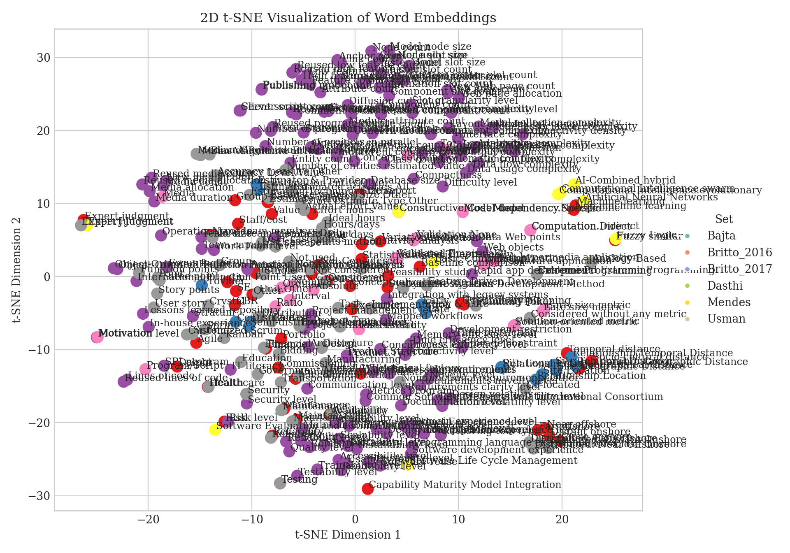
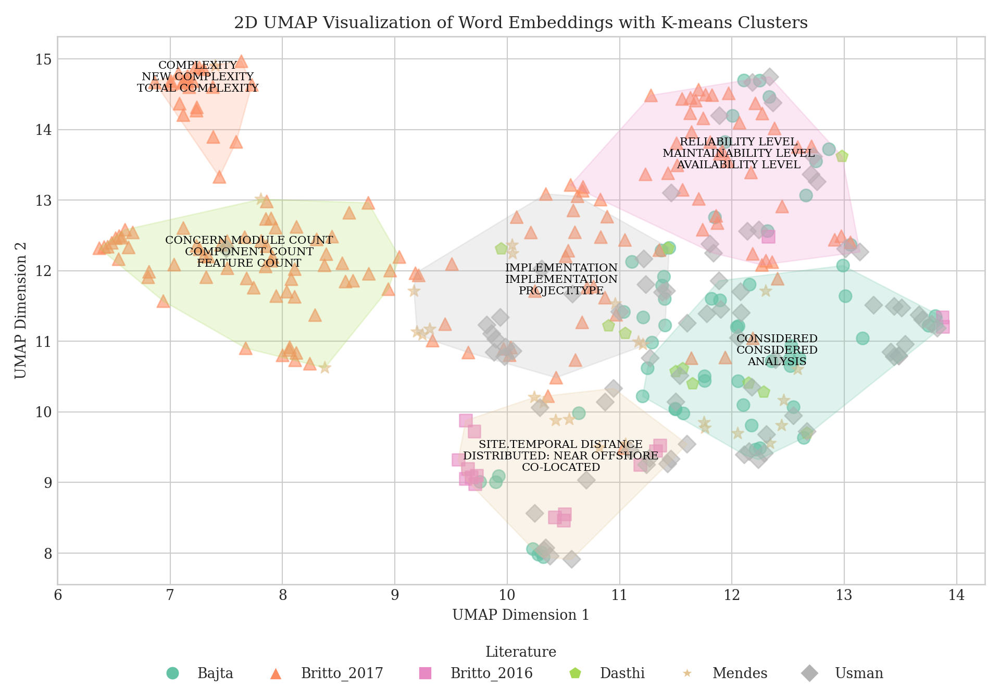
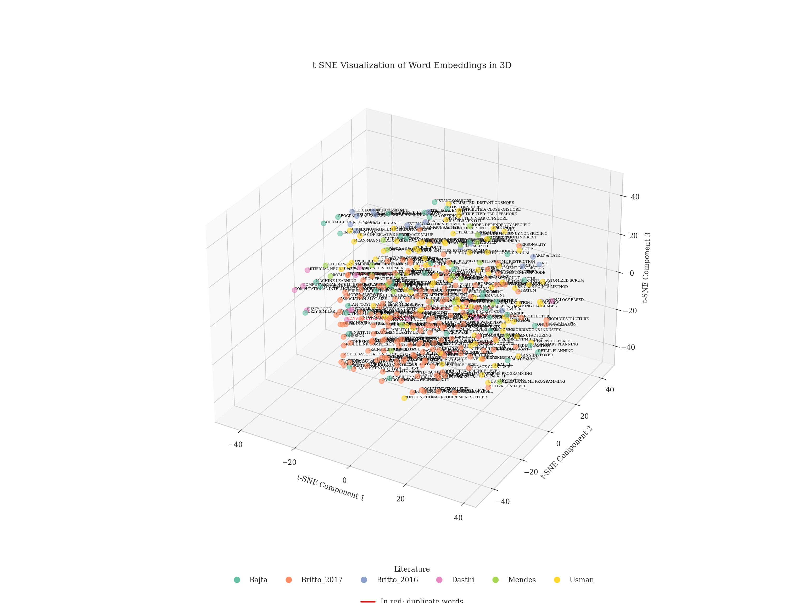

Robustness and Conciseness
Marc
2025-07-29
Last updated: 2025-07-29
Checks: 7 0
Knit directory: slr_taxonomies_workflowr/
This reproducible R Markdown analysis was created with workflowr (version 1.7.1). The Checks tab describes the reproducibility checks that were applied when the results were created. The Past versions tab lists the development history.
Great! Since the R Markdown file has been committed to the Git repository, you know the exact version of the code that produced these results.
Great job! The global environment was empty. Objects defined in the global environment can affect the analysis in your R Markdown file in unknown ways. For reproduciblity it’s best to always run the code in an empty environment.
The command set.seed(20250128) was run prior to running
the code in the R Markdown file. Setting a seed ensures that any results
that rely on randomness, e.g. subsampling or permutations, are
reproducible.
Great job! Recording the operating system, R version, and package versions is critical for reproducibility.
Nice! There were no cached chunks for this analysis, so you can be confident that you successfully produced the results during this run.
Great job! Using relative paths to the files within your workflowr project makes it easier to run your code on other machines.
Great! You are using Git for version control. Tracking code development and connecting the code version to the results is critical for reproducibility.
The results in this page were generated with repository version 4eaeec6. See the Past versions tab to see a history of the changes made to the R Markdown and HTML files.
Note that you need to be careful to ensure that all relevant files for
the analysis have been committed to Git prior to generating the results
(you can use wflow_publish or
wflow_git_commit). workflowr only checks the R Markdown
file, but you know if there are other scripts or data files that it
depends on. Below is the status of the Git repository when the results
were generated:
Ignored files:
Ignored: .Rhistory
Ignored: .Rproj.user/
Untracked files:
Untracked: collapsed_grouped_words_table_colored_new.html
Untracked: unique_characteristics_analysis.csv
Unstaged changes:
Modified: analysis/desktop.ini
Modified: code/desktop.ini
Modified: collapsed_similarity_results_colored.xlsx
Modified: colored_word_pairs.xlsx
Modified: data/desktop.ini
Modified: desktop.ini
Modified: output/desktop.ini
Modified: shared_words_barplot_with_labels.png
Modified: similarity_results_colored.xlsx
Modified: similarity_table.html
Modified: tsne_word_embeddings.png
Modified: tsne_word_embeddings_3d.png
Modified: umap_word_embeddings.png
Modified: word_counts.png
Modified: word_embeddings.png
Modified: word_embeddings_kmeans.png
Note that any generated files, e.g. HTML, png, CSS, etc., are not included in this status report because it is ok for generated content to have uncommitted changes.
These are the previous versions of the repository in which changes were
made to the R Markdown
(analysis/robustnessandconciseness.Rmd) and HTML
(docs/robustnessandconciseness.html) files. If you’ve
configured a remote Git repository (see ?wflow_git_remote),
click on the hyperlinks in the table below to view the files as they
were in that past version.
| File | Version | Author | Date | Message |
|---|---|---|---|---|
| Rmd | 4eaeec6 | marcsole96 | 2025-07-29 | Updated analysis with new code modifications |
| html | 97dcf4d | marcsole96 | 2025-06-13 | Build site. |
| Rmd | f10200c | marcsole96 | 2025-06-13 | Publishing robustness and conciseness analysis |
| html | 3618f25 | marcsole96 | 2025-01-29 | Build site. |
| Rmd | 9b4cff1 | marcsole96 | 2025-01-28 | Test |
| html | eeb963a | marcsole96 | 2025-01-28 | Add generated site and update _site.yml |
Representing a tree with dictionaries
https://blog.finxter.com/5-best-ways-to-construct-and-manage-a-tree-in-python/ https://builtin.com/articles/tree-python #This one is more complex https://bigtree.readthedocs.io/en/0.14.8/ #There is this package to create trees, but maybe it is too complex for us Pouly, Marc. “Estimating Text Similarity based on Semantic Concept Embeddings.” arXiv preprint arXiv:2401.04422 (2024).
import torch
import einops
import math
from transformers import AutoModel
# Load the Jina AI embeddings model
model = AutoModel.from_pretrained("jinaai/jina-embeddings-v3", trust_remote_code=True)
taxonomy_tree = {
'1': {
'2': {
'A': 'Lake',
'B': 'River'
},
'C': 'House',
'3': {
'4': {
'D': 'Mountain',
'E': 'Everest',
'F': 'Volcano'
}
}
}
}
# Function to extract leaf nodes
def get_leaf_nodes(taxonomy):
leaves = {}
def traverse(node, path):
if isinstance(node, dict):
for k, v in node.items():
traverse(v, path + [k])
else:
leaves[path[-1]] = node # Leaf node with its path
traverse(taxonomy, [])
return leaves
# Function to extract groups based on the taxonomy structure
def extract_groups_from_taxonomy(taxonomy):
groups = []
def collect_groups(node, path=[]):
if isinstance(node, dict):
# For each child that is a dictionary (has children)
dict_children = {k: v for k, v in node.items() if isinstance(v, dict)}
# For each child that is a leaf node
leaf_children = {k: v for k, v in node.items() if not isinstance(v, dict)}
# If we have multiple leaf children, they form a group
if len(leaf_children) > 1:
groups.append(list(leaf_children.values()))
# Recursively process dictionary children
for child_key, child_node in dict_children.items():
collect_groups(child_node, path + [child_key])
collect_groups(taxonomy)
return groups
# Function to calculate similarity using the Jina AI embeddings model
def calculate_similarity(text1, text2):
# Encode texts to get embeddings
embeddings = model.encode([text1, text2])
# Calculate cosine similarity
sim = torch.nn.functional.cosine_similarity(torch.tensor(embeddings[0]), torch.tensor(embeddings[1]), dim=0)
return sim.item()
# Function to calculate R(T)
def calculate_r_t(taxonomy):
# Extract groups based on the taxonomy structure
groups = extract_groups_from_taxonomy(taxonomy)
leaves = get_leaf_nodes(taxonomy)
leaf_names = list(leaves.values())
total_groups = len(groups)
r_t_values = []
for idx, group in enumerate(groups):
print(f"\n--- Analyzing Group {idx+1}: {group} ---")
# Skip groups with less than 2 characteristics (can't calculate similarity)
if len(group) < 2:
print(f" Skipping group (less than 2 characteristics)")
continue
# Calculate pairwise similarities within the group
similarities = []
for i in range(len(group)):
for j in range(i + 1, len(group)):
sim = calculate_similarity(group[i], group[j])
print(f" Similarity between '{group[i]}' and '{group[j]}': {sim:.4f}")
similarities.append(sim)
min_similarity = min(similarities) if similarities else 0
print(f" Minimum similarity within group: {min_similarity:.4f}")
# Count intruders
intruder_count = 0
intruder_names = []
for leaf in leaf_names:
if leaf not in group:
is_intruder = False
max_sim = 0
best_match = ""
# Check similarity with EACH characteristic in the group
for group_char in group:
sim_with_group = calculate_similarity(leaf, group_char)
if sim_with_group > max_sim:
max_sim = sim_with_group
best_match = group_char
if sim_with_group > min_similarity:
is_intruder = True
if is_intruder:
intruder_count += 1
intruder_names.append(leaf)
print(f" INTRUDER: '{leaf}' with similarity {max_sim:.4f} to '{best_match}' (exceeds min similarity)")
else:
print(f" Not an intruder: '{leaf}' with max similarity {max_sim:.4f} to '{best_match}'")
n_ic = intruder_count
n_gc = len(group)
n_ac = len(leaf_names)
r_t = (1 - (n_ic / (n_gc * (n_ac - n_gc)))) if n_gc * (n_ac - n_gc) > 0 else 0
r_t_values.append(r_t)
print(f" Group R(T): {r_t:.4f} (intruders: {intruder_count}, group size: {n_gc}, total chars: {n_ac})")
if intruder_names:
print(f" Intruders for this group: {intruder_names}")
else:
print(f" No intruders found for this group")
final_rt = sum(r_t_values) / total_groups if total_groups > 0 else 0
print(f"\nOverall R(T) = {final_rt:.4f} (average of {len(r_t_values)} group scores)")
return final_rt
def extract_ncat(taxonomy):
ncat = 0
first_category_found = False # Flag to track if the first category has been encountered
def count_categories(node, is_root=True):
nonlocal ncat, first_category_found
if isinstance(node, dict):
# Only count nodes that are not the root and not leaves
if not is_root:
if not first_category_found:
first_category_found = True # Set the flag after the first category is found
else:
ncat += 1 # Count the intermediate category
print(f"Found category: {list(node.keys())}") # Print the keys of the current category
# Recursively process children, marking them as non-root
for child in node.values():
count_categories(child, is_root=False)
count_categories(taxonomy)
return ncat
def extract_nchar(taxonomy):
nchar = 0
def count_characteristics(node):
nonlocal nchar
if isinstance(node, dict):
for child in node.values():
count_characteristics(child)
else:
nchar += 1 # Count the current characteristic
count_characteristics(taxonomy)
return nchar
def extract_depths_cat(taxonomy):
depths_cat = []
def find_depths(node, depth):
if isinstance(node, dict):
depths_cat.append(depth) # Record the depth of this category
for child in node.values():
find_depths(child, depth + 1)
find_depths(taxonomy, 0) # Start from depth 0
return depths_cat
def extract_depths_char(taxonomy):
depths_char = []
def find_characteristic_depths(node, depth):
if isinstance(node, dict):
for child in node.values():
find_characteristic_depths(child, depth + 1)
else:
depths_char.append(depth) # Record the depth of this characteristic
find_characteristic_depths(taxonomy, 0) # Start from depth 0
return depths_char
def calculate_conciseness(ncat, nchar, depths_cat, depths_char):
"""
Calculate the conciseness of the taxonomy using the proposed formula.
Parameters:
ncat (int): The number of categories.
nchar (int): The number of characteristics.
depths_cat (list): A list of depths for categories.
depths_char (list): A list of depths for characteristics.
Returns:
float: The conciseness value of the taxonomy.
"""
# Calculate the sum of the inverses of the depths for categories and characteristics
# Only include depths greater than 0 to avoid division by zero
sum_cat = sum(1 / d for d in depths_cat if d > 0) if ncat > 0 else 0 # Sum for categories
sum_char = sum(1 / d for d in depths_char if d > 0) if nchar > 0 else 0 # Sum for characteristics
# Calculate the total sum of inverses of depths
total_sum = sum_cat + sum_char
# Calculate conciseness using the provided formula
if total_sum > 0:
C_T = 1 / (1 + math.log(total_sum - 1))
else:
C_T = 0 # Return 0 if total_sum is not positive
return C_T
# Execute the analysis
ncat = extract_ncat(taxonomy_tree)
nchar = extract_nchar(taxonomy_tree)
depths_cat = extract_depths_cat(taxonomy_tree)
depths_char = extract_depths_char(taxonomy_tree)
print("Number of categories (ncat):", ncat)
print("Number of characteristics (nchar):", nchar)
print("Depths of categories:", depths_cat)
print("Depths of characteristics:", depths_char)
# Display the groups that will be used for robustness calculation
groups = extract_groups_from_taxonomy(taxonomy_tree)
print("Groups identified for robustness calculation:")
for i, group in enumerate(groups):
print(f"Group {i+1}: {group}")
# Calculate R(T) for the given taxonomy
leaves = get_leaf_nodes(taxonomy_tree)
print("Leaf nodes:", leaves)
robustness_value = calculate_r_t(taxonomy_tree)
print(f"Robustness R(T): {robustness_value:.4f}")
conciseness = calculate_conciseness(ncat, nchar, depths_cat, depths_char)
print(f'The conciseness of the taxonomy is: {conciseness}')1st paper a software cost estimation taxonomy for global software development projects
new_taxonomy = {
'Cost estimation for GSD': {
'Cost estimation context': {
'Planning': {
"Conceptualization": "Conceptualization",
"Feasibility study": "Feasibility study",
"Preliminary planning": "Preliminary planning",
"Detail Planning": "Detail planning",
"Execution": "Execution",
"Commissioning": "Commissioning"
},
'Project activities': {
"System investigation": "System investigation",
"Analysis": "Analysis",
"Design": "Design",
"Implementation": "Implementation",
"Testing": "Testing",
"Maintenance": "Maintenance",
"Other": "Other"
},
'Project domain': {
"SE": "Systems Engineering",
"Research & Dev": {
"Telecommunication": "Telecommunication"
},
"Finance": "Finance",
"Healthcare": "Healthcare",
"Other": "Other"
},
'Project setting': {
"Close onshore": "Close onshore",
"Distant onshore": "Distant onshore",
"Near offshore": "Near offshore",
"Far offshore": "Far offshore"
},
'Planning approaches': {
"Constructive Cost Model": "Constructive Cost Model",
"Capability Maturity Model Integration": "Capability Maturity Model Integration",
"Agile": "Agile",
"Delphi": "Delphi",
"GA": "Genetic Algorithms",
"CBR": "Case-Based Reasoning",
"Fuzzy similar": "Fuzzy similar",
"Other": "Other"
},
'Number of sites': {
"Value": "Value"
},
'Team size': {
"No of team members": "Number of team members"
}
},
'Estimation technique': {
'Estimation technique': {
"Expert judgment": "Expert judgment",
"Machine learning": "Machine learning",
"Non-machine learning": "Non-machine learning"
},
'Use technique': {
"Individual": "Individual",
"Group-based estimation": "Group-based estimation"
}
},
'Cost estimate': {
'Estimated cost': {
"Estimate value": "Estimated cost value"
},
'Actual cost': {
"Value": "Actual cost value"
},
'Estimation dimension': {
"Effort hours": "Effort hours",
"Staff/cost": "Staff/cost",
"Hardware": "Hardware",
"Risk": "Risk",
"Portfolio": "Portfolio"
},
'Accuracy measure': {
"Baseline comparison": "Baseline comparison",
"Variation reduction": "Variation reduction",
"Sensitivity analysis": "Sensitivity analysis"
}
},
'Cost estimators': {
'Product size': {
"Size report": "Size report",
"Statistics analysis": "Statistics analysis"
},
'Team experience': {
"Considered": "Considered experience",
"Not considered": "Not considered experience"
},
'Team structure': {
"Considered": "Considered structure",
"Not Considered": "Not considered structure"
},
'Product requirement': {
"Performance": "Performance",
"Security": "Security",
"Availability": "Availability",
"Reliability": "Reliability",
"Maintainability": "Maintainability",
"Other": "Other requirement"
},
'Distributed teams distances': {
"Geographical distance": "Geographical distance",
"Temporal distance": "Temporal distance",
"Socio-cultural distance": "Socio-cultural distance"
}
}
}
}
#### Labeling ambiguous characteristics
new_taxonomy = {
'Cost estimation for GSD': {
'Cost estimation context': {
'Planning': {
"Conceptualization": "Conceptualization",
"Feasibility study": "Feasibility study",
"Preliminary planning": "Preliminary planning",
"Detail Planning": "Detail planning",
"Execution": "Execution",
"Commissioning": "Commissioning"
},
'Project activities': {
"System investigation": "System investigation",
"Analysis": "Analysis",
"Design": "Design",
"Implementation": "Implementation",
"Testing": "Testing",
"Maintenance": "Maintenance",
"Project activities.Other": "Project activities.Other"
},
'Project domain': {
"SE": "Systems Engineering",
"Research & Dev":"Research & Dev",
"Telecommunication": "Telecommunication",
"Finance": "Finance",
"Healthcare": "Healthcare",
"Project domain.Other": "Project domain.Other"
},
'Project setting': {
"Close onshore": "Close onshore",
"Distant onshore": "Distant onshore",
"Near offshore": "Near offshore",
"Far offshore": "Far offshore"
},
'Planning approaches': {
"Constructive Cost Model": "Constructive Cost Model",
"Capability Maturity Model Integration": "Capability Maturity Model Integration",
"Agile": "Agile",
"Delphi": "Delphi",
"GA": "Genetic Algorithms",
"CBR": "Case-Based Reasoning",
"Fuzzy similar": "Fuzzy similar",
"Other": "Other"
},
'Number of sites': {
"Number of sites.Value": "Number of sites.Value"
},
'Team size': {
"No of team members": "Number of team members"
}
},
'Estimation technique': {
'Estimation technique': {
"Expert judgment": "Expert judgment",
"Machine learning": "Machine learning",
"Non-machine learning": "Non-machine learning"
},
'Use technique': {
"Individual": "Individual",
"Group-based estimation": "Group-based estimation"
}
},
'Cost estimate': {
'Estimated cost': {
"Estimate value": "Estimated cost value"
},
'Actual cost': {
"Actual cost.Value": "Actual cost.Value"
},
'Estimation dimension': {
"Effort hours": "Effort hours",
"Staff/cost": "Staff/cost",
"Hardware": "Hardware",
"Risk": "Risk",
"Portfolio": "Portfolio"
},
'Accuracy measure': {
"Baseline comparison": "Baseline comparison",
"Variation reduction": "Variation reduction",
"Sensitivity analysis": "Sensitivity analysis"
}
},
'Cost estimators': {
'Product size': {
"Size report": "Size report",
"Statistics analysis": "Statistics analysis"
},
'Team experience': {
"Considered": "Considered experience",
"Not considered": "Not considered experience"
},
'Team structure': {
"Considered": "Considered structure",
"Not Considered": "Not considered structure"
},
'Product requirement': {
"Performance": "Performance",
"Security": "Security",
"Availability": "Availability",
"Reliability": "Reliability",
"Maintainability": "Maintainability",
"Product requirement.Other": "Product requirement.Other"
},
'Distributed teams distances': {
"Geographical distance": "Geographical distance",
"Temporal distance": "Temporal distance",
"Socio-cultural distance": "Socio-cultural distance"
}
}
}
}
leaves = get_leaf_nodes(new_taxonomy)
print(leaves)
ncat = extract_ncat(new_taxonomy)
nchar = extract_nchar(new_taxonomy)
depths_cat = extract_depths_cat(new_taxonomy)
depths_char = extract_depths_char(new_taxonomy)
print("Number of categories (ncat):", ncat)
print("Number of characteristics (nchar):", nchar)
print("Depths of categories:", depths_cat)
print("Depths of characteristics:", depths_char)
robustness_value = calculate_r_t(new_taxonomy)
print(f"Robustness R(T): {robustness_value:.4f}")
conciseness= calculate_conciseness(ncat, nchar, depths_cat, depths_char)
print(f'The conciseness of the taxonomy is: {conciseness}')2nd paper, A taxonomy of web effort predictors
new_taxonomy = {
'Web Predictor': {
'Size Metric': {
'Length': {
'Web page count': 'Web page count',
'Media count': 'Media count',
'New media count': 'New media count',
'New Web page count': 'New Web page count',
'Link count': 'Link count',
'Program count': 'Program count',
'Reused component count': 'Reused component count',
'Lines of code': 'Lines of code',
'Reused program count': 'Reused program count',
'Reused media count': 'Reused media count',
'Web page allocation': 'Web page allocation',
'Reused lines of code': 'Reused lines of code',
'Media allocation': 'Media allocation',
'Reused media allocation': 'Reused media allocation',
'Entity count': 'Entity count',
'Attribute count': 'Attribute count',
'Component count': 'Component count',
'Statement count': 'Statement count',
'Node count': 'Node count',
'Collection slot size': 'Collection slot size',
'Component granularity level': 'Component granularity level',
'Slot granularity level': 'Slot granularity level',
'Model node size': 'Model node size',
'Cluster node size': 'Cluster node size',
'Node slot size': 'Node slot size',
'Publishing model unit count': 'Publishing model unit count',
'Model slot size': 'Model slot size',
'Association slot size': 'Association slot size',
'Client script count': 'Client script count',
'Server script count': 'Server script count',
'Information slot count': 'Information slot count',
'Association center slot count': 'Association center slot count',
'Collection center slot count': 'Collection center slot count',
'Component slot count': 'Component slot count',
'Semantic association count': 'Semantic association count',
'Segment count': 'Segment count',
'Slot count': 'Slot count',
'Cluster slot count': 'Cluster slot count',
'Cluster count': 'Cluster count',
'Publishing unit count': 'Publishing unit count',
'Section count': 'Section count',
'Inner/sub concern count': 'Inner/sub concern count',
'Indifferent concern count': 'Indifferent concern count',
'Module point cut count': 'Module point cut count',
'Module count': 'Module count',
'Module attribute count': 'Module attribute count',
'Operation count': 'Operation count',
'Comment count': 'Comment count',
'Reused comment count': 'Reused comment count',
'Media duration': 'Media duration',
'Diffusion cut count': 'Diffusion cut count',
'Concern module count': 'Concern module count',
'Concern operation count': 'Concern operation count',
'Anchor count': 'Anchor count'},
'Functionality': {
'High feature count': 'High feature count',
'Low feature count': 'Low feature count',
'Reused high feature count': 'Reused high feature count',
'Reused low feature count': 'Reused low feature count',
'Web objects': 'Web objects',
'Common Software Measurement International Consortium': 'Common Software Measurement International Consortium',
'International Function Point Users Group': 'International Function Point Users Group',
'Object-Oriented Heuristic Function Points': 'Object-Oriented Heuristic Function Points',
'Object-Oriented Function Points': 'Object-Oriented Function Points',
'Use case count': 'Use case count',
'Feature count': 'Feature count',
'Data Web points': 'Data Web points'},
'Object-oriented': {
'Cohesion': 'Cohesion',
'Class coupling': 'Class coupling',
'Concern coupling': 'Concern coupling'},
'Complexity': {
'Connectivity density': 'Connectivity density',
'Cyclomatic complexity': 'Cyclomatic complexity',
'Model collection complexity': 'Model collection complexity',
'Model association complexity': 'Model association complexity',
'Model link complexity': 'Model link complexity',
'Page complexity': 'Page complexity',
'Component complexity': 'Component complexity',
'Total complexity': 'Total complexity',
'Adaptation complexity': 'Adaptation complexity',
'New complexity': 'New complexity',
'Data usage complexity': 'Data usage complexity',
'Data flow complexity': 'Data flow complexity',
'Cohesion complexity': 'Cohesion complexity',
'Interface complexity': 'Interface complexity',
'Control flow complexity': 'Control flow complexity',
'Class complexity': 'Class complexity',
'Layout complexity': 'Layout complexity',
'Input complexity': 'Input complexity',
'Output complexity': 'Output complexity'}
},
'Cost Driver': {
'Product':{
'Type': 'Type',
'Stratum': 'Stratum',
'Compactness': 'Compactness',
'Structure': 'Structure',
'Architecture': 'Architecture',
'Integration with legacy systems': 'Integration with legacy systems',
'Concurrency level': 'Concurrency level',
'Processing requirements': 'Processing requirements',
'Database size': 'Database size',
'Requirements volatility level': 'Requirements volatility level',
'Requirements novelty level': 'Requirements novelty level',
'Reliability level': 'Reliability level',
'Maintainability level': 'Maintainability level',
'Time efficiency level': 'Time efficiency level',
'Memory efficiency level': 'Memory efficiency level',
'Portability level': 'Portability level',
'Scalability level': 'Scalability level',
'Quality level': 'Quality level',
'Usability level': 'Usability level',
'Readability level': 'Readability level',
'Security level': 'Security level',
'Installability level': 'Installability level',
'Modularity level': 'Modularity level',
'Flexibility level': 'Flexibility level',
'Testability level': 'Testability level',
'Accessibility level': 'Accessibility level',
'Trainability level': 'Trainability level',
'Innovation level': 'Innovation level',
'Technical factors': 'Technical factors',
'Storage constraint': 'Storage constraint',
'Reusability level': 'Reusability level',
'Robustness level': 'Robustness level',
'Design volatility': 'Design volatility',
'Experience level': 'Experience level',
'Requirements clarity level': 'Requirements clarity level'},
'Client': {
'Availability level': 'Availability level',
'IT literacy': 'IT literacy',
'Mapped workflows': 'Mapped workflows',
'Personality': 'Personality'},
'Development Company': {
'SPI program': 'SPI program',
'Metrics’ program': 'Metrics’ program',
'Number of projects in parallel': 'Number of projects in parallel',
'Software reuse': 'Software reuse'},
'Project': {
'Documentation level': 'Documentation level',
'Number of programming languages': 'Number of programming languages',
'Type': 'Type',
'Process efficiency level': 'Process efficiency level',
'Project management level': 'Project management level',
'Infrastructure': 'Infrastructure',
'Development restriction': 'Development restriction',
'Time restriction': 'Time restriction',
'Risk level': 'Risk level',
'Rapid app development': 'Rapid app development',
'Operational mode': 'Operational mode',
'Resource level': 'Resource level',
'Lessons learned repository': 'Lessons learned repository'},
'Team': {
'Domain experience level': 'Domain experience level',
'Team size': 'Team size',
'Deployment platform experience level': 'Deployment platform experience level',
'Team capability': 'Team capability',
'Programming language experience level': 'Programming language experience level',
'Tool experience level': 'Tool experience level',
'Communication level': 'Communication level',
'Software development experience': 'Software development experience',
'Work Team level': 'Work Team level',
'Stability level': 'Stability level',
'Motivation level': 'Motivation level',
'Focus factor': 'Focus factor',
'Tool experience level': 'Tool experience level',
'OO experience level': 'OO experience level',
'In-house experience': 'In-house experience'},
'Technology': {
'Authoring tool type': 'Authoring tool type',
'Productivity level': 'Productivity level',
'Novelty level': 'Novelty level',
'Platform volatility level': 'Platform volatility level',
'Difficulty level': 'Difficulty level',
'Platform support level': 'Platform support level'}}
}
}
#### Labeling ambiguous characteristics
new_taxonomy = {
'Web Predictor': {
'Size Metric': {
'Length': {
'Web page count': 'Web page count',
'Media count': 'Media count',
'New media count': 'New media count',
'New Web page count': 'New Web page count',
'Link count': 'Link count',
'Program count': 'Program count',
'Reused component count': 'Reused component count',
'Lines of code': 'Lines of code',
'Reused program count': 'Reused program count',
'Reused media count': 'Reused media count',
'Web page allocation': 'Web page allocation',
'Reused lines of code': 'Reused lines of code',
'Media allocation': 'Media allocation',
'Reused media allocation': 'Reused media allocation',
'Entity count': 'Entity count',
'Attribute count': 'Attribute count',
'Component count': 'Component count',
'Statement count': 'Statement count',
'Node count': 'Node count',
'Collection slot size': 'Collection slot size',
'Component granularity level': 'Component granularity level',
'Slot granularity level': 'Slot granularity level',
'Model node size': 'Model node size',
'Cluster node size': 'Cluster node size',
'Node slot size': 'Node slot size',
'Publishing model unit count': 'Publishing model unit count',
'Model slot size': 'Model slot size',
'Association slot size': 'Association slot size',
'Client script count': 'Client script count',
'Server script count': 'Server script count',
'Information slot count': 'Information slot count',
'Association center slot count': 'Association center slot count',
'Collection center slot count': 'Collection center slot count',
'Component slot count': 'Component slot count',
'Semantic association count': 'Semantic association count',
'Segment count': 'Segment count',
'Slot count': 'Slot count',
'Cluster slot count': 'Cluster slot count',
'Cluster count': 'Cluster count',
'Publishing unit count': 'Publishing unit count',
'Section count': 'Section count',
'Inner/sub concern count': 'Inner/sub concern count',
'Indifferent concern count': 'Indifferent concern count',
'Module point cut count': 'Module point cut count',
'Module count': 'Module count',
'Module attribute count': 'Module attribute count',
'Operation count': 'Operation count',
'Comment count': 'Comment count',
'Reused comment count': 'Reused comment count',
'Media duration': 'Media duration',
'Diffusion cut count': 'Diffusion cut count',
'Concern module count': 'Concern module count',
'Concern operation count': 'Concern operation count',
'Anchor count': 'Anchor count'},
'Functionality': {
'High feature count': 'High feature count',
'Low feature count': 'Low feature count',
'Reused high feature count': 'Reused high feature count',
'Reused low feature count': 'Reused low feature count',
'Web objects': 'Web objects',
'Common Software Measurement International Consortium': 'Common Software Measurement International Consortium',
'International Function Point Users Group': 'International Function Point Users Group',
'Object-Oriented Heuristic Function Points': 'Object-Oriented Heuristic Function Points',
'Object-Oriented Function Points': 'Object-Oriented Function Points',
'Use case count': 'Use case count',
'Feature count': 'Feature count',
'Data Web points': 'Data Web points'},
'Object-oriented': {
'Cohesion': 'Cohesion',
'Class coupling': 'Class coupling',
'Concern coupling': 'Concern coupling'},
'Complexity': {
'Connectivity density': 'Connectivity density',
'Cyclomatic complexity': 'Cyclomatic complexity',
'Model collection complexity': 'Model collection complexity',
'Model association complexity': 'Model association complexity',
'Model link complexity': 'Model link complexity',
'Page complexity': 'Page complexity',
'Component complexity': 'Component complexity',
'Total complexity': 'Total complexity',
'Adaptation complexity': 'Adaptation complexity',
'New complexity': 'New complexity',
'Data usage complexity': 'Data usage complexity',
'Data flow complexity': 'Data flow complexity',
'Cohesion complexity': 'Cohesion complexity',
'Interface complexity': 'Interface complexity',
'Control flow complexity': 'Control flow complexity',
'Class complexity': 'Class complexity',
'Layout complexity': 'Layout complexity',
'Input complexity': 'Input complexity',
'Output complexity': 'Output complexity'}
},
'Cost Driver': {
'Product':{
'Product.Type': 'Product.Type',
'Stratum': 'Stratum',
'Compactness': 'Compactness',
'Product.Structure': 'Product.Structure',
'Architecture': 'Architecture',
'Integration with legacy systems': 'Integration with legacy systems',
'Concurrency level': 'Concurrency level',
'Processing requirements': 'Processing requirements',
'Database size': 'Database size',
'Requirements volatility level': 'Requirements volatility level',
'Requirements novelty level': 'Requirements novelty level',
'Reliability level': 'Reliability level',
'Maintainability level': 'Maintainability level',
'Time efficiency level': 'Time efficiency level',
'Memory efficiency level': 'Memory efficiency level',
'Portability level': 'Portability level',
'Scalability level': 'Scalability level',
'Quality level': 'Quality level',
'Usability level': 'Usability level',
'Readability level': 'Readability level',
'Security level': 'Security level',
'Installability level': 'Installability level',
'Modularity level': 'Modularity level',
'Flexibility level': 'Flexibility level',
'Testability level': 'Testability level',
'Accessibility level': 'Accessibility level',
'Trainability level': 'Trainability level',
'Innovation level': 'Innovation level',
'Technical factors': 'Technical factors',
'Storage constraint': 'Storage constraint',
'Reusability level': 'Reusability level',
'Robustness level': 'Robustness level',
'Design volatility': 'Design volatility',
'Product.Experience level': 'Product.Experience level',
'Requirements clarity level': 'Requirements clarity level'},
'Client': {
'Availability level': 'Availability level',
'IT literacy': 'IT literacy',
'Mapped workflows': 'Mapped workflows',
'Personality': 'Personality'},
'Development Company': {
'SPI program': 'SPI program',
'Metrics program': 'Metrics program',
'Number of projects in parallel': 'Number of projects in parallel',
'Software reuse': 'Software reuse'},
'Project': {
'Documentation level': 'Documentation level',
'Number of programming languages': 'Number of programming languages',
'Project.Type': 'Project.Type',
'Process efficiency level': 'Process efficiency level',
'Project management level': 'Project management level',
'Project.Infrastructure': 'Project.Infrastructure',
'Development restriction': 'Development restriction',
'Time restriction': 'Time restriction',
'Risk level': 'Risk level',
'Rapid app development': 'Rapid app development',
'Operational mode': 'Operational mode',
'Resource level': 'Resource level',
'Lessons learned repository': 'Lessons learned repository'},
'Team': {
'Domain experience level': 'Domain experience level',
'Team size': 'Team size',
'Deployment platform experience level': 'Deployment platform experience level',
'Team capability': 'Team capability',
'Programming language experience level': 'Programming language experience level',
'Tool experience level': 'Tool experience level',
'Communication level': 'Communication level',
'Software development experience': 'Software development experience',
'Work Team level': 'Work Team level',
'Stability level': 'Stability level',
'Motivation level': 'Motivation level',
'Focus factor': 'Focus factor',
'OO experience level': 'OO experience level',
'In-house experience': 'In-house experience'},
'Technology': {
'Authoring tool type': 'Authoring tool type',
'Productivity level': 'Productivity level',
'Novelty level': 'Novelty level',
'Platform volatility level': 'Platform volatility level',
'Difficulty level': 'Difficulty level',
'Platform support level': 'Platform support level'}}
}
}
leaves = get_leaf_nodes(new_taxonomy)
print(leaves)
ncat = extract_ncat(new_taxonomy)
nchar = extract_nchar(new_taxonomy)
depths_cat = extract_depths_cat(new_taxonomy)
depths_char = extract_depths_char(new_taxonomy)
print("Number of categories (ncat):", ncat)
print("Number of characteristics (nchar):", nchar)
print("Depths of categories:", depths_cat)
print("Depths of characteristics:", depths_char)
robustness_value = calculate_r_t(new_taxonomy)
print(f"Robustness R(T): {robustness_value:.4f}")
conciseness= calculate_conciseness(ncat, nchar, depths_cat, depths_char)
print(f'The conciseness of the taxonomy is: {conciseness}')3rd Paper A specialized global software engineering taxonomy for effort estimation
new_taxonomy = {
'GSE': {
'Project': {
'Site': {
"Location": "Location",
"Legal Entity": "Legal Entity",
"Geographic Distance": "Geographic Distance",
"Temporal Distance": "Temporal Distance",
"Estimation stage": {
"Early": "Early",
"Early & Late": "Early & Late",
"Late": "Late"
},
"Estimation process role": {
"Estimator": "Estimator",
"Estimator & Provider": "Estimator & Provider",
"Provider": "Provider"
}
},
'Relationship': {
"Location": "Location",
"Legal Entity": "Legal Entity",
"Geographic Distance": "Geographic Distance",
"Temporal Distance": "Temporal Distance",
"Estimation process architectural model": {
"Centralized": "Centralized",
"Distributed": "Distributed",
"Semi-distributed": "Semi-distributed"
}
}
}
}
}
new_taxonomy = {
'GSE': {
'Project': {
'Site': {
"Site.Location": "Site.Location",
"Site.Legal Entity": "Site.Legal Entity",
"Site.Geographic Distance": "Site.Geographic Distance",
"Site.Temporal Distance": "Site.Temporal Distance",
"Estimation stage": {
"Early": "Early",
"Early & Late": "Early & Late",
"Late": "Late"
},
"Estimation process role": {
"Estimator": "Estimator",
"Estimator & Provider": "Estimator & Provider",
"Provider": "Provider"
}
},
'Relationship': {
"Relationship.Location": "Relationship.Location",
"Relationship.Legal Entity": "Relationship.Legal Entity",
"Relationship.Geographic Distance": "Relationship.Geographic Distance",
"Relationship.Temporal Distance": "Relationship.Temporal Distance",
"Estimation process architectural model": {
"Centralized": "Centralized",
"Distributed": "Distributed",
"Semi-distributed": "Semi-distributed"
}
}
}
}
}
leaves = get_leaf_nodes(new_taxonomy)
print(leaves)
ncat = extract_ncat(new_taxonomy)
nchar = extract_nchar(new_taxonomy)
depths_cat = extract_depths_cat(new_taxonomy)
depths_char = extract_depths_char(new_taxonomy)
print("Number of categories (ncat):", ncat)
print("Number of characteristics (nchar):", nchar)
print("Depths of categories:", depths_cat)
print("Depths of characteristics:", depths_char)
robustness_value = calculate_r_t(new_taxonomy)
print(f"Robustness R(T): {robustness_value:.4f}")
conciseness= calculate_conciseness(ncat, nchar, depths_cat, depths_char)
print(f'The conciseness of the taxonomy is: {conciseness}')4rth Paper: A taxonomy of Approaches and Methods for Software Effort Estimation
new_taxonomy = {
'Software estimation': {
'Basic Estimating Methods': {
"Algorithmic": {
"Constructive Cost Model": "Constructive Cost Model",
"Software Life Cycle Management": "Software Life Cycle Management",
"Software Evaluation and Estimation for Risk": "Software Evaluation and Estimation for Risk"
},
"Non-Algorithmic": {
"Expert Judgment": "Expert Judgment", # Corrected spelling
"Analogy-Based": "Analogy-Based"
}
},
'Combined Estimating Methods': {
"Basic-Combination": "Basic-Combination",
"AI-Combination": {
"Fuzzy Logic": "Fuzzy Logic",
"Artificial Neural Networks": "Artificial Neural Networks",
"Computational Intelligence": { # Corrected spelling
"swarm": "swarm",
"evolutionary": ""
}
},
"AI-Combined hybrid": "AI-Combined hybrid"
}
}
}
new_taxonomy = {
'Software estimation': {
'Basic Estimating Methods': {
"Algorithmic": {
"Constructive Cost Model": "Constructive Cost Model",
"Software Life Cycle Management": "Software Life Cycle Management",
"Software Evaluation and Estimation for Risk": "Software Evaluation and Estimation for Risk"
},
"Non-Algorithmic": {
"Expert Judgment": "Expert Judgment",
"Analogy-Based": "Analogy-Based"
}
},
'Combined Estimating Methods': {
"Basic-Combination": "Basic-Combination",
"AI-Combination": {
"Fuzzy Logic": "Fuzzy Logic",
"Artificial Neural Networks": "Artificial Neural Networks",
"Computational Intelligence": {
"Computational Intelligence.swarm": "Computational Intelligence.swarm",
"Computational Intelligence.evolutionary": "Computational Intelligence.evolutionary"
}
},
"AI-Combined hybrid": "AI-Combined hybrid"
}
}
}
leaves = get_leaf_nodes(new_taxonomy)
print(leaves)
ncat = extract_ncat(new_taxonomy)
nchar = extract_nchar(new_taxonomy)
depths_cat = extract_depths_cat(new_taxonomy)
depths_char = extract_depths_char(new_taxonomy)
print("Number of categories (ncat):", ncat)
print("Number of characteristics (nchar):", nchar)
print("Depths of categories:", depths_cat)
print("Depths of characteristics:", depths_char)
robustness_value = calculate_r_t(new_taxonomy)
print(f"Robustness R(T): {robustness_value:.4f}")
conciseness= calculate_conciseness(ncat, nchar, depths_cat, depths_char)
print(f'The conciseness of the taxonomy is: {conciseness}')5th Paper, Towards a Taxonomy of Hypermedia and Web Application Size Metrics.
new_taxonomy = {
"Hypermedia and Web Application Size Metrics":{
"Motivation":"Motivation",
"Harvesting time":{
"Early size metric":"Early size metric",
"Late size metric":"Late size metric"},
"Metric foundation":{
"Problem-oriented metric":"Problem-oriented metric",
"Solution-oriented metric":"Solution-oriented metric"},
"Class":{
"Length":"Length",
"Functionality":"Functionality",
"Complexity":"Complexity"},
"Entity":{
"Web hypermedia application":"Web hypermedia application",
"Web software application":"Web software application",
"Web application":"Web application",
"Media":"Media",
"Program/Script":"Program/Sript"},
"Measurement Scale":{
"Nominal":"Nominal",
"Ordinal":"Ordinal",
"Interval":"Interval",
"Ratio":"Ratio",
"Absolute":"Absolute"},
"Computation":{
"Direct":"Direct",
"Indirect":"Indirect"},
"Validation":{
"Validated Empirically":"Validated Empirically",
"Validated Theoretically":"Validated Theoretically",
"Both":"Both",
"None":"None"},
"Model dependency":{
"Specific":"Specific",
"Nonspecific":"Nonspecific"}
}
}
new_taxonomy = {
"Hypermedia and Web Application Size Metrics":{
"Motivation":"Motivation",
"Harvesting time":{
"Early size metric":"Early size metric",
"Late size metric":"Late size metric"},
"Metric foundation":{
"Problem-oriented metric":"Problem-oriented metric",
"Solution-oriented metric":"Solution-oriented metric"},
"Class":{
"Class.Length":"Class.Length",
"Functionality":"Functionality",
"Complexity":"Complexity"},
"Entity":{
"Web hypermedia application":"Web hypermedia application",
"Web software application":"Web software application",
"Web application":"Web application",
"Media":"Media",
"Program/Script":"Program/Script"},
"Measurement Scale":{
"Nominal":"Nominal",
"Ordinal":"Ordinal",
"Interval":"Interval",
"Ratio":"Ratio",
"Absolute":"Absolute"},
"Computation":{
"Computation.Direct":"Computation.Direct",
"Computation.Indirect":"Computation.Indirect"},
"Validation":{
"Validated Empirically":"Validated Empirically",
"Validated Theoretically":"Validated Theoretically",
"Validation.Both":"Validation.Both",
"Validation.None":"Validation.None"},
"Model dependency":{
"Model dependency.Specific":"Model dependency.Specific",
"Model dependency.Nonspecific":"Model dependency.Nonspecific"}
}
}
leaves = get_leaf_nodes(new_taxonomy)
print(leaves)
ncat = extract_ncat(new_taxonomy)
nchar = extract_nchar(new_taxonomy)
depths_cat = extract_depths_cat(new_taxonomy)
depths_char = extract_depths_char(new_taxonomy)
print("Number of categories (ncat):", ncat)
print("Number of characteristics (nchar):", nchar)
print("Depths of categories:", depths_cat)
print("Depths of characteristics:", depths_char)
robustness_value = calculate_r_t(new_taxonomy)
print(f"Robustness R(T): {robustness_value:.4f}")
conciseness= calculate_conciseness(ncat, nchar, depths_cat, depths_char)
print(f'The conciseness of the taxonomy is: {conciseness}')6th Paper, An Effort Estimation Taxonomy for Agile Software Development
new_taxonomy = {
'Effort Estimation in ASD': {
'Estimation context': {
"Planning level": {
"Release": "Release",
"Sprint": "Sprint",
"Daily": "Daily",
"Bidding": "Bidding"
},
"Estimated activities": {
"Analysis": "Analysis",
"Design": "Design",
"Implementation": "Implementation",
"Testing": "Testing",
"Maintenance": "Maintenance",
"All": "All"
},
"Agile methods": {
"Extreme Programming": "Extreme Programming",
"Scrum": "Scrum",
"Customized Extreme Programming": "Customized Extreme Programming",
"Customized Scrum": "Customized Scrum",
"Dynamic Systems Development Method": "Dynamic Systems Development Method",
"Crystal": "Crystal",
"Feature-Driven Development": "Feature-Driven Development",
"Kanban": "Kanban"
},
"Project domain": {
"Communications industry": "Communications industry",
"Transportation": "Transportation",
"Financial": "Financial",
"Education": "Education",
"Health": "Health",
"Retail/Wholesale": "Retail/Wholesale",
"Manufacturing": "Manufacturing",
"Government/Military": "Government/Military",
"Other": "Other"
},
"Project setting": {
"Co-located": "Co-located",
"Distributed: Close Onshore": "Distributed: Close Onshore",
"Distributed: Distant Onshore": "Distributed: Distant Onshore",
"Distributed: Near Offshore": "Distributed: Near Offshore",
"Distributed: Far Offshore": "Distributed: Far Offshore"
},
"Estimation entity": {
"User story": "User story",
"Task": "Task",
"Use case": "Use case",
"Other": "Other"
},
"Number of entities estimated": {
"Value": "Value"
},
"Team size": {
"No. of team members": "No. of team members"
}
},
'Estimation technique': {
"Estimation Techniques": {
"Planning Poker": "Planning Poker",
"Expert Judgement": "Expert Judgement",
"Analogy": "Analogy",
"Use case points method": "Use case points method",
"Other": "Other"
},
"Type": {
"Single": "Single",
"Group": "Group"
}
},
'Effort predictors': {
"Size": {
"Story points": "Story points",
"User case points": "User case points",
"Function points": "Function points",
"Other": "Other",
"Not used": "Not used",
"Considered without any metric": "Considered without any metric"
},
"Team's prior experience": {
"Considered": "Considered",
"Not Considered": "Not Considered"
},
"Team's skill level": {
"Considered": "Considered",
"Not Considered": "Not Considered"
},
"Non functional requirements": {
"Performance": "Performance",
"Security": "Security",
"Availability": "Availability",
"Reliability": "Reliability",
"Maintainability": "Maintainability",
"Other": "Other", # Changed period to comma
"Not considered": "Not considered"
},
"Distributed teams' issues": {
"Considered": "Considered",
"Not Considered": "Not Considered",
"Not applicable": "Not applicable"
},
"Customer Communication": {
"Considered": "Considered",
"Not Considered": "Not Considered"
}
},
'Effort estimate': {
"Estimated effort": {
"Estimate value(s)": "Estimate value(s)"
},
"Actual effort": {
"Value": "Value"
},
"Type": {
"Point": "Point",
"Three point": "Three point",
"Distribution": "Distribution",
"Other": "Other"
},
"Unit": {
"House/days": "House/days",
"Pair days": "Pair/days",
"Ideal hours": "Ideal hours",
"Other": "Other"
},
"Accuracy Level": {
"Value": "Value"
},
"Accuracy measure": {
"Mean Magnitude of Relative Error": "Mean Magnitude of Relative Error",
"Median Magnitude of Relative Error": "Median Magnitude of Relative Error",
"Bias of Relative Error": "Bias of Relative Error",
"Other": "Other",
"Not used": "Not used"
}
}
}
}
new_taxonomy = {
'Effort Estimation in ASD': {
'Estimation context': {
"Planning level": {
"Release": "Release",
"Sprint": "Sprint",
"Daily": "Daily",
"Bidding": "Bidding"
},
"Estimated activities": {
"Analysis": "Analysis",
"Design": "Design",
"Implementation": "Implementation",
"Testing": "Testing",
"Maintenance": "Maintenance",
"Estimated activities.All": "Estimated activities.All"
},
"Agile methods": {
"Extreme Programming": "Extreme Programming",
"Scrum": "Scrum",
"Customized Extreme Programming": "Customized Extreme Programming",
"Customized Scrum": "Customized Scrum",
"Dynamic Systems Development Method": "Dynamic Systems Development Method",
"Crystal": "Crystal",
"Feature-Driven Development": "Feature-Driven Development",
"Kanban": "Kanban"
},
"Project domain": {
"Communications industry": "Communications industry",
"Transportation": "Transportation",
"Financial": "Financial",
"Education": "Education",
"Health": "Health",
"Retail/Wholesale": "Retail/Wholesale",
"Manufacturing": "Manufacturing",
"Government/Military": "Government/Military",
"Project domain.Other": "Project domain.Other"
},
"Project setting": {
"Co-located": "Co-located",
"Distributed: Close Onshore": "Distributed: Close Onshore",
"Distributed: Distant Onshore": "Distributed: Distant Onshore",
"Distributed: Near Offshore": "Distributed: Near Offshore",
"Distributed: Far Offshore": "Distributed: Far Offshore"
},
"Estimation entity": {
"User story": "User story",
"Task": "Task",
"Use case": "Use case",
"Estimation entity.Other": "Estimation entity.Other"
},
"Number of entities estimated": {
"Number of entities estimated.Value": "Number of entities estimated.Value"
},
"Team size": {
"No. of team members": "No. of team members"
}
},
'Estimation technique': {
"Estimation Techniques": {
"Planning Poker": "Planning Poker",
"Expert Judgement": "Expert Judgement",
"Analogy": "Analogy",
"Use case points method": "Use case points method",
"Estimation Techniques.Other": "Estimation Techniques.Other"
},
"Type": {
"Single": "Single",
"Group": "Group"
}
},
'Effort predictors': {
"Size": {
"Story points": "Story points",
"User case points": "User case points",
"Function points": "Function points",
"Size.Other": "Size.Other",
"Not used": "Not used",
"Considered without any metric": "Considered without any metric"
},
"Team's prior experience": {
"Considered": "Considered",
"Not Considered": "Not Considered"
},
"Team's skill level": {
"Considered": "Considered",
"Not Considered": "Not Considered"
},
"Non functional requirements": {
"Performance": "Performance",
"Security": "Security",
"Availability": "Availability",
"Reliability": "Reliability",
"Maintainability": "Maintainability",
"Non functional requirements.Other": "Non functional requirements.Other",
"Not considered": "Not considered"
},
"Distributed teams' issues": {
"Considered": "Considered",
"Not Considered": "Not Considered",
"Not applicable": "Not applicable"
},
"Customer Communication": {
"Considered": "Considered",
"Not Considered": "Not Considered"
}
},
'Effort estimate': {
"Estimated effort": {
"Estimate value(s)": "Estimate value(s)"
},
"Actual effort": {
"Actual effort.Value": "Actual effort.Value"
},
"Effort estimate.Type": {
"Point": "Point",
"Three point": "Three point",
"Distribution": "Distribution",
"Effort estimate.Type.Other": "Effort estimate.Type.Other"
},
"Unit": {
"Hours/days": "Hours/days",
"Pair days": "Pair/days",
"Ideal hours": "Ideal hours",
"Unit.Other": "Unit.Other"
},
"Accuracy Level": {
"Accuracy Level.Value": "Accuracy Level.Value"
},
"Accuracy measure": {
"Mean Magnitude of Relative Error": "Mean Magnitude of Relative Error",
"Median Magnitude of Relative Error": "Median Magnitude of Relative Error",
"Bias of Relative Error": "Bias of Relative Error",
"Accuracy measure.Other": "Accuracy measure.Other",
"Not used": "Not used"
}
}
}
}
leaves = get_leaf_nodes(new_taxonomy)
print(leaves)
ncat = extract_ncat(new_taxonomy)
nchar = extract_nchar(new_taxonomy)
depths_cat = extract_depths_cat(new_taxonomy)
depths_char = extract_depths_char(new_taxonomy)
print("Number of categories (ncat):", ncat)
print("Number of characteristics (nchar):", nchar)
print("Depths of categories:", depths_cat)
print("Depths of characteristics:", depths_char)
robustness_value = calculate_r_t(new_taxonomy)
print(f"Robustness R(T): {robustness_value:.4f}")
conciseness= calculate_conciseness(ncat, nchar, depths_cat, depths_char)
print(f'The conciseness of the taxonomy is: {conciseness}')import pandas as pd
import numpy as np
from sklearn.manifold import TSNE
from sklearn.preprocessing import LabelEncoder
import matplotlib.pyplot as plt
from mpl_toolkits.mplot3d import Axes3D # Import for 3D plotting
from transformers import AutoTokenizer, AutoModel
import torch
import matplotlib
plt.clf()
plt.style.use('seaborn-v0_8-whitegrid') # You can change this to any available style
plt.rcParams['font.family'] = 'serif'
# Step 1: Define the sets
# Combine the sets into a dictionary
Bajta = {'Conceptualization', 'Feasibility study', 'Preliminary planning', 'Detail Planning', 'Execution', 'Commissioning', 'System investigation', 'Analysis', 'Design', 'Implementation', 'Testing', 'Maintenance', 'Other', 'SE', 'Telecommunication', 'Finance', 'Healthcare', 'Other', 'Close onshore', 'Distant onshore', 'Near offshore', 'Far offshore', 'Constructive Cost Model', 'Capability Maturity Model Integration', 'Agile', 'Delphi', 'GA', 'CBR', 'Fuzzy similar', 'Other', 'Value', 'No of team members', 'Expert judgment', 'Machine learning', 'Non-machine learning', 'Individual', 'Group-based estimation', 'Estimate value', 'Value', 'Effort hours', 'Staff/cost', 'Hardware', 'Risk', 'Portfolio', 'Baseline comparison', 'Variation reduction', 'Sensitivity analysis', 'Size report', 'Statistics analysis', 'Considered', 'Not considered', 'Considered', 'Not Considered', 'Performance', 'Security', 'Availability', 'Reliability', 'Maintainability', 'Other', 'Geographical distance', 'Temporal distance', 'Socio-cultural distance'}
Britto_2017 = {'Web page count', 'Media count', 'New media count', 'New Web page count', 'Link count', 'Program count', 'Reused component count', 'Lines of code', 'Reused program count', 'Reused media count', 'Web page allocation', 'Reused lines of code', 'Media allocation', 'Reused media allocation', 'Entity count', 'Attribute count', 'Component count', 'Statement count', 'Node count', 'Collection slot size', 'Component granularity level', 'Slot granularity level', 'Model node size', 'Cluster node size', 'Node slot size', 'Publishing model unit count', 'Model slot size', 'Association slot size', 'Client script count', 'Server script count', 'Information slot count', 'Association center slot count', 'Collection center slot count', 'Component slot count', 'Semantic association count', 'Segment count', 'Slot count', 'Cluster slot count', 'Cluster count', 'Publishing unit count', 'Section count', 'Inner/sub concern count', 'Indifferent concern count', 'Module point cut count', 'Module count', 'Module attribute count', 'Operation count', 'Comment count', 'Reused comment count', 'Media duration', 'Diffusion cut count', 'Concern module count', 'Concern operation count', 'Anchor count', 'High feature count', 'Low feature count', 'Reused high feature count', 'Reused low feature count', 'Web objects', 'Common Software Measurement International Consortium', 'International Function Point Users Group', 'Object-Oriented Heuristic Function Points', 'Object-Oriented Function Points', 'Use case count', 'Feature count', 'Data Web points', 'Cohesion', 'Class coupling', 'Concern coupling', 'Connectivity density', 'Cyclomatic complexity', 'Model collection complexity', 'Model association complexity', 'Model link complexity', 'Page complexity', 'Component complexity', 'Total complexity', 'Adaptation complexity', 'New complexity', 'Data usage complexity', 'Data flow complexity', 'Cohesion complexity', 'Interface complexity', 'Control flow complexity', 'Class complexity', 'Layout complexity', 'Input complexity', 'Output complexity', 'Product.Type', 'Stratum', 'Compactness', 'Product.Structure', 'Architecture', 'Integration with legacy systems', 'Concurrency level', 'Processing requirements', 'Database size', 'Requirements volatility level', 'Requirements novelty level', 'Reliability level', 'Maintainability level', 'Time efficiency level', 'Memory efficiency level', 'Portability level', 'Scalability level', 'Quality level', 'Usability level', 'Readability level', 'Security level', 'Installability level', 'Modularity level', 'Flexibility level', 'Testability level', 'Accessibility level', 'Trainability level', 'Innovation level', 'Technical factors', 'Storage constraint', 'Reusability level', 'Robustness level', 'Design volatility', 'Product.Experience level', 'Requirements clarity level', 'Availability level', 'IT literacy', 'Mapped workflows', 'Personality', 'SPI program', 'Metrics program', 'Number of projects in parallel', 'Software reuse', 'Documentation level', 'Number of programming languages', 'Project.Type', 'Process efficiency level', 'Project management level', 'Project.Infrastructure', 'Development restriction', 'Time restriction', 'Risk level', 'Rapid app development', 'Operational mode', 'Resource level', 'Lessons learned repository', 'Domain experience level', 'Team size', 'Deployment platform experience level', 'Team capability', 'Programming language experience level', 'Tool experience level', 'Communication level', 'Software development experience', 'Work Team level', 'Stability level', 'Motivation level', 'Focus factor', 'OO experience level', 'In-house experience', 'Authoring tool type', 'Productivity level', 'Novelty level', 'Platform volatility level', 'Difficulty level', 'Platform support level'}
Britto_2016 = {'Site.Location', 'Site.Legal Entity', 'Site.Geographic Distance', 'Site.Temporal Distance', 'Early', 'Early & Late', 'Late', 'Estimator', 'Estimator & Provider', 'Provider', 'Relationship.Location', 'Relationship.Legal Entity', 'Relationship.Geographic Distance', 'Relationship.Temporal Distance', 'Centralized', 'Distributed', 'Semi-distributed'}
Dasthi = {'Constructive Cost Model', 'Software Life Cycle Management', 'Software Evaluation and Estimation for Risk', 'Expert Judgment', 'Analogy-Based', 'Basic-Combination', 'Fuzzy Logic', 'Artificial Neural Networks', 'Computational Intelligence.swarm', 'Computational Intelligence.evolutionary', 'AI-Combined hybrid'}
Mendes = {'Motivation', 'Early size metric', 'Late size metric', 'Problem-oriented metric', 'Solution-oriented metric', 'Class.Length', 'Functionality', 'Complexity', 'Web hypermedia application', 'Web software application', 'Web application', 'Media', 'Program/Script', 'Nominal', 'Ordinal', 'Interval', 'Ratio', 'Absolute', 'Computation.Direct', 'Computation.Indirect', 'Validated Empirically', 'Validated Theoretically', 'Validation.Both', 'Validation.None', 'Model dependency.Specific', 'Model dependency.Nonspecific'}
Usman = {'Release', 'Sprint', 'Daily', 'Bidding', 'Analysis', 'Design', 'Implementation', 'Testing', 'Maintenance', 'Estimated activities.All', 'Extreme Programming', 'Scrum', 'Customized Extreme Programming', 'Customized Scrum', 'Dynamic Systems Development Method', 'Crystal', 'Feature-Driven Development', 'Kanban', 'Communications industry', 'Transportation', 'Financial', 'Education', 'Health', 'Retail/Wholesale', 'Manufacturing', 'Government/Military', 'Project domain.Other', 'Co-located', 'Distributed: Close Onshore', 'Distributed: Distant Onshore', 'Distributed: Near Offshore', 'Distributed: Far Offshore', 'User story', 'Task', 'Use case', 'Estimation entity.Other', 'Number of entities estimated.Value', 'No. of team members', 'Planning Poker', 'Expert Judgement', 'Analogy', 'Use case points method', 'Estimation Techniques.Other', 'Single', 'Group', 'Story points', 'User case points', 'Function points', 'Size.Other', 'Not used', 'Considered without any metric', 'Considered', 'Not Considered', 'Considered', 'Not Considered', 'Performance', 'Security', 'Availability', 'Reliability', 'Maintainability', 'Non functional requirements.Other', 'Not considered', 'Considered', 'Not Considered', 'Not applicable', 'Considered', 'Not Considered', 'Estimate value(s)', 'Actual effort.Value', 'Point', 'Three point', 'Distribution', 'Effort estimate.Type.Other', 'Hours/days', 'Pair days', 'Ideal hours', 'Unit.Other', 'Accuracy Level.Value', 'Mean Magnitude of Relative Error', 'Median Magnitude of Relative Error', 'Bias of Relative Error', 'Accuracy measure.Other', 'Not used'}
sets = {
'Bajta': Bajta,
'Britto_2017': Britto_2017,
'Britto_2016': Britto_2016,
'Dasthi': Dasthi,
'Mendes': Mendes,
'Usman': Usman
}
# Step 2: Flatten the sets into a dataframe (assuming 'sets' is already defined)
words = []
labels = []
for label, words_set in sets.items():
for word in words_set:
words.append(word)
labels.append(label)
# Create a dataframe
df = pd.DataFrame({'Word': words, 'Set': labels})
# Step 3: Load the pre-trained model and tokenizer
model_name = "jinaai/jina-embeddings-v3"
if 'model' not in locals() or 'tokenizer' not in locals():
print("Loading model and tokenizer...")
model = AutoModel.from_pretrained(model_name, trust_remote_code=True)
tokenizer = AutoTokenizer.from_pretrained(model_name)
else:
print("Model and tokenizer are already loaded.")Loading model and tokenizer...# Step 4: Get the embeddings for each word
def get_embeddings(word):
inputs = tokenizer(word, return_tensors="pt", truncation=True, padding=True)
with torch.no_grad():
outputs = model(**inputs)
return outputs.last_hidden_state.mean(dim=1).squeeze().numpy()
embeddings = np.array([get_embeddings(word) for word in df['Word']])
# Step 5: Perform t-SNE (now in 2D)
tsne = TSNE(n_components=2, perplexity=30, random_state=5)
embeddings_2d = tsne.fit_transform(embeddings)C:\Users\mysit\AppData\Local\Programs\Python\PYTHON~1\Lib\site-packages\joblib\externals\loky\backend\context.py:136: UserWarning: Could not find the number of physical cores for the following reason:
found 0 physical cores < 1
Returning the number of logical cores instead. You can silence this warning by setting LOKY_MAX_CPU_COUNT to the number of cores you want to use.
warnings.warn(
File "C:\Users\mysit\AppData\Local\Programs\Python\PYTHON~1\Lib\site-packages\joblib\externals\loky\backend\context.py", line 282, in _count_physical_cores
raise ValueError(f"found {cpu_count_physical} physical cores < 1")# Step 6: Convert string labels to numeric labels for coloring
label_encoder = LabelEncoder()
numeric_labels = label_encoder.fit_transform(labels)
# Step 7: Create the 2D scatter plot
fig, ax = plt.subplots(figsize=(10, 7))
# Plot the 2D scatter with the numeric labels for colors
scatter = ax.scatter(embeddings_2d[:, 0], embeddings_2d[:, 1],
c=numeric_labels, cmap='Set1', s=100)
# Annotate each point with the word
for i, word in enumerate(df['Word']):
ax.text(embeddings_2d[i, 0] + 0.1, embeddings_2d[i, 1] + 0.1, word, fontsize=9)
# Step 8: Add labels and title
ax.set_title("2D t-SNE Visualization of Word Embeddings")
ax.set_xlabel("t-SNE Dimension 1")
ax.set_ylabel("t-SNE Dimension 2")
# Step 9: Move the legend outside of the plot
legend_labels = label_encoder.classes_
handles = [plt.Line2D([0], [0], marker='o', color='w',
markerfacecolor=plt.cm.Set2(i / len(legend_labels)), markersize=5)
for i in range(len(legend_labels))]
ax.legend(handles, legend_labels, title="Set", loc="center left", bbox_to_anchor=(1.05, 0.5), borderaxespad=0.)
# Step 10: Show the plot
plt.tight_layout() # Ensures proper spacing with the legend outside
plt.savefig('word_embeddings.png', dpi=300, bbox_inches='tight')
plt.show()
#3D PLOT
import plotly.express as px
import pandas as pd
import numpy as np
import torch
from transformers import AutoModel, AutoTokenizer
import umap.umap_ as umap
from sklearn.preprocessing import LabelEncoder
plt.clf()
plt.style.use('seaborn-v0_8-whitegrid') # You can change this to any available style
plt.rcParams['font.family'] = 'serif'
# Step 2: Flatten the sets into a dataframe (assuming sets is already defined)
words = []
labels = []
for label, words_set in sets.items():
for word in words_set:
words.append(word)
labels.append(label)
# Create a dataframe
df = pd.DataFrame({'Word': words, 'Set': labels})
# Step 3: Load the pre-trained model and tokenizer
model_name = "jinaai/jina-embeddings-v3"
if 'model' not in locals() or 'tokenizer' not in locals():
print("Loading model and tokenizer...")
model = AutoModel.from_pretrained(model_name, trust_remote_code=True)
tokenizer = AutoTokenizer.from_pretrained(model_name)
else:
print("Model and tokenizer are already loaded.")Model and tokenizer are already loaded.# Step 4: Get the embeddings for each word
def get_embeddings(word):
inputs = tokenizer(word, return_tensors="pt", truncation=True, padding=True)
with torch.no_grad():
outputs = model(**inputs)
return outputs.last_hidden_state.mean(dim=1).squeeze().numpy()
embeddings = np.array([get_embeddings(word) for word in df['Word']])
# Step 5: Perform 3D UMAP (with 3 components)
umap_model = umap.UMAP(n_components=3, random_state=5)
embeddings_3d = umap_model.fit_transform(embeddings)C:\Users\mysit\AppData\Local\Programs\Python\PYTHON~1\Lib\site-packages\sklearn\utils\deprecation.py:151: FutureWarning:
'force_all_finite' was renamed to 'ensure_all_finite' in 1.6 and will be removed in 1.8.
C:\Users\mysit\AppData\Local\Programs\Python\PYTHON~1\Lib\site-packages\umap\umap_.py:1952: UserWarning:
n_jobs value 1 overridden to 1 by setting random_state. Use no seed for parallelism.# Step 6: Convert string labels to numeric labels for coloring
label_encoder = LabelEncoder()
numeric_labels = label_encoder.fit_transform(labels)
# Step 7: Create the interactive 3D plot with Plotly
fig = px.scatter_3d(df, x=embeddings_3d[:, 0], y=embeddings_3d[:, 1], z=embeddings_3d[:, 2],
color=labels, text=words,
labels={'x': 'UMAP Dimension 1', 'y': 'UMAP Dimension 2', 'z': 'UMAP Dimension 3'},
title="3D UMAP Visualization of Word Embeddings")
# Customize the layout for better viewing
fig.update_traces(marker=dict(size=5, opacity=0.8), selector=dict(mode='markers+text'))fig.update_layout(scene=dict(xaxis_title='UMAP Dimension 1',
yaxis_title='UMAP Dimension 2',
zaxis_title='UMAP Dimension 3'))plt.savefig('3d_word_embedding.png', dpi=300, bbox_inches='tight')
# Show the interactive plot
fig.show()K-means Plot
import random
import umap.umap_ as umap
import pandas as pd
import numpy as np
from sklearn.preprocessing import LabelEncoder
from sklearn.cluster import KMeans
import matplotlib.pyplot as plt
from scipy.spatial import ConvexHull
from transformers import AutoTokenizer, AutoModel
import torch
from sklearn.metrics.pairwise import cosine_similarity
from matplotlib.lines import Line2D # Add this import at the top of your code
colorstyle = "Set2"
seed=5
marker_styles = ['o', '^', 's', 'p', '*', 'D']
random.seed(seed)
np.random.seed(seed)
torch.manual_seed(seed)<torch._C.Generator object at 0x000000015ABAEFB0>plt.clf()
plt.style.use('seaborn-v0_8-whitegrid') # You can change this to any available style
plt.rcParams['font.family'] = 'serif'
# Step 1: Define the sets
Bajta = {'Conceptualization', 'Feasibility study', 'Preliminary planning', 'Detail Planning', 'Execution', 'Commissioning', 'System investigation', 'Analysis', 'Design', 'Implementation', 'Testing', 'Maintenance', 'Other', 'SE', 'Research & Dev', 'Telecommunication', 'Finance', 'Healthcare', 'Other', 'Close onshore', 'Distant onshore', 'Near offshore', 'Far offshore', 'Constructive Cost Model', 'Capability Maturity Model Integration', 'Agile', 'Delphi', 'GA', 'CBR', 'Fuzzy similar', 'Other', 'Value', 'No of team members', 'Expert judgment', 'Machine learning', 'Non-machine learning', 'Individual', 'Group-based estimation', 'Estimate value', 'Value', 'Effort hours', 'Staff/cost', 'Hardware', 'Risk', 'Portfolio', 'Baseline comparison', 'Variation reduction', 'Sensitivity analysis', 'Size report', 'Statistics analysis', 'Considered', 'Not considered', 'Considered', 'Not Considered', 'Performance', 'Security', 'Availability', 'Reliability', 'Maintainability', 'Other', 'Geographical distance', 'Temporal distance', 'Socio-cultural distance'}
Britto_2017 = {'Web page count', 'Media count', 'New media count', 'New Web page count', 'Link count', 'Program count', 'Reused component count', 'Lines of code', 'Reused program count', 'Reused media count', 'Web page allocation', 'Reused lines of code', 'Media allocation', 'Reused media allocation', 'Entity count', 'Attribute count', 'Component count', 'Statement count', 'Node count', 'Collection slot size', 'Component granularity level', 'Slot granularity level', 'Model node size', 'Cluster node size', 'Node slot size', 'Publishing model unit count', 'Model slot size', 'Association slot size', 'Client script count', 'Server script count', 'Information slot count', 'Association center slot count', 'Collection center slot count', 'Component slot count', 'Semantic association count', 'Segment count', 'Slot count', 'Cluster slot count', 'Cluster count', 'Publishing unit count', 'Section count', 'Inner/sub concern count', 'Indifferent concern count', 'Module point cut count', 'Module count', 'Module attribute count', 'Operation count', 'Comment count', 'Reused comment count', 'Media duration', 'Diffusion cut count', 'Concern module count', 'Concern operation count', 'Anchor count', 'High feature count', 'Low feature count', 'Reused high feature count', 'Reused low feature count', 'Web objects', 'Common Software Measurement International Consortium', 'International Function Point Users Group', 'Object-Oriented Heuristic Function Points', 'Object-Oriented Function Points', 'Use case count', 'Feature count', 'Data Web points', 'Cohesion', 'Class coupling', 'Concern coupling', 'Connectivity density', 'Cyclomatic complexity', 'Model collection complexity', 'Model association complexity', 'Model link complexity', 'Page complexity', 'Component complexity', 'Total complexity', 'Adaptation complexity', 'New complexity', 'Data usage complexity', 'Data flow complexity', 'Cohesion complexity', 'Interface complexity', 'Control flow complexity', 'Class complexity', 'Layout complexity', 'Input complexity', 'Output complexity', 'Product.Type', 'Stratum', 'Compactness', 'Product.Structure', 'Architecture', 'Integration with legacy systems', 'Concurrency level', 'Processing requirements', 'Database size', 'Requirements volatility level', 'Requirements novelty level', 'Reliability level', 'Maintainability level', 'Time efficiency level', 'Memory efficiency level', 'Portability level', 'Scalability level', 'Quality level', 'Usability level', 'Readability level', 'Security level', 'Installability level', 'Modularity level', 'Flexibility level', 'Testability level', 'Accessibility level', 'Trainability level', 'Innovation level', 'Technical factors', 'Storage constraint', 'Reusability level', 'Robustness level', 'Design volatility', 'Product.Experience level', 'Requirements clarity level', 'Availability level', 'IT literacy', 'Mapped workflows', 'Personality', 'SPI program', 'Metrics program', 'Number of projects in parallel', 'Software reuse', 'Documentation level', 'Number of programming languages', 'Project.Type', 'Process efficiency level', 'Project management level', 'Project.Infrastructure', 'Development restriction', 'Time restriction', 'Risk level', 'Rapid app development', 'Operational mode', 'Resource level', 'Lessons learned repository', 'Domain experience level', 'Team size', 'Deployment platform experience level', 'Team capability', 'Programming language experience level', 'Tool experience level', 'Communication level', 'Software development experience', 'Work Team level', 'Stability level', 'Motivation level', 'Focus factor', 'OO experience level', 'In-house experience', 'Authoring tool type', 'Productivity level', 'Novelty level', 'Platform volatility level', 'Difficulty level', 'Platform support level'}
Britto_2016 = {'Site.Location', 'Site.Legal Entity', 'Site.Geographic Distance', 'Site.Temporal Distance', 'Early', 'Early & Late', 'Late', 'Estimator', 'Estimator & Provider', 'Provider', 'Relationship.Location', 'Relationship.Legal Entity', 'Relationship.Geographic Distance', 'Relationship.Temporal Distance', 'Centralized', 'Distributed', 'Semi-distributed'}
Dasthi = {'Constructive Cost Model', 'Software Life Cycle Management', 'Software Evaluation and Estimation for Risk', 'Expert Judgment', 'Analogy-Based', 'Basic-Combination', 'Fuzzy Logic', 'Artificial Neural Networks', 'Computational Intelligence.swarm', 'Computational Intelligence.evolutionary', 'AI-Combined hybrid'}
Mendes = {'Motivation', 'Early size metric', 'Late size metric', 'Problem-oriented metric', 'Solution-oriented metric', 'Class.Length', 'Functionality', 'Complexity', 'Web hypermedia application', 'Web software application', 'Web application', 'Media', 'Program/Script', 'Nominal', 'Ordinal', 'Interval', 'Ratio', 'Absolute', 'Computation.Direct', 'Computation.Indirect', 'Validated Empirically', 'Validated Theoretically', 'Validation.Both', 'Validation.None', 'Model dependency.Specific', 'Model dependency.Nonspecific'}
Usman = {'Release', 'Sprint', 'Daily', 'Bidding', 'Analysis', 'Design', 'Implementation', 'Testing', 'Maintenance', 'Estimated activities.All', 'Extreme Programming', 'Scrum', 'Customized Extreme Programming', 'Customized Scrum', 'Dynamic Systems Development Method', 'Crystal', 'Feature-Driven Development', 'Kanban', 'Communications industry', 'Transportation', 'Financial', 'Education', 'Health', 'Retail/Wholesale', 'Manufacturing', 'Government/Military', 'Project domain.Other', 'Co-located', 'Distributed: Close Onshore', 'Distributed: Distant Onshore', 'Distributed: Near Offshore', 'Distributed: Far Offshore', 'User story', 'Task', 'Use case', 'Estimation entity.Other', 'Number of entities estimated.Value', 'No. of team members', 'Planning Poker', 'Expert Judgement', 'Analogy', 'Use case points method', 'Estimation Techniques.Other', 'Single', 'Group', 'Story points', 'User case points', 'Function points', 'Size.Other', 'Not used', 'Considered without any metric', 'Considered', 'Not Considered', 'Considered', 'Not Considered', 'Performance', 'Security', 'Availability', 'Reliability', 'Maintainability', 'Non functional requirements.Other', 'Not considered', 'Considered', 'Not Considered', 'Not applicable', 'Considered', 'Not Considered', 'Estimate value(s)', 'Actual effort.Value', 'Point', 'Three point', 'Distribution', 'Effort estimate.Type.Other', 'Hours/days', 'Pair days', 'Ideal hours', 'Unit.Other', 'Accuracy Level.Value', 'Mean Magnitude of Relative Error', 'Median Magnitude of Relative Error', 'Bias of Relative Error', 'Accuracy measure.Other', 'Not used'}
# Combine the sets into a dictionary
sets = {
'Bajta': Bajta,
'Britto_2017': Britto_2017,
'Britto_2016': Britto_2016,
'Dasthi': Dasthi,
'Mendes': Mendes,
'Usman': Usman
}
# Step 2: Flatten the sets into a dataframe
words = []
labels = []
for label, words_set in sets.items():
for word in words_set:
words.append(word.lower())
labels.append(label)
# Create a dataframe
df = pd.DataFrame({'Word': words, 'Set': labels})
# Step 3: Load the pre-trained model and tokenizer
model_name = "jinaai/jina-embeddings-v3"
if 'model' not in locals() or 'tokenizer' not in locals():
print("Loading model and tokenizer...")
model = AutoModel.from_pretrained(model_name, trust_remote_code=True)
tokenizer = AutoTokenizer.from_pretrained(model_name)
else:
print("Model and tokenizer are already loaded.")Model and tokenizer are already loaded.# Step 4: Get the embeddings for each word
def get_embeddings(word):
inputs = tokenizer(word, return_tensors="pt", truncation=True, padding=True)
with torch.no_grad():
outputs = model(**inputs)
return outputs.last_hidden_state.mean(dim=1).squeeze().numpy()
embeddings = np.array([get_embeddings(word) for word in df['Word']])
# Step 5: Perform 2D UMAP
umap_model = umap.UMAP(n_components=2, random_state=5)
embeddings_2d = umap_model.fit_transform(embeddings)C:\Users\mysit\AppData\Local\Programs\Python\PYTHON~1\Lib\site-packages\sklearn\utils\deprecation.py:151: FutureWarning:
'force_all_finite' was renamed to 'ensure_all_finite' in 1.6 and will be removed in 1.8.
C:\Users\mysit\AppData\Local\Programs\Python\PYTHON~1\Lib\site-packages\umap\umap_.py:1952: UserWarning:
n_jobs value 1 overridden to 1 by setting random_state. Use no seed for parallelism.# Step 6: Create a color map that reflects the set labels
unique_labels = list(df['Set'].unique()) # Get the unique set labels
cmap = plt.cm.get_cmap(colorstyle, len(unique_labels)) # Create a colormap with enough colors<string>:1: MatplotlibDeprecationWarning:
The get_cmap function was deprecated in Matplotlib 3.7 and will be removed in 3.11. Use ``matplotlib.colormaps[name]`` or ``matplotlib.colormaps.get_cmap()`` or ``pyplot.get_cmap()`` instead.# Step 7: Run K-means on UMAP embeddings
num_clusters = len(unique_labels) # Set number of clusters to match unique labels
kmeans = KMeans(n_clusters=num_clusters, n_init=10, random_state=5)
kmeans_labels = kmeans.fit_predict(embeddings_2d)
# Step 8: Generate top 4 names for each cluster
top_n = 3 # Set how many top words to display for each cluster
cluster_names = []
for i in range(num_clusters):
# Get the embeddings for words in the current cluster
cluster_indices = np.where(kmeans_labels == i)[0]
cluster_embeddings = embeddings[cluster_indices]
# Calculate the centroid of the cluster
cluster_centroid = np.mean(cluster_embeddings, axis=0).reshape(1, -1)
# Calculate cosine similarity of centroid to all words' embeddings to find closest words
similarities = cosine_similarity(cluster_centroid, embeddings).flatten()
# Get the indices of the top 4 closest words
closest_word_indices = np.argsort(similarities)[-top_n:][::-1] # Get indices of top 4 closest words
# Get the words corresponding to these indices
closest_words = df['Word'].iloc[closest_word_indices].tolist()
# Store the top 4 closest words as the cluster name
cluster_names.append(closest_words)
# Step 9: Plot with translucent shapes for each K-means cluster and annotate with top 4 names
plt.figure(figsize=(10, 7))
color_map = {label: cmap(i) for i, label in enumerate(unique_labels)}
# Create a list of marker styles to use for each label
marker_styles = ['o', '^', 's', 'p', '*', 'D'] # Add more marker styles if needed
# Loop through each label and plot with the corresponding marker style
plt.figure(figsize=(10, 7))
for i, label in enumerate(unique_labels):
# Get the data for the current label
label_data = df[df['Set'] == label]
# Plot with a different marker for each label
plt.scatter(embeddings_2d[df['Set'] == label, 0],
embeddings_2d[df['Set'] == label, 1],
c=[color_map[label]] * len(label_data),
s=80,
label=label,
marker=marker_styles[i % len(marker_styles)], alpha=0.6) # Use modulo to cycle through marker styles
# Draw convex hulls around each cluster and annotate with cluster names
for i in range(num_clusters):
cluster_points = embeddings_2d[kmeans_labels == i]
if len(cluster_points) >= 3: # ConvexHull requires at least 3 points
hull = ConvexHull(cluster_points)
hull_points = cluster_points[hull.vertices]
plt.fill(hull_points[:, 0], hull_points[:, 1], alpha=0.2,
color=cmap(i), label=f'Cluster {i+1}')
# Annotate with the top 4 cluster names at the centroid location
cluster_centroid_2d = np.mean(cluster_points, axis=0)
# Join the top 4 words into a string with commas for cleaner display
cluster_name_text = '\n'.join(cluster_names[i]).upper()
# Annotate with the top words at the centroid, with slightly smaller font size
plt.text(cluster_centroid_2d[0], cluster_centroid_2d[1], cluster_name_text,
fontsize=8, ha='center', color='black')
# Step 10: Custom legend to show colors and shapes for each label
plt.title("2D UMAP Visualization of Word Embeddings with K-means Clusters")
plt.xlabel("UMAP Dimension 1")
plt.ylabel("UMAP Dimension 2")
legend_elements = [Line2D([0], [0], marker=marker_styles[i % len(marker_styles)], color='w',
markerfacecolor=color_map[label], markersize=10, label=label)
for i, label in enumerate(unique_labels)]
plt.legend(
handles=legend_elements,
title="Literature",
loc="lower center",
bbox_to_anchor=(0.5, -0.2), # Position it just below the plot
ncol=len(unique_labels), # Arrange legend items in a single row
frameon=False # Optional: Remove legend box frame
)
# Adjust layout to ensure the legend is not clipped
plt.tight_layout()
# Step 11: Save the plot in high resolution
plt.savefig('word_embeddings_kmeans.png', dpi=600, bbox_inches='tight')
# Show the plot
plt.show()
import torch
from transformers import AutoModel, AutoTokenizer
import pandas as pd
import numpy as np
from sklearn.metrics.pairwise import cosine_similarity
plt.clf()
plt.style.use('seaborn-v0_8-whitegrid') # You can change this to any available style
plt.rcParams['font.family'] = 'serif'
# Define the sets of words
Bajta = {"Agile", "Analysis", "Availability", "Baseline comparison", "Bidding", "CBR", "CMMI", "COCOMO", "Commissioning", "Conceptualization", "Delphi", "Detail planning", "Design", "Distant onshore", "Expert judgment", "Estimated value", "Execution", "Effort hours", "Feasibility study", "Finance", "Fuzzy similarity", "GA", "Group-based estimation", "Healthcare", "Hardware", "Implementation", "Individual", "Machine learning", "Maintainability", "Maintenance", "Near offshore", "Non-machine learning", "Not considered", "Number of team members", "Performance", "Portfolio", "Preliminary planning", "Reliability", "Research & development", "Risk", "Security", "Sensitivity analysis", "Size report", "Socio-cultural distance", "Statistical analysis", "Staff/cost", "System investigation", "Temporal distance", "Testing", "Value", "Variation reduction"}
Britto_2017 = {"Accessibility level", "Adaptation complexity", "Anchor count", "Architecture", "Association center slot count", "Association slot size", "Attribute count", "Authoring tool type", "Availability level", "Class complexity", "Class coupling", "Client script count", "Cluster count", "Cluster node size", "Cluster slot count", "Cohesion", "Cohesion complexity", "Collection center slot count", "Collection slot size", "Comment count", "Communication level", "Compactness", "Component complexity", "Component count", "Component granularity level", "Component slot count", "Concern coupling", "Concern module count", "Concern operation count", "Concurrency level", "Connectivity density", "Control flow complexity", "Cyclomatic complexity", "Data Web points", "Data flow complexity", "Data usage complexity", "Database size", "Deployment platform experience level", "Design volatility", "Development restriction", "Difficulty level", "Diffusion cut count", "Documentation level", "Domain experience level", "Entity count", "Experience level", "Feature count", "Flexibility level", "Focus factor", "High feature count", "IT literacy", "In-house experience", "Indifferent concern count", "Information slot count", "Infrastructure", "Inner/sub concern count", "Innovation level", "Input complexity", "Installability level", "Integration with legacy systems", "Interface complexity", "International Function Point Users Group", "Layout complexity", "Lessons learned repository", "Lines of code", "Link count", "Low feature count", "Maintainability level", "Mapped workflows", "Media allocation", "Media count", "Media duration", "Memory efficiency level", "Metrics program", "Model association complexity", "Model collection complexity", "Model link complexity", "Model node size", "Model slot size", "Modularity level", "Module attribute count", "Module count", "Module point cut count", "Motivation level", "New Web page count", "New complexity", "New media count", "Node count", "Node slot size", "Novelty level", "Number of programming languages", "Number of projects in parallel", "OO experience level", "Object-Oriented Function Points", "Operation count", "Operational mode", "Output complexity", "Page complexity", "Personality", "Platform support level", "Platform volatility level", "Portability level", "Process efficiency level", "Processing requirements", "Productivity level", "Program count", "Programming language experience level", "Project management level", "Publishing model unit count", "Publishing unit count", "Quality level", "Rapid app development", "Readability level", "Reliability level", "Requirements clarity level", "Requirements novelty level", "Requirements volatility level", "Resource level", "Reusability level", "Reused comment count", "Reused component count", "Reused high feature count", "Reused lines of code", "Reused low feature count", "Reused media allocation", "Reused media count", "Reused program count", "Risk level", "Robustness level", "SPI program", "Scalability level", "Section count", "Security level", "Segment count", "Semantic association count", "Server script count", "Slot count", "Slot granularity level", "Software development experience", "Software reuse", "Stability level", "Statement count", "Storage constraint", "Structure", "Team capability", "Team size", "Technical factors", "Testability level", "Time efficiency level", "Time restriction", "Tool experience level", "Total complexity", "Trainability level", "Type", "Usability level", "Use case count", "Web objects", "Web page allocation", "Web page count", "Work Team level"}
Britto_2016 = {"Centralized", "distributed", "Early", "Estimator", "Early & Late", "Estimator & Provider", "geographic distance", "geographic distance", "late", "legal entity", "location", "provider", "semi-distributed", "temporal distance", "temporal distance"}
Dasthi = {"ANN", "Analogy Base", "COCOMO", "Evolutionary", "Expert Judgment", "FUZZY", "SEER-SEM", "SLIM", "Swarm"}
Mendes = {"Absolute", "both", "complexity", "functionality", "Directly", "Early size metric", "Empirically", "indirectly", "interval", "Length", "late size metric", "media", "none", "Nominal", "nonspecific", "ordinal", "other", "Problem oriented metric", "program/script", "ratio", "solution oriented metric", "Specific", "theoretically", "Web application", "Web hypermedia application", "Web software application"}
Usman = {"Analysis", "all", "analogy", "availability", "bidding", "Close Onshore", "Co-located", "Communications industry", "Considered", "crystal", "customized XP", "customized scrum", "daily", "design", "distribution", "education", "expert judgement", "DSDM", "Distant Onshore", "Estimate value(s)", "FDD", "Far Offshore", "financial", "function points", "Hours/days", "health", "ideal hours", "implementation", "kanban", "maintainability", "maintenance", "manufacturing", "MMRE", "MdMRE", "Near Offshore", "No. of team members", "not applicable", "not considered", "not used", "Other", "Performance", "Planning poker", "Point", "pair days", "Release", "reliability", "retail/wholesale", "Single", "scrum", "security", "sprint", "Story points", "testing", "three point", "task", "transportation", "UC points", "User story", "Value", "XP"}
# Combine all sets into a single list with labels
word_sets = {
"Bajta": Bajta,
"Britto_2016": Britto_2016,
"Britto_2017": Britto_2017,
"Dasthi": Dasthi,
"Mendes": Mendes,
"Usman": Usman
}
word_sets = {label: {word.lower() for word in words} for label, words in word_sets.items()}
# Load model and tokenizer
model_name = "jinaai/jina-embeddings-v3"
if 'model' not in locals() or 'tokenizer' not in locals():
print("Loading model and tokenizer...")
model = AutoModel.from_pretrained(model_name, trust_remote_code=True)
tokenizer = AutoTokenizer.from_pretrained(model_name)
else:
print("Model and tokenizer are already loaded.")Model and tokenizer are already loaded.# Function to get embedding for a word
def get_embedding(word):
inputs = tokenizer(word, return_tensors="pt")
outputs = model(**inputs)
return outputs.last_hidden_state.mean(dim=1).detach().numpy()
# Collect embeddings
embeddings = []
words = []
labels = []
for label, words_set in word_sets.items():
for word in words_set:
embedding = get_embedding(word)
embeddings.append(embedding)
words.append(word)
labels.append(label)
# Create a DataFrame with words, labels, and embeddings
embedding_df = pd.DataFrame({
"Word": words,
"Label": labels,
"Embedding": [emb[0] for emb in embeddings]
})
# Pivot the DataFrame to have the set labels as columns
pivoted_df = embedding_df.pivot(index="Word", columns="Label", values="Embedding")
# Flatten the embeddings (if you want to display them properly as vectors, you might want to separate them)
# Convert the embedding vectors to string for display purposes (or keep them as arrays if you're working with them in computations)
pivoted_df = pivoted_df.applymap(lambda x: str(x.tolist()) if isinstance(x, np.ndarray) else x)<string>:4: FutureWarning:
DataFrame.applymap has been deprecated. Use DataFrame.map instead.# Display the pivoted DataFrame
print(pivoted_df)Label Bajta ... Usman
Word ...
absolute NaN ... NaN
accessibility level NaN ... NaN
adaptation complexity NaN ... NaN
agile [2.776266098022461, -2.1827030181884766, 1.469... ... NaN
all NaN ... [1.5750207901000977, -2.3228142261505127, 1.04...
... ... ... ...
web page allocation NaN ... NaN
web page count NaN ... NaN
web software application NaN ... NaN
work team level NaN ... NaN
xp NaN ... [2.5570878982543945, -1.4092556238174438, -0.1...
[300 rows x 6 columns]
Another table showing the common words between papers, a bit harder to read
import torch
from transformers import AutoModel, AutoTokenizer
import pandas as pd
import numpy as np
from sklearn.metrics.pairwise import cosine_similarity
plt.clf()
plt.style.use('seaborn-v0_8-whitegrid') # You can change this to any available style
plt.rcParams['font.family'] = 'serif'
# Define the sets of words (characteristics)
Bajta = {'Conceptualization', 'Feasibility study', 'Preliminary planning', 'Detail Planning', 'Execution', 'Commissioning', 'System investigation', 'Analysis', 'Design', 'Implementation', 'Testing', 'Maintenance', 'Other', 'SE', 'Telecommunication', 'Finance', 'Healthcare', 'Other', 'Close onshore', 'Distant onshore', 'Near offshore', 'Far offshore', 'Constructive Cost Model', 'Capability Maturity Model Integration', 'Agile', 'Delphi', 'GA', 'CBR', 'Fuzzy similar', 'Other', 'Value', 'No of team members', 'Expert judgment', 'Machine learning', 'Non-machine learning', 'Individual', 'Group-based estimation', 'Estimate value', 'Value', 'Effort hours', 'Staff/cost', 'Hardware', 'Risk', 'Portfolio', 'Baseline comparison', 'Variation reduction', 'Sensitivity analysis', 'Size report', 'Statistics analysis', 'Considered', 'Not considered', 'Considered', 'Not Considered', 'Performance', 'Security', 'Availability', 'Reliability', 'Maintainability', 'Other', 'Geographical distance', 'Temporal distance', 'Socio-cultural distance'}
Britto_2017 = {'Web page count', 'Media count', 'New media count', 'New Web page count', 'Link count', 'Program count', 'Reused component count', 'Lines of code', 'Reused program count', 'Reused media count', 'Web page allocation', 'Reused lines of code', 'Media allocation', 'Reused media allocation', 'Entity count', 'Attribute count', 'Component count', 'Statement count', 'Node count', 'Collection slot size', 'Component granularity level', 'Slot granularity level', 'Model node size', 'Cluster node size', 'Node slot size', 'Publishing model unit count', 'Model slot size', 'Association slot size', 'Client script count', 'Server script count', 'Information slot count', 'Association center slot count', 'Collection center slot count', 'Component slot count', 'Semantic association count', 'Segment count', 'Slot count', 'Cluster slot count', 'Cluster count', 'Publishing unit count', 'Section count', 'Inner/sub concern count', 'Indifferent concern count', 'Module point cut count', 'Module count', 'Module attribute count', 'Operation count', 'Comment count', 'Reused comment count', 'Media duration', 'Diffusion cut count', 'Concern module count', 'Concern operation count', 'Anchor count', 'High feature count', 'Low feature count', 'Reused high feature count', 'Reused low feature count', 'Web objects', 'Common Software Measurement International Consortium', 'International Function Point Users Group', 'Object-Oriented Heuristic Function Points', 'Object-Oriented Function Points', 'Use case count', 'Feature count', 'Data Web points', 'Cohesion', 'Class coupling', 'Concern coupling', 'Connectivity density', 'Cyclomatic complexity', 'Model collection complexity', 'Model association complexity', 'Model link complexity', 'Page complexity', 'Component complexity', 'Total complexity', 'Adaptation complexity', 'New complexity', 'Data usage complexity', 'Data flow complexity', 'Cohesion complexity', 'Interface complexity', 'Control flow complexity', 'Class complexity', 'Layout complexity', 'Input complexity', 'Output complexity', 'Product.Type', 'Stratum', 'Compactness', 'Product.Structure', 'Architecture', 'Integration with legacy systems', 'Concurrency level', 'Processing requirements', 'Database size', 'Requirements volatility level', 'Requirements novelty level', 'Reliability level', 'Maintainability level', 'Time efficiency level', 'Memory efficiency level', 'Portability level', 'Scalability level', 'Quality level', 'Usability level', 'Readability level', 'Security level', 'Installability level', 'Modularity level', 'Flexibility level', 'Testability level', 'Accessibility level', 'Trainability level', 'Innovation level', 'Technical factors', 'Storage constraint', 'Reusability level', 'Robustness level', 'Design volatility', 'Product.Experience level', 'Requirements clarity level', 'Availability level', 'IT literacy', 'Mapped workflows', 'Personality', 'SPI program', 'Metrics program', 'Number of projects in parallel', 'Software reuse', 'Documentation level', 'Number of programming languages', 'Project.Type', 'Process efficiency level', 'Project management level', 'Project.Infrastructure', 'Development restriction', 'Time restriction', 'Risk level', 'Rapid app development', 'Operational mode', 'Resource level', 'Lessons learned repository', 'Domain experience level', 'Team size', 'Deployment platform experience level', 'Team capability', 'Programming language experience level', 'Tool experience level', 'Communication level', 'Software development experience', 'Work Team level', 'Stability level', 'Motivation level', 'Focus factor', 'OO experience level', 'In-house experience', 'Authoring tool type', 'Productivity level', 'Novelty level', 'Platform volatility level', 'Difficulty level', 'Platform support level'}
Britto_2016 = {'Site.Location', 'Site.Legal Entity', 'Site.Geographic Distance', 'Site.Temporal Distance', 'Early', 'Early & Late', 'Late', 'Estimator', 'Estimator & Provider', 'Provider', 'Relationship.Location', 'Relationship.Legal Entity', 'Relationship.Geographic Distance', 'Relationship.Temporal Distance', 'Centralized', 'Distributed', 'Semi-distributed'}
Dasthi = {'Constructive Cost Model', 'Software Life Cycle Management', 'Software Evaluation and Estimation for Risk', 'Expert Judgment', 'Analogy-Based', 'Basic-Combination', 'Fuzzy Logic', 'Artificial Neural Networks', 'Computational Intelligence.swarm', 'Computational Intelligence.evolutionary', 'AI-Combined hybrid'}
Mendes = {'Motivation', 'Early size metric', 'Late size metric', 'Problem-oriented metric', 'Solution-oriented metric', 'Class.Length', 'Functionality', 'Complexity', 'Web hypermedia application', 'Web software application', 'Web application', 'Media', 'Program/Script', 'Nominal', 'Ordinal', 'Interval', 'Ratio', 'Absolute', 'Computation.Direct', 'Computation.Indirect', 'Validated Empirically', 'Validated Theoretically', 'Validation.Both', 'Validation.None', 'Model dependency.Specific', 'Model dependency.Nonspecific'}
Usman = {'Release', 'Sprint', 'Daily', 'Bidding', 'Analysis', 'Design', 'Implementation', 'Testing', 'Maintenance', 'Estimated activities.All', 'Extreme Programming', 'Scrum', 'Customized Extreme Programming', 'Customized Scrum', 'Dynamic Systems Development Method', 'Crystal', 'Feature-Driven Development', 'Kanban', 'Communications industry', 'Transportation', 'Financial', 'Education', 'Health', 'Retail/Wholesale', 'Manufacturing', 'Government/Military', 'Project domain.Other', 'Co-located', 'Distributed: Close Onshore', 'Distributed: Distant Onshore', 'Distributed: Near Offshore', 'Distributed: Far Offshore', 'User story', 'Task', 'Use case', 'Estimation entity.Other', 'Number of entities estimated.Value', 'No. of team members', 'Planning Poker', 'Expert Judgement', 'Analogy', 'Use case points method', 'Estimation Techniques.Other', 'Single', 'Group', 'Story points', 'User case points', 'Function points', 'Size.Other', 'Not used', 'Considered without any metric', 'Considered', 'Not Considered', 'Considered', 'Not Considered', 'Performance', 'Security', 'Availability', 'Reliability', 'Maintainability', 'Non functional requirements.Other', 'Not considered', 'Considered', 'Not Considered', 'Not applicable', 'Considered', 'Not Considered', 'Estimate value(s)', 'Actual effort.Value', 'Point', 'Three point', 'Distribution', 'Effort estimate.Type.Other', 'Hours/days', 'Pair days', 'Ideal hours', 'Unit.Other', 'Accuracy Level.Value', 'Mean Magnitude of Relative Error', 'Median Magnitude of Relative Error', 'Bias of Relative Error', 'Accuracy measure.Other', 'Not used'}
# # Define the sets of words (categories)
# Bajta = {"Cost estimation context", "Estimation technique", "Cost estimate", "Cost estimators", "Planning", "Project activities", "Project domain", "Project setting", "Planning approaches", "Number of sites", "Team size", "Estimation technique", "Use technique", "Estimated cost", "Actual cost", "Estimation dimension", "Accuracy measure", "Product size", "Team experience", "Team structure", "Product requirement", "Distributed teams distances"}
# Britto_2017 = {"Size Metric", "Cost Driver", "Length", "Functionality", "Object-oriented", "Complexity", "Product", "Client", "Development Company", "Project", "Team", "Technology"}
# Britto_2016 = {"Project", "Setting site", "Setting relationship", "Estimation stage", "Estimation process architectural model"}
# Dasthi = {"Basic Estimating Methods", "Combined Estimating Methods", "Algorithmic", "Non-Algorithmic", "AI-Combination"}
# Mendes = {"Motivation", "Harvesting time", "Metric foundation", "Class", "Entity", "Measurement Scale", "Computation", "Validation", "Model dependency"}
# Usman = {"Estimation context", "Estimation technique", "Effort predictors", "Effort estimate", "Planning level", "Estimated activities", "Agile methods", "Project domain", "Project setting", "Estimation entity", "Number of entities estimated", "Team size", "Type", "Size", "Team's prior experience", "Team's skill level", "Non-functional requirements", "Distributed teams' issues", "Customer Communication", "Estimated effort", "Actual effort", "Type", "Unit", "Accuracy Level", "Accuracy measure"}
#
# # Create a dictionary to store the sets
# sets = {
# "Bajta": Bajta,
# "Britto_2016": Britto_2016,
# "Britto_2017": Britto_2017,
# "Dasthi": Dasthi,
# "Mendes": Mendes,
# "Usman": Usman
# }
# Load the pre-trained model and tokenizer
model_name = "jinaai/jina-embeddings-v3"
if 'model' not in locals() or 'tokenizer' not in locals():
print("Loading model and tokenizer...")
model = AutoModel.from_pretrained(model_name, trust_remote_code=True)
tokenizer = AutoTokenizer.from_pretrained(model_name)
else:
print("Model and tokenizer are already loaded.")Model and tokenizer are already loaded.# Function to normalize text to lowercase
def normalize_words(words):
return {word.lower() for word in words}
# Normalize all words in the sets to lowercase
normalized_sets = {set_name: normalize_words(word_set) for set_name, word_set in sets.items()}
# Function to get embeddings for a list of words
def get_embeddings(words):
inputs = tokenizer(list(words), padding=True, truncation=True, return_tensors='pt')
with torch.no_grad():
embeddings = model(**inputs).last_hidden_state.mean(dim=1) # Mean pooling
return embeddings
# Create a dictionary to store the embeddings of each set
embeddings = {}
for set_name, word_set in normalized_sets.items():
embeddings[set_name] = get_embeddings(word_set)
# Create a function to calculate the semantic similarity between sets
def compute_similarity(set1, set2):
# Get the embeddings for both sets
embeddings1 = embeddings[set1]
embeddings2 = embeddings[set2]
# Calculate cosine similarity between all pairs of words in set1 and set2
sim_matrix = cosine_similarity(embeddings1, embeddings2)
return sim_matrix
# Create a similarity matrix for each pair of sets
similarity_results = {}
for set1 in normalized_sets.keys():
for set2 in normalized_sets.keys():
if set1 != set2:
sim_matrix = compute_similarity(set1, set2)
similarity_results[(set1, set2)] = sim_matrix
# Create a simple table to store the similarity values
similarity_table = []
# Populate the table with word pairs and their cosine similarity values
for (set1, set2), sim_matrix in similarity_results.items():
for i, word1 in enumerate(normalized_sets[set1]):
for j, word2 in enumerate(normalized_sets[set2]):
similarity_table.append({
"Set 1": set1,
"Word 1": word1,
"Set 2": set2,
"Word 2": word2,
"Cosine Similarity": sim_matrix[i, j]
})
# Convert the table to a DataFrame for better display
similarity_df = pd.DataFrame(similarity_table)
# Filter the DataFrame to keep only cosine similarities above 0.7
similarity_df_filtered = similarity_df[similarity_df['Cosine Similarity'] > 0.7]
# Create an empty table to store the words that are similar
common_words_table = pd.DataFrame(index=sets.keys(), columns=sets.keys(), dtype=object)
# Populate the table with word pairs that have similarity above 0.7
for index, row in similarity_df_filtered.iterrows():
set1 = row['Set 1']
word1 = row['Word 1']
set2 = row['Set 2']
word2 = row['Word 2']
# Check if the cell is empty or needs to be updated with word pairs
if pd.isna(common_words_table.at[set1, set2]):
common_words_table.at[set1, set2] = f"{word1} - {word2}"
else:
common_words_table.at[set1, set2] += f", {word1} - {word2}"
# Display the table showing the common word pairs
print(common_words_table) Bajta ... Usman
Bajta NaN ... estimate value - estimation entity.other, esti...
Britto_2017 technical factors - hardware, portability leve... ... entity count - estimation entity.other, entity...
Britto_2016 estimator & provider - estimate value, relatio... ... semi-distributed - distributed: far offshore, ...
Dasthi expert judgment - expert judgment, constructiv... ... expert judgment - expert judgement, analogy-ba...
Mendes validated theoretically - not considered, vali... ... validated theoretically - not considered, vali...
Usman ideal hours - effort hours, size.other - size ... ... NaN
[6 rows x 6 columns]
t sne
from sklearn.manifold import TSNE
import matplotlib.pyplot as plt
from adjustText import adjust_text
import numpy as np
import seaborn as sns
# Create a dictionary to store the embeddings of each set
embeddings = {}
all_words = []
word_to_set = {}
for set_name, word_set in normalized_sets.items():
embeddings[set_name] = get_embeddings(word_set)
all_words.extend(list(word_set))
for word in word_set:
word_to_set[word] = set_name
# Create an array of all embeddings
all_embeddings = torch.cat([embeddings[set_name] for set_name in normalized_sets], dim=0)
color_palette = sns.color_palette("Set2", n_colors=10) # or however many colors you need
# Map sets to colors
set_colors = {set_name: sns.color_palette("Set2")[i] for i, set_name in enumerate(sets.keys())}
word_colors = [set_colors[word_to_set[word]] for word in all_words]
# Apply t-SNE to reduce the dimensionality of the embeddings to 2D
tsne = TSNE(n_components=2, random_state=5)
reduced_embeddings = tsne.fit_transform(all_embeddings)
# Initialize figure
plt.figure(figsize=(16, 12))
# Track words already labeled
labeled_words = {}
# Scatter plot with words colored by their set and label duplicates only once
for i, word in enumerate(all_words):
# Color and position each word's dot
plt.scatter(reduced_embeddings[i, 0], reduced_embeddings[i, 1],
c=[set_colors[word_to_set[word]]], s=50, alpha=0.6)
# Check if the word has appeared before
if word not in labeled_words:
# If first occurrence, label it and choose red if shared
color = 'red' if all_words.count(word) > 1 else 'black'
text = plt.text(reduced_embeddings[i, 0], reduced_embeddings[i, 1], word.upper(),
fontsize=5, color=color)
labeled_words[word] = text # Track labeled words for adjustText
# Adjust the positions of labels to avoid overlap
adjust_text(list(labeled_words.values()), only_move={'points': 'xy'}, force_text=0.75, expand_text=(1.5, 1.5))([Text(26.23777825570876, -9.803137615748824, 'VARIATION REDUCTION'), Text(5.668986464508116, -0.9618818010602794, 'CONCEPTUALIZATION'), Text(10.670517436496674, -17.422911596298228, 'RISK'), Text(7.859450822184158, -2.948335627147138, 'BASELINE COMPARISON'), Text(-0.6487837475345941, 9.686803259168343, 'ESTIMATE VALUE'), Text(-16.08302453679423, -18.811130966459007, 'TEMPORAL DISTANCE'), Text(6.083562344697214, 4.731164155049008, 'NOT CONSIDERED'), Text(-1.9643791397540795, -13.559389904567183, 'AGILE'), Text(-3.5252142245923253, 7.871147087642122, 'GROUP-BASED ESTIMATION'), Text(27.199368668448543, 12.960812405177514, 'CONSTRUCTIVE COST MODEL'), Text(11.00232501995179, 22.831079598835522, 'CAPABILITY MATURITY MODEL INTEGRATION'), Text(16.5532261012062, 2.0064638205936873, 'TELECOMMUNICATION'), Text(10.851535155811618, -2.2264003651482795, 'HARDWARE'), Text(19.102837498803297, 19.132841341836105, 'NEAR OFFSHORE'), Text(10.75460337592709, 5.64644325120107, 'CBR'), Text(3.036094795850019, -25.437125022070756, 'NON-MACHINE LEARNING'), Text(19.9688637938807, 3.5485238347734622, 'DESIGN'), Text(10.80347059599815, -5.790582752227792, 'MAINTAINABILITY'), Text(13.913723474433354, 8.946959168570373, 'PORTFOLIO'), Text(2.024887848438759, 19.651259585789255, 'STAFF/COST'), Text(11.814826088028568, 0.3413833822522747, 'HEALTHCARE'), Text(-5.6970720453416135, 18.1642674922943, 'SIZE REPORT'), Text(3.0745494784078318, -0.7918192676135618, 'IMPLEMENTATION'), Text(7.361674830105997, -0.044649064966620244, 'PERFORMANCE'), Text(2.7325861341722586, 0.6708980492183017, 'EXECUTION'), Text(0.23195610461696248, 0.9825280155454266, 'DELPHI'), Text(16.625433644017868, 8.414392866407113, 'FINANCE'), Text(9.8748745500503, -15.909456089564738, 'SENSITIVITY ANALYSIS'), Text(-14.35012410936817, -17.068144845962532, 'GEOGRAPHICAL DISTANCE'), Text(2.2006214666366617, -3.822023384911681, 'ANALYSIS'), Text(7.396590021348771, 6.304213884898587, 'GA'), Text(22.162817760475228, 9.342850194658538, 'PRELIMINARY PLANNING'), Text(4.7885578142731475, -5.639115497044166, 'FEASIBILITY STUDY'), Text(13.480318811055156, -4.702021878106265, 'AVAILABILITY'), Text(3.1628186769254754, -3.4222940581185597, 'STATISTICS ANALYSIS'), Text(4.501225507836189, 10.445148651940471, 'INDIVIDUAL'), Text(13.857173449147133, -1.4623547009059479, 'SECURITY'), Text(-15.01615921397363, -16.295290994644173, 'SOCIO-CULTURAL DISTANCE'), Text(12.290995599146818, -7.096230309350158, 'RELIABILITY'), Text(16.678051030597373, 5.444397878646839, 'COMMISSIONING'), Text(-3.723073158341073, 16.32892985343932, 'OTHER'), Text(6.86346847934108, 3.114164277485429, 'CONSIDERED'), Text(7.0381142568203785, 5.074019105093811, 'SE'), Text(-0.8257983468040351, 8.641533620016908, 'VALUE'), Text(3.5649949885568333, -5.1106715679168815, 'SYSTEM INVESTIGATION'), Text(-3.0453689905135874, -23.104136862073634, 'FUZZY SIMILAR'), Text(22.103124007217346, 8.311317838941292, 'DETAIL PLANNING'), Text(17.133474233611935, 19.28739324297223, 'FAR OFFSHORE'), Text(8.605137316949914, -25.03319347245353, 'EXPERT JUDGMENT'), Text(19.32960096693808, 17.338281631469712, 'CLOSE ONSHORE'), Text(14.322714744306381, -14.551815148762302, 'TESTING'), Text(21.08195763630252, 3.236464173453186, 'RESEARCH & DEV'), Text(1.3457922206771045, 15.264565093176692, 'EFFORT HOURS'), Text(18.644894356535325, 18.599185173852092, 'DISTANT ONSHORE'), Text(10.669496885499647, -3.1966028009142278, 'MAINTENANCE'), Text(2.3741123500947054, -26.71874427795411, 'MACHINE LEARNING'), Text(4.107782431533259, 22.003977380480073, 'NO OF TEAM MEMBERS'), Text(-12.820596125433518, -4.24950866018024, 'CONNECTIVITY DENSITY'), Text(6.923801015423194, -0.9101625476564763, 'IN-HOUSE EXPERIENCE'), Text(-7.819336019446766, 11.762549863542816, 'ENTITY COUNT'), Text(-17.85465584647271, 7.087687608173908, 'COMPONENT COUNT'), Text(-23.79105632570482, 6.965702486038197, 'NODE SLOT SIZE'), Text(-0.5853178882598868, 0.1669751857008137, 'SPI PROGRAM'), Text(9.150556000548022, -11.739705644335075, 'USABILITY LEVEL'), Text(10.817524171644642, -2.2461750405175422, 'TECHNICAL FACTORS'), Text(-9.035860669189887, 6.216085931232989, 'CONCERN OPERATION COUNT'), Text(-19.026058704430056, -5.621379886354724, 'INTERFACE COMPLEXITY'), Text(-22.39143486338277, 7.546352202551695, 'CLUSTER NODE SIZE'), Text(-18.306190983710746, 3.204059239796223, 'SEMANTIC ASSOCIATION COUNT'), Text(9.787364626853702, -10.03722230366299, 'PORTABILITY LEVEL'), Text(-14.681823239787931, 10.350007077625811, 'MODULE ATTRIBUTE COUNT'), Text(-11.659847990966615, 9.15920173781258, 'MODULARITY LEVEL'), Text(10.885734228357194, -16.645201962334777, 'RISK LEVEL'), Text(-12.290100408561766, 8.536635283061429, 'CONCERN MODULE COUNT'), Text(-6.202852824811011, 24.49768673351832, 'METRICS PROGRAM'), Text(5.3871624320553195, -14.972527572086886, 'PROJECT.INFRASTRUCTURE'), Text(-21.73909503198439, -5.996755783898493, 'CONTROL FLOW COMPLEXITY'), Text(9.106304721332364, -8.940881633758544, 'SCALABILITY LEVEL'), Text(-24.555031743818713, 10.400845548084789, 'INFORMATION SLOT COUNT'), Text(24.563175424298933, -7.475522020884931, 'PLATFORM VOLATILITY LEVEL'), Text(-16.315809123362268, 7.346554756164544, 'REUSED COMPONENT COUNT'), Text(6.554368308282669, 22.6282763821738, 'TEAM CAPABILITY'), Text(-12.202497629311779, 4.9080634798322365, 'STATEMENT COUNT'), Text(18.682306752820168, -9.903073147365035, 'DOCUMENTATION LEVEL'), Text(20.93073423024147, -5.521265343257369, 'OO EXPERIENCE LEVEL'), Text(-21.99563079299465, 0.10261452219315004, 'MODEL LINK COMPLEXITY'), Text(-14.551698610551895, 17.503090463365815, 'MEDIA COUNT'), Text(-13.05260788540686, 11.045213651657093, 'MODULE POINT CUT COUNT'), Text(17.630540661542653, -4.315690667288649, 'AUTHORING TOOL TYPE'), Text(-13.605318504918007, -9.305899456569133, 'WEB PAGE ALLOCATION'), Text(4.37485942821349, -13.443258333206181, 'PROJECT.TYPE'), Text(-14.695792916513255, -8.22002863202777, 'WEB PAGE COUNT'), Text(0.04438974734275547, -6.541668299266277, 'LESSONS LEARNED REPOSITORY'), Text(9.311672049914641, -13.444960662296847, 'READABILITY LEVEL'), Text(-5.356844094722497, 4.7474145889282084, 'CLASS COUPLING'), Text(-17.377232614678718, -4.900584534236373, 'ADAPTATION COMPLEXITY'), Text(0.6577502424101738, -2.4207793031420124, 'MAPPED WORKFLOWS'), Text(-20.69601157949817, 8.742047030585148, 'CLUSTER COUNT'), Text(-12.8202534628299, 3.826209940229134, 'COMMENT COUNT'), Text(-14.271143292457829, 16.545285620008237, 'REUSED MEDIA COUNT'), Text(-23.510822321714894, 11.065748725618626, 'ASSOCIATION SLOT SIZE'), Text(24.597407249712177, -9.11453819274903, 'DESIGN VOLATILITY'), Text(-14.812227957479415, -3.045790672302253, 'COHESION'), Text(-10.132183948486084, 1.1549533230917675, 'PROGRAM COUNT'), Text(-1.9177024632884638, 3.752986342566345, 'TIME EFFICIENCY LEVEL'), Text(-18.609067894258807, 13.812320729664386, 'REUSED HIGH FEATURE COUNT'), Text(-8.667889844083021, 12.02959665570939, 'PUBLISHING UNIT COUNT'), Text(-13.243004359506788, 12.850810119083938, 'DIFFUSION CUT COUNT'), Text(8.744099970594533, 1.5144412074770202, 'FOCUS FACTOR'), Text(-17.903279622947014, -0.508371881076279, 'CLASS COMPLEXITY'), Text(5.747424169548097, 20.860971103395727, 'WORK TEAM LEVEL'), Text(7.342324671860666, 14.079799209322239, 'TIME RESTRICTION'), Text(-16.096459534437425, -1.4171016011919377, 'CYCLOMATIC COMPLEXITY'), Text(-16.97969738825675, 9.14267852646961, 'ATTRIBUTE COUNT'), Text(-8.632316389083861, -10.229566226686757, 'WEB OBJECTS'), Text(-2.3553371328692236, -0.6473725880895387, 'COMMUNICATION LEVEL'), Text(-4.415422814392272, -3.4608144078936007, 'USE CASE COUNT'), Text(21.477031441273233, -11.377008880887718, 'REQUIREMENTS NOVELTY LEVEL'), Text(-10.985156935914869, -0.504913939748505, 'SERVER SCRIPT COUNT'), Text(-9.094688352269511, -9.643656778335579, 'DATA WEB POINTS'), Text(-1.085298111361837, 2.0678772794348745, 'PRODUCTIVITY LEVEL'), Text(-4.382123289954279, 1.3872711334909624, 'NUMBER OF PROJECTS IN PARALLEL'), Text(13.173216924975002, -12.457532324109767, 'TRAINABILITY LEVEL'), Text(-19.186759561300278, 13.10692289216177, 'REUSED LOW FEATURE COUNT'), Text(-13.303614087527798, -8.227354873929713, 'NEW WEB PAGE COUNT'), Text(-21.26538530472786, -0.32749690839223433, 'MODEL COLLECTION COMPLEXITY'), Text(-26.435489687650435, 8.54680044991629, 'COLLECTION SLOT SIZE'), Text(3.2885670562328855, -11.492037957055235, 'IT LITERACY'), Text(-23.989659028322468, 3.345436259678422, 'COMPONENT GRANULARITY LEVEL'), Text(-16.302506834114748, -4.496706846782146, 'DIFFICULTY LEVEL'), Text(26.33626501225656, 0.3911565847694831, 'INTERNATIONAL FUNCTION POINT USERS GROUP'), Text(-8.285009857800702, -4.354197025299079, 'LINES OF CODE'), Text(-22.322643540290095, -4.123978614807136, 'DATA FLOW COMPLEXITY'), Text(-25.352338976090955, 8.330713830675386, 'COMPONENT SLOT COUNT'), Text(-14.94879075854055, 6.082502412796011, 'SEGMENT COUNT'), Text(22.920666940635257, 4.975251034327911, 'ARCHITECTURE'), Text(20.023298919431625, -5.863184847150535, 'DOMAIN EXPERIENCE LEVEL'), Text(4.840875406880535, -7.504638310841159, 'INTEGRATION WITH LEGACY SYSTEMS'), Text(-8.938862671621386, 0.1858319589069879, 'REUSED PROGRAM COUNT'), Text(14.37060828666533, -8.962880202702124, 'STABILITY LEVEL'), Text(14.993064403610845, -11.127385323388246, 'FLEXIBILITY LEVEL'), Text(27.885680816365834, 7.1279666355677875, 'MOTIVATION LEVEL'), Text(-25.327671786892797, 6.79999275888715, 'MODEL SLOT SIZE'), Text(-8.909356702100844, 7.668269109725941, 'INNER/SUB CONCERN COUNT'), Text(20.613260162476585, -11.122147396632613, 'REQUIREMENTS CLARITY LEVEL'), Text(-10.158013600957005, 5.0319533688681375, 'OPERATION COUNT'), Text(-22.29622125306437, -3.70703338895526, 'DATA USAGE COMPLEXITY'), Text(-18.32348666475665, 4.08293036052158, 'LINK COUNT'), Text(-15.150417911660284, -0.21757234632970324, 'COMPACTNESS'), Text(-23.542410796611538, 11.27014278684343, 'ASSOCIATION CENTER SLOT COUNT'), Text(-12.421096207826366, 16.384705707005082, 'NEW MEDIA COUNT'), Text(-12.157068781275903, 18.774203252792347, 'MEDIA ALLOCATION'), Text(-13.742985182769836, -3.540137243270884, 'COHESION COMPLEXITY'), Text(20.800330022573476, -1.7683681964874296, 'PRODUCT.TYPE'), Text(-21.328281710378583, 9.704920952660686, 'CLUSTER SLOT COUNT'), Text(-0.589068349957472, 2.831806618826718, 'PROCESS EFFICIENCY LEVEL'), Text(-3.621142412962456, 0.9990387086357586, 'CONCURRENCY LEVEL'), Text(-5.487120862314775, 5.477396835599613, 'CONCERN COUPLING'), Text(14.46802194479973, 11.150155694144104, 'STRATUM'), Text(-3.153220496369947, -11.100614779336123, 'RAPID APP DEVELOPMENT'), Text(3.648639709372681, 2.395187064579545, 'OPERATIONAL MODE'), Text(14.212495233820327, -5.236560392379765, 'AVAILABILITY LEVEL'), Text(14.40941275769665, -13.595345285960615, 'TESTABILITY LEVEL'), Text(-17.572964746452143, -6.827917739323219, 'PAGE COMPLEXITY'), Text(2.9940514089215213, 9.010731908253248, 'PERSONALITY'), Text(-17.52568916128528, 11.362199619838158, 'FEATURE COUNT'), Text(-13.47339189264082, 3.3548599992479495, 'REUSED COMMENT COUNT'), Text(-20.628448051368036, -2.591148580823635, 'OUTPUT COMPLEXITY'), Text(9.871289955992857, -2.467460897990648, 'PROCESSING REQUIREMENTS'), Text(-9.06935895385281, 1.9102842330932575, 'NUMBER OF PROGRAMMING LANGUAGES'), Text(-14.949343455991432, 5.611765398297983, 'SECTION COUNT'), Text(-19.18889774795501, 11.863909278597141, 'LOW FEATURE COUNT'), Text(-18.912723670736437, -3.4017595427377003, 'NEW COMPLEXITY'), Text(-19.667480136386807, -4.555494533266348, 'INPUT COMPLEXITY'), Text(-19.491798096049216, -1.0842363085065614, 'COMPONENT COMPLEXITY'), Text(27.485657475071577, -2.0142428874969553, 'OBJECT-ORIENTED FUNCTION POINTS'), Text(20.658862723612017, -6.756678942271648, 'DEPLOYMENT PLATFORM EXPERIENCE LEVEL'), Text(-10.19247690012378, 18.24444077355519, 'REUSED MEDIA ALLOCATION'), Text(11.406028632502405, -12.07602675301689, 'ACCESSIBILITY LEVEL'), Text(24.364022446524714, -9.11139202117921, 'REQUIREMENTS VOLATILITY LEVEL'), Text(7.267123894537647, -9.913972084862852, 'PROJECT MANAGEMENT LEVEL'), Text(-9.414748220520636, 12.041543333871012, 'PUBLISHING MODEL UNIT COUNT'), Text(-8.197401441566406, 16.13471715109688, 'DATABASE SIZE'), Text(13.852979834079747, -9.359414148330696, 'ROBUSTNESS LEVEL'), Text(11.97493802978147, -9.898379605157043, 'INSTALLABILITY LEVEL'), Text(4.098182899307822, -10.09139416558402, 'PROGRAMMING LANGUAGE EXPERIENCE LEVEL'), Text(-9.048290422808734, 17.102288968222467, 'STORAGE CONSTRAINT'), Text(9.147013845828276, 13.629891511372143, 'DEVELOPMENT RESTRICTION'), Text(2.7576149339445237, 23.25478262901305, 'TEAM SIZE'), Text(-21.351305480926268, 1.4115358420780666, 'MODEL ASSOCIATION COMPLEXITY'), Text(-20.91889901103512, 5.296316358021322, 'MODEL NODE SIZE'), Text(21.981741105587247, -3.4264798573085358, 'PRODUCT.EXPERIENCE LEVEL'), Text(22.307816889093772, -13.047053173610152, 'NOVELTY LEVEL'), Text(-2.657488893578133, 3.9995649201529275, 'MEMORY EFFICIENCY LEVEL'), Text(-21.44704967341115, 7.6438614913395355, 'SLOT COUNT'), Text(-14.320475684019826, 10.264226933888011, 'MODULE COUNT'), Text(14.45536901074071, -2.785510376521529, 'SECURITY LEVEL'), Text(18.7533696599545, -4.580140474864422, 'TOOL EXPERIENCE LEVEL'), Text(2.7922008017186286, -10.164565086364753, 'SOFTWARE DEVELOPMENT EXPERIENCE'), Text(-8.242080093891389, 6.710250541142052, 'INDIFFERENT CONCERN COUNT'), Text(-19.435956354794964, -1.7648773329598697, 'TOTAL COMPLEXITY'), Text(8.551261691662575, -6.93708058084761, 'QUALITY LEVEL'), Text(26.36445174840189, -2.58837579999652, 'OBJECT-ORIENTED HEURISTIC FUNCTION POINTS'), Text(-20.226274550999364, 5.363964966365259, 'NODE COUNT'), Text(-13.830283366403272, 19.384441491535718, 'MEDIA DURATION'), Text(10.703538448541394, -7.372291101728177, 'MAINTAINABILITY LEVEL'), Text(-7.435568280643032, -5.110370029721949, 'REUSED LINES OF CODE'), Text(21.613652385819343, -12.986526673180723, 'INNOVATION LEVEL'), Text(16.467414585724967, -6.969902202061252, 'PLATFORM SUPPORT LEVEL'), Text(-24.646719183421904, 5.0913640703473675, 'SLOT GRANULARITY LEVEL'), Text(12.388366672992703, -7.9109436375754285, 'RELIABILITY LEVEL'), Text(7.269491021133241, -10.992752238682346, 'REUSABILITY LEVEL'), Text(20.062206703270633, -0.8790441887719354, 'PRODUCT.STRUCTURE'), Text(-1.2572647653087472, 25.519257729394084, 'COMMON SOFTWARE MEASUREMENT INTERNATIONAL CONSORTIUM'), Text(-25.24289970313349, 9.664206293651027, 'COLLECTION CENTER SLOT COUNT'), Text(-10.853850418444605, -1.630284064156676, 'CLIENT SCRIPT COUNT'), Text(-1.8459315599933745, -9.031904384068088, 'SOFTWARE REUSE'), Text(-17.900534267463993, 4.944961091450267, 'ANCHOR COUNT'), Text(-18.387228038311004, 12.418434374673012, 'HIGH FEATURE COUNT'), Text(-18.56570147272079, -6.709517792293013, 'LAYOUT COMPLEXITY'), Text(6.8370428749053715, -8.123972940444954, 'RESOURCE LEVEL'), Text(10.871809729799153, 11.469566249847404, 'SEMI-DISTRIBUTED'), Text(-2.139812655256641, 10.399422809055864, 'ESTIMATOR & PROVIDER'), Text(12.852450974064496, 4.8887695789337045, 'PROVIDER'), Text(-12.458826644420625, -18.383421060017184, 'RELATIONSHIP.LOCATION'), Text(-11.462614718944796, -19.888920736312873, 'SITE.LOCATION'), Text(11.504658542025481, 9.38052998270306, 'CENTRALIZED'), Text(8.37820924174401, 16.446402386256615, 'LATE'), Text(-11.91641769189988, -18.273137930461345, 'RELATIONSHIP.GEOGRAPHIC DISTANCE'), Text(9.849848090871696, 16.94888368334088, 'EARLY & LATE'), Text(-8.044017177166474, -16.802095508575448, 'RELATIONSHIP.LEGAL ENTITY'), Text(-11.927537633257522, -20.21397760254997, 'SITE.GEOGRAPHIC DISTANCE'), Text(-4.124444313856863, 10.33715652738298, 'ESTIMATOR'), Text(9.2779059328956, 17.533532094955433, 'EARLY'), Text(-13.976897145125168, -20.717192833764223, 'SITE.TEMPORAL DISTANCE'), Text(-12.842006136294334, -18.5626497745514, 'RELATIONSHIP.TEMPORAL DISTANCE'), Text(10.854759909722112, 10.120047964368538, 'DISTRIBUTED'), Text(-7.226047107135095, -16.87633782114302, 'SITE.LEGAL ENTITY'), Text(2.1676830831650804, 4.498645816530491, 'BASIC-COMBINATION'), Text(0.14150682714677743, 5.398465013504001, 'AI-COMBINED HYBRID'), Text(2.1587102999610295, -9.743046365465446, 'SOFTWARE LIFE CYCLE MANAGEMENT'), Text(15.691850053533436, -18.85783802441189, 'SOFTWARE EVALUATION AND ESTIMATION FOR RISK'), Text(3.6718150115397634, -27.37692944662912, 'ARTIFICIAL NEURAL NETWORKS'), Text(-2.936909967160993, -23.398206268038074, 'FUZZY LOGIC'), Text(-4.211215385275501, -18.8950260434832, 'ANALOGY-BASED'), Text(1.7640690210173204, -27.84824248041426, 'COMPUTATIONAL INTELLIGENCE.SWARM'), Text(3.5857707047847, -28.702150133677897, 'COMPUTATIONAL INTELLIGENCE.EVOLUTIONARY'), Text(6.555332023712893, -4.99678575651987, 'VALIDATED THEORETICALLY'), Text(6.1868909751215355, 6.288159138815736, 'ABSOLUTE'), Text(-5.483474123747115, -10.520995862143387, 'WEB SOFTWARE APPLICATION'), Text(27.30453713753147, 7.2703777858189085, 'MOTIVATION'), Text(7.091565655931355, 9.455204916000362, 'RATIO'), Text(6.528944502415193, -4.54156160354615, 'VALIDATED EMPIRICALLY'), Text(17.014378779242115, -17.416837113244203, 'VALIDATION.BOTH'), Text(4.162870948960702, -0.008177802392424383, 'FUNCTIONALITY'), Text(-7.781135547122645, -1.3298755543572653, 'PROGRAM/SCRIPT'), Text(-1.8314046007587095, 24.154380355562473, 'SOLUTION-ORIENTED METRIC'), Text(-5.744519217975679, -11.83674391337804, 'WEB HYPERMEDIA APPLICATION'), Text(-4.725949671576096, 20.091074105671467, 'EARLY SIZE METRIC'), Text(-17.80918247861247, -2.4464256150382013, 'COMPLEXITY'), Text(23.74556432193326, -18.7176594393594, 'MODEL DEPENDENCY.SPECIFIC'), Text(-17.958553381735275, 1.4314874018941524, 'CLASS.LENGTH'), Text(-6.6177883379305555, -11.101704992566798, 'WEB APPLICATION'), Text(16.1899988420548, -24.68976637295315, 'COMPUTATION.DIRECT'), Text(15.972306001917005, -24.694200958524437, 'COMPUTATION.INDIRECT'), Text(24.203359427528994, -18.730653251920437, 'MODEL DEPENDENCY.NONSPECIFIC'), Text(-2.026838542799794, 24.234844439370285, 'PROBLEM-ORIENTED METRIC'), Text(2.2976816601907117, 7.275219392776478, 'ORDINAL'), Text(4.488425211675711, 12.47677791459219, 'INTERVAL'), Text(-4.642829850527548, 20.885988024302883, 'LATE SIZE METRIC'), Text(3.4832635927200357, 6.855403481210992, 'NOMINAL'), Text(17.079918063571384, -17.572916800635213, 'VALIDATION.NONE'), Text(-14.801300454947256, 20.324015126909515, 'MEDIA'), Text(16.981866809668077, 6.937427949905384, 'BIDDING'), Text(3.290485611769462, 17.326931462969085, 'PAIR DAYS'), Text(5.748727130236162, -19.553209284373697, 'MEAN MAGNITUDE OF RELATIVE ERROR'), Text(27.275822883767475, 2.742544923509861, 'CUSTOMIZED EXTREME PROGRAMMING'), Text(4.265947033474525, 15.320250531605303, 'IDEAL HOURS'), Text(-4.347663212283962, 17.207993459701534, 'SIZE.OTHER'), Text(0.5510592795956555, 13.54746806962148, 'EFFORT ESTIMATE.TYPE.OTHER'), Text(5.195153525298643, -20.881417901175368, 'MEDIAN MAGNITUDE OF RELATIVE ERROR'), Text(-1.2254105151853238, -4.05051336288453, 'STORY POINTS'), Text(-4.070704097205599, -4.026751945699999, 'USE CASE'), Text(3.9697532297718965, 21.437151956558218, 'NO. OF TEAM MEMBERS'), Text(13.363793607796389, 5.794199419021595, 'SPRINT'), Text(17.760351540926962, 16.505823693956636, 'DISTRIBUTED: FAR OFFSHORE'), Text(-4.220448330563883, -6.002233818599166, 'USE CASE POINTS METHOD'), Text(20.08162418888461, 15.997310965401773, 'DISTRIBUTED: DISTANT ONSHORE'), Text(-17.008893392739758, 14.291151210239946, 'FEATURE-DRIVEN DEVELOPMENT'), Text(-3.3528422401412783, -18.911207989283977, 'ANALOGY'), Text(25.385015310010616, -1.326535538264693, 'FUNCTION POINTS'), Text(-0.7798568344500723, -15.235455186026442, 'CUSTOMIZED SCRUM'), Text(11.681437620693643, 2.0529753412519085, 'EDUCATION'), Text(8.737499757555227, 3.273461096627365, 'POINT'), Text(3.479564664286954, 15.562212896347035, 'HOURS/DAYS'), Text(16.41627243757248, 0.05137479986462523, 'GOVERNMENT/MILITARY'), Text(3.734505423115145, 1.5598209687641642, 'TASK'), Text(10.113321167307511, 7.779847730909097, 'CO-LOCATED'), Text(19.503634643093235, 17.434269857406605, 'DISTRIBUTED: NEAR OFFSHORE'), Text(13.030265006519137, 12.742600393295284, 'CRYSTAL'), Text(7.130999817790531, -19.164109856741778, 'ACCURACY LEVEL.VALUE'), Text(16.94812073553763, 3.524660771233684, 'COMMUNICATIONS INDUSTRY'), Text(-1.188287469571634, 13.116126966476429, 'ESTIMATED ACTIVITIES.ALL'), Text(9.954699279800543, 3.3020765032086956, 'THREE POINT'), Text(20.899327766356926, -11.924221713202346, 'NON FUNCTIONAL REQUIREMENTS.OTHER'), Text(3.6949338419206654, -14.867075245721004, 'PROJECT DOMAIN.OTHER'), Text(-2.6342676104268676, 12.307697248458851, 'ESTIMATION ENTITY.OTHER'), Text(3.07544324905642, 24.345612246649594, 'GROUP'), Text(13.864936833035564, 3.710522277014583, 'TRANSPORTATION'), Text(8.647430448109105, 10.025895908900658, 'DISTRIBUTION'), Text(-2.968068532597634, 10.780715315682542, 'NUMBER OF ENTITIES ESTIMATED.VALUE'), Text(-1.2464644980815152, 8.439604296003054, 'ESTIMATION TECHNIQUES.OTHER'), Text(19.12646699397795, 1.4617659194128763, 'RETAIL/WHOLESALE'), Text(3.8733679247287043, 4.720818274361733, 'NOT USED'), Text(5.301880004325227, -20.917663247244704, 'BIAS OF RELATIVE ERROR'), Text(20.844777698709116, 15.664641312190462, 'DISTRIBUTED: CLOSE ONSHORE'), Text(12.074107770035354, 7.212752505711137, 'KANBAN'), Text(21.446172619173602, 9.993448209762562, 'PLANNING POKER'), Text(7.436119127150512, -19.340243407658175, 'ACCURACY MEASURE.OTHER'), Text(4.438142003705423, -5.292675951548993, 'DYNAMIC SYSTEMS DEVELOPMENT METHOD'), Text(-3.6125941025826194, 15.626691096169594, 'UNIT.OTHER'), Text(9.218025964767705, -23.986800241470345, 'EXPERT JUDGEMENT'), Text(3.8518619456214296, 16.343848623548226, 'DAILY'), Text(-1.5927427602967867, -5.120809800284256, 'USER STORY'), Text(-0.893748441626947, 9.684635162353509, 'ESTIMATE VALUE(S)'), Text(17.07300192794493, 1.748846731867097, 'MANUFACTURING'), Text(7.671038034423702, 11.028064680099476, 'RELEASE'), Text(5.079032187731038, 10.19367471422467, 'SINGLE'), Text(12.061371759522352, 0.06774090869085114, 'HEALTH'), Text(-4.717669993831265, -5.841846418380747, 'USER CASE POINTS'), Text(-2.2301119474057245, 21.79779164450509, 'CONSIDERED WITHOUT ANY METRIC'), Text(28.628786218743173, 2.779444370950962, 'EXTREME PROGRAMMING'), Text(17.025626452315244, 9.315293775285987, 'FINANCIAL'), Text(5.7936791579569515, 6.080031299591056, 'NOT APPLICABLE'), Text(-1.8309785074187843, -14.253485284532829, 'SCRUM'), Text(1.4226128461668566, 13.830653980800072, 'ACTUAL EFFORT.VALUE')], [])# First legend for word sets
handles = [plt.Line2D([0], [0], marker='o', color='w', markerfacecolor=color, markersize=10) for color in set_colors.values()]
labels = list(sets.keys())
legend1 = plt.legend(handles=handles, labels=labels, title="Literature", loc='upper center', bbox_to_anchor=(0.5, -0.05), ncol=6)
# Second legend for duplicate words
duplicate_legend = plt.Line2D([0], [1], color='red', lw=2)
legend2 = plt.legend([duplicate_legend], ["In red: duplicate words"], loc='upper center', bbox_to_anchor=(0.5, -0.12), frameon=False)
# Re-add the first legend
plt.gca().add_artist(legend1)
plt.title("t-SNE Visualization of Word Embeddings")
plt.xlabel("t-SNE Component 1")
plt.ylabel("t-SNE Component 2")
# Save the plot as an image
plt.savefig('tsne_word_embeddings.png', dpi=600, bbox_inches='tight')
# Display the plot
plt.show()from sklearn.manifold import TSNE
import matplotlib.pyplot as plt
from adjustText import adjust_text
import numpy as np
import seaborn as sns
from mpl_toolkits.mplot3d import Axes3D # Import 3D plotting tools
# Create a dictionary to store the embeddings of each set
embeddings = {}
all_words = []
word_to_set = {}
for set_name, word_set in normalized_sets.items():
embeddings[set_name] = get_embeddings(word_set)
all_words.extend(list(word_set))
for word in word_set:
word_to_set[word] = set_name
# Create an array of all embeddings
all_embeddings = torch.cat([embeddings[set_name] for set_name in normalized_sets], dim=0)
# Map sets to colors
set_colors = {set_name: sns.color_palette("Set2")[i] for i, set_name in enumerate(sets.keys())}
word_colors = [set_colors[word_to_set[word]] for word in all_words]
# Apply t-SNE to reduce the dimensionality of the embeddings to 3D
tsne = TSNE(n_components=3, random_state=5)
reduced_embeddings = tsne.fit_transform(all_embeddings)
# Initialize figure for 3D plot
fig = plt.figure(figsize=(16, 12))
ax = fig.add_subplot(111, projection='3d')
# Track words already labeled
labeled_words = {}
# Scatter plot with words colored by their set and label duplicates only once
for i, word in enumerate(all_words):
# Color and position each word's dot in 3D
ax.scatter(reduced_embeddings[i, 0], reduced_embeddings[i, 1], reduced_embeddings[i, 2],
c=[set_colors[word_to_set[word]]], s=50, alpha=0.6)
# Check if the word has appeared before
if word not in labeled_words:
# If first occurrence, label it and choose red if shared
color = 'red' if all_words.count(word) > 1 else 'black'
ax.text(reduced_embeddings[i, 0], reduced_embeddings[i, 1], reduced_embeddings[i, 2],
word.upper(), fontsize=5, color=color)
labeled_words[word] = True # Track labeled words for avoid overlap
# Adjust the positions of labels to avoid overlap (this part doesn't adjust in 3D directly,
# but you could explore 3D label adjustments using other techniques like manually adjusting the positions)
# For now, we keep the label text without adjustment in 3D (more complex adjustments can be done with other libraries).
# First legend for word sets
handles = [plt.Line2D([0], [0], marker='o', color='w', markerfacecolor=color, markersize=10) for color in set_colors.values()]
labels = list(sets.keys())
legend1 = plt.legend(handles=handles, labels=labels, title="Literature", loc='upper center', bbox_to_anchor=(0.5, -0.05), ncol=6)
# Second legend for duplicate words
duplicate_legend = plt.Line2D([0], [1], color='red', lw=2)
legend2 = plt.legend([duplicate_legend], ["In red: duplicate words"], loc='upper center', bbox_to_anchor=(0.5, -0.12), frameon=False)
# Re-add the first legend
plt.gca().add_artist(legend1)
ax.set_title("t-SNE Visualization of Word Embeddings in 3D")
ax.set_xlabel("t-SNE Component 1")
ax.set_ylabel("t-SNE Component 2")
ax.set_zlabel("t-SNE Component 3")
# Save the plot as an image
plt.savefig('tsne_word_embeddings_3d.png', dpi=600, bbox_inches='tight')
# Display the plot
plt.show()
Same as before but UMAP
import matplotlib.pyplot as plt
from adjustText import adjust_text
import numpy as np
import umap.umap_ as umap
# Apply UMAP to reduce the dimensionality of the embeddings to 2D
umap_model = umap.UMAP(n_components=2, random_state=5)
reduced_embeddings = umap_model.fit_transform(all_embeddings)C:\Users\mysit\AppData\Local\Programs\Python\PYTHON~1\Lib\site-packages\sklearn\utils\deprecation.py:151: FutureWarning:
'force_all_finite' was renamed to 'ensure_all_finite' in 1.6 and will be removed in 1.8.
C:\Users\mysit\AppData\Local\Programs\Python\PYTHON~1\Lib\site-packages\umap\umap_.py:1952: UserWarning:
n_jobs value 1 overridden to 1 by setting random_state. Use no seed for parallelism.# Initialize figure
plt.figure(figsize=(16, 12))
# Track words already labeled
labeled_words = {}
# Scatter plot with words colored by their set and label duplicates only once
for i, word in enumerate(all_words):
# Color and position each word's dot
plt.scatter(reduced_embeddings[i, 0], reduced_embeddings[i, 1],
c=[set_colors[word_to_set[word]]], s=50, alpha=0.6)
# Check if the word has appeared before
if word not in labeled_words:
# If first occurrence, label it and choose red if shared
color = 'red' if all_words.count(word) > 1 else 'black'
text = plt.text(reduced_embeddings[i, 0], reduced_embeddings[i, 1], word.upper(),
fontsize=5, color=color)
labeled_words[word] = text # Track labeled words for adjustText
# Adjust the positions of labels to avoid overlap
adjust_text(list(labeled_words.values()), only_move={'points': 'xy'}, force_text=0.75, expand_text=(1.5, 1.5))([Text(13.999819766936763, 18.336604021844412, 'VARIATION REDUCTION'), Text(12.894391602794489, 16.259759709948586, 'CONCEPTUALIZATION'), Text(14.5316600193588, 17.8551274696986, 'RISK'), Text(13.334371254434508, 15.708178809710912, 'BASELINE COMPARISON'), Text(12.531293733182453, 13.539640388034641, 'ESTIMATE VALUE'), Text(15.186530368207922, 14.430005988620579, 'TEMPORAL DISTANCE'), Text(13.630739966431452, 15.202204511279152, 'NOT CONSIDERED'), Text(12.893789389799199, 16.6720113947278, 'AGILE'), Text(12.43483752553261, 13.407723484720504, 'GROUP-BASED ESTIMATION'), Text(13.579855651687229, 17.324942723910016, 'CONSTRUCTIVE COST MODEL'), Text(14.339674828852855, 18.75104234672728, 'CAPABILITY MATURITY MODEL INTEGRATION'), Text(14.372259715062476, 17.210296708061584, 'TELECOMMUNICATION'), Text(13.908441679816573, 17.51816286245982, 'HARDWARE'), Text(15.799295262187238, 16.014352172896977, 'NEAR OFFSHORE'), Text(14.336361529221456, 16.536341802279157, 'CBR'), Text(12.855883955393105, 15.545323120980038, 'NON-MACHINE LEARNING'), Text(13.306409560081459, 17.139079074632555, 'DESIGN'), Text(14.858363188555643, 18.67108263174693, 'MAINTAINABILITY'), Text(13.643411638383423, 16.465111520176848, 'PORTFOLIO'), Text(11.157118623646035, 14.250662726447699, 'STAFF/COST'), Text(14.626872860188444, 17.291191023872017, 'HEALTHCARE'), Text(11.720004774308011, 14.611892526490351, 'SIZE REPORT'), Text(12.523970500235595, 16.800948278109235, 'IMPLEMENTATION'), Text(13.259194963773892, 16.73840705780756, 'PERFORMANCE'), Text(12.39718776369287, 16.711597519829162, 'EXECUTION'), Text(12.282375764337278, 16.563529891059517, 'DELPHI'), Text(13.88643091238314, 16.890422195479985, 'FINANCE'), Text(14.330592984275953, 17.984452228319082, 'SENSITIVITY ANALYSIS'), Text(15.46725687746319, 14.571671698206949, 'GEOGRAPHICAL DISTANCE'), Text(13.177483143021739, 16.111358603977024, 'ANALYSIS'), Text(13.699014885339043, 15.239764136359808, 'GA'), Text(13.316255795977288, 17.048476161275595, 'PRELIMINARY PLANNING'), Text(12.844158761482085, 16.86176019736699, 'FEASIBILITY STUDY'), Text(14.824059189507555, 18.313916341463724, 'AVAILABILITY'), Text(13.49528856268357, 16.108320274807163, 'STATISTICS ANALYSIS'), Text(13.578016068836854, 15.980430738131208, 'INDIVIDUAL'), Text(14.489664235143893, 17.56431890782855, 'SECURITY'), Text(15.566084151272811, 14.650274604842778, 'SOCIO-CULTURAL DISTANCE'), Text(14.73699002296213, 18.24070560591562, 'RELIABILITY'), Text(13.856894044527603, 16.923548833529157, 'COMMISSIONING'), Text(13.784974128704878, 14.89211454277947, 'OTHER'), Text(13.424066989710253, 15.309978427205767, 'CONSIDERED'), Text(13.56619351926037, 15.119748038337347, 'SE'), Text(12.432408849111486, 13.83363260428111, 'VALUE'), Text(12.804258030559266, 17.000468582198735, 'SYSTEM INVESTIGATION'), Text(12.91690826253064, 15.515046996162052, 'FUZZY SIMILAR'), Text(13.350658160532191, 17.034117447762263, 'DETAIL PLANNING'), Text(15.88572205378644, 15.711316811470763, 'FAR OFFSHORE'), Text(13.177880616582208, 15.322116813205538, 'EXPERT JUDGMENT'), Text(15.969403134178249, 15.847661037672136, 'CLOSE ONSHORE'), Text(13.634846342850114, 15.733372784796217, 'TESTING'), Text(12.906343733372706, 17.20000023387729, 'RESEARCH & DEV'), Text(12.621349276965184, 14.225349349067326, 'EFFORT HOURS'), Text(15.99688209811526, 15.812791727838066, 'DISTANT ONSHORE'), Text(14.836798750868727, 17.732608717963814, 'MAINTENANCE'), Text(13.13044522512584, 15.66728300026485, 'MACHINE LEARNING'), Text(11.038990792634507, 14.393631877217976, 'NO OF TEAM MEMBERS'), Text(10.343028291401362, 17.794839781806584, 'CONNECTIVITY DENSITY'), Text(12.385135116654055, 17.709895153272722, 'IN-HOUSE EXPERIENCE'), Text(9.635890491785059, 16.450242023240953, 'ENTITY COUNT'), Text(9.319637117606979, 16.561630287624542, 'COMPONENT COUNT'), Text(8.485909615699802, 17.43712814421881, 'NODE SLOT SIZE'), Text(12.099679643511772, 16.641808413323908, 'SPI PROGRAM'), Text(14.066332647081824, 19.11191959608169, 'USABILITY LEVEL'), Text(13.730562014464407, 17.344123763129826, 'TECHNICAL FACTORS'), Text(10.263056143000721, 16.312204206557503, 'CONCERN OPERATION COUNT'), Text(10.212888116567365, 18.63582338492076, 'INTERFACE COMPLEXITY'), Text(8.873429564369781, 17.196706887653896, 'CLUSTER NODE SIZE'), Text(9.713230290441743, 17.29555912244888, 'SEMANTIC ASSOCIATION COUNT'), Text(14.432109024678507, 18.89519722348168, 'PORTABILITY LEVEL'), Text(9.31525793542785, 16.610061568305607, 'MODULE ATTRIBUTE COUNT'), Text(9.332707342863563, 17.084839801561266, 'MODULARITY LEVEL'), Text(14.308162304891212, 18.035188752128967, 'RISK LEVEL'), Text(9.522602123995462, 16.63650602272579, 'CONCERN MODULE COUNT'), Text(11.878416331030667, 15.196722320147925, 'METRICS PROGRAM'), Text(14.689283230660422, 15.361356851032804, 'PROJECT.INFRASTRUCTURE'), Text(10.23203701311542, 18.724905091240295, 'CONTROL FLOW COMPLEXITY'), Text(13.709948404712542, 18.901302646455314, 'SCALABILITY LEVEL'), Text(8.399217001661176, 17.343381920314975, 'INFORMATION SLOT COUNT'), Text(14.137817605671382, 18.487572805086774, 'PLATFORM VOLATILITY LEVEL'), Text(9.660688281919686, 16.37652299858275, 'REUSED COMPONENT COUNT'), Text(10.84539570635365, 14.405783614658176, 'TEAM CAPABILITY'), Text(10.137285479922685, 16.38283441520873, 'STATEMENT COUNT'), Text(13.407480435073374, 18.41696170852298, 'DOCUMENTATION LEVEL'), Text(12.667940666017032, 18.535937367166795, 'OO EXPERIENCE LEVEL'), Text(10.078972891292745, 18.403916339647207, 'MODEL LINK COMPLEXITY'), Text(9.399577667869385, 15.41879352387928, 'MEDIA COUNT'), Text(9.211210336661146, 16.724459706033983, 'MODULE POINT CUT COUNT'), Text(12.793482838609524, 18.079982564562847, 'AUTHORING TOOL TYPE'), Text(10.368870352881569, 17.08747781912486, 'WEB PAGE ALLOCATION'), Text(14.239261422226985, 15.378427659897579, 'PROJECT.TYPE'), Text(10.153949915266805, 17.015180703571865, 'WEB PAGE COUNT'), Text(12.438921653887917, 17.447174149467834, 'LESSONS LEARNED REPOSITORY'), Text(14.266307867815899, 19.12322740895408, 'READABILITY LEVEL'), Text(11.417678201424497, 17.751877919832868, 'CLASS COUPLING'), Text(10.377793337282153, 18.891618921643214, 'ADAPTATION COMPLEXITY'), Text(12.341880698292965, 17.079335232008074, 'MAPPED WORKFLOWS'), Text(8.740923996620602, 16.856979640324916, 'CLUSTER COUNT'), Text(9.758208117857574, 16.79541899022602, 'COMMENT COUNT'), Text(9.64304519848237, 15.662863943690349, 'REUSED MEDIA COUNT'), Text(8.44077010164578, 17.37549591064453, 'ASSOCIATION SLOT SIZE'), Text(14.145147894995826, 18.43273996057965, 'DESIGN VOLATILITY'), Text(11.089378616396457, 18.106034413973493, 'COHESION'), Text(10.536079228606916, 16.55316921188718, 'PROGRAM COUNT'), Text(13.381989516070291, 17.6413545415515, 'TIME EFFICIENCY LEVEL'), Text(9.016387457934117, 16.15739328180041, 'REUSED HIGH FEATURE COUNT'), Text(9.65408693081429, 15.983724632717315, 'PUBLISHING UNIT COUNT'), Text(9.190019661221772, 16.896455062003366, 'DIFFUSION CUT COUNT'), Text(12.083573034321589, 15.83091052827381, 'FOCUS FACTOR'), Text(10.184355349831524, 18.540831546556383, 'CLASS COMPLEXITY'), Text(10.945465712554512, 14.528865092141288, 'WORK TEAM LEVEL'), Text(13.19012998202395, 14.509990788641431, 'TIME RESTRICTION'), Text(10.293800702933822, 18.964707702682134, 'CYCLOMATIC COMPLEXITY'), Text(9.184056730205494, 16.20253823938824, 'ATTRIBUTE COUNT'), Text(11.452870680882086, 16.66573516754877, 'WEB OBJECTS'), Text(13.896323820568862, 17.82081596283686, 'COMMUNICATION LEVEL'), Text(10.900839954852575, 16.28652082284292, 'USE CASE COUNT'), Text(13.610043233690721, 18.76192030339014, 'REQUIREMENTS NOVELTY LEVEL'), Text(10.284110957876809, 16.76240181241717, 'SERVER SCRIPT COUNT'), Text(11.538372664458809, 16.32002748648326, 'DATA WEB POINTS'), Text(13.299299706576331, 17.79708679290045, 'PRODUCTIVITY LEVEL'), Text(12.731554222102126, 17.870097998210365, 'NUMBER OF PROJECTS IN PARALLEL'), Text(14.392425884008407, 18.960691606430785, 'TRAINABILITY LEVEL'), Text(8.769550117701291, 16.20680307093121, 'REUSED LOW FEATURE COUNT'), Text(10.098825793475392, 16.892509537651428, 'NEW WEB PAGE COUNT'), Text(10.049345167759926, 18.314742887587776, 'MODEL COLLECTION COMPLEXITY'), Text(8.290804593748142, 17.3364573490052, 'COLLECTION SLOT SIZE'), Text(13.814700646388435, 17.590985433260602, 'IT LITERACY'), Text(9.421987551457939, 17.77723876862299, 'COMPONENT GRANULARITY LEVEL'), Text(10.422375539519614, 18.77900512786139, 'DIFFICULTY LEVEL'), Text(12.134856747862312, 15.7787467786244, 'INTERNATIONAL FUNCTION POINT USERS GROUP'), Text(10.864830293225184, 16.720351084073386, 'LINES OF CODE'), Text(10.183427656530853, 18.589899958883016, 'DATA FLOW COMPLEXITY'), Text(8.456030132313888, 17.064270799500605, 'COMPONENT SLOT COUNT'), Text(9.12744401268661, 16.52261726288569, 'SEGMENT COUNT'), Text(13.586170208730522, 17.073950786817644, 'ARCHITECTURE'), Text(12.740091877752732, 18.579300081162227, 'DOMAIN EXPERIENCE LEVEL'), Text(12.587266296105039, 17.285068782170615, 'INTEGRATION WITH LEGACY SYSTEMS'), Text(10.65019670945502, 16.568097875231793, 'REUSED PROGRAM COUNT'), Text(14.418441555694706, 18.34198842843374, 'STABILITY LEVEL'), Text(14.194488509119518, 18.61036281358628, 'FLEXIBILITY LEVEL'), Text(13.447032644597272, 17.88456329164051, 'MOTIVATION LEVEL'), Text(8.351322588074591, 17.50528930936541, 'MODEL SLOT SIZE'), Text(10.145985269032177, 16.405941009521484, 'INNER/SUB CONCERN COUNT'), Text(13.594200821569368, 18.73623462631589, 'REQUIREMENTS CLARITY LEVEL'), Text(10.212917765876458, 16.261323851630806, 'OPERATION COUNT'), Text(9.902324442260207, 18.399177435466225, 'DATA USAGE COMPLEXITY'), Text(9.439670319138994, 16.96280782903944, 'LINK COUNT'), Text(9.61920431620892, 18.827069340433397, 'COMPACTNESS'), Text(8.37945952079469, 17.335110992477055, 'ASSOCIATION CENTER SLOT COUNT'), Text(9.455222885031855, 15.692217143376672, 'NEW MEDIA COUNT'), Text(9.640420679442823, 15.359972934495836, 'MEDIA ALLOCATION'), Text(10.123428130805973, 18.408310639290583, 'COHESION COMPLEXITY'), Text(14.103680186889344, 16.278753203437443, 'PRODUCT.TYPE'), Text(8.450889645555327, 17.140572451409845, 'CLUSTER SLOT COUNT'), Text(13.291488405886675, 17.778808632351105, 'PROCESS EFFICIENCY LEVEL'), Text(13.273498624623302, 18.005970078422912, 'CONCURRENCY LEVEL'), Text(11.381423532933958, 17.8245173851649, 'CONCERN COUPLING'), Text(13.554790203604966, 16.48796579610734, 'STRATUM'), Text(11.909321533232447, 17.07219143140884, 'RAPID APP DEVELOPMENT'), Text(12.558386533445407, 16.466400223686584, 'OPERATIONAL MODE'), Text(14.295094960175694, 18.4813993817284, 'AVAILABILITY LEVEL'), Text(14.506897906399061, 18.99080661819095, 'TESTABILITY LEVEL'), Text(10.185966546191803, 18.155873124940058, 'PAGE COMPLEXITY'), Text(13.524346135672062, 16.01992116769155, 'PERSONALITY'), Text(8.855312054190904, 16.312540054321293, 'FEATURE COUNT'), Text(9.925451321383157, 16.598098870686126, 'REUSED COMMENT COUNT'), Text(10.211741300631434, 18.697702485039123, 'OUTPUT COMPLEXITY'), Text(12.967063264089727, 17.371133727119087, 'PROCESSING REQUIREMENTS'), Text(10.86728856507088, 16.821063060987566, 'NUMBER OF PROGRAMMING LANGUAGES'), Text(9.294325373470784, 16.52577205612546, 'SECTION COUNT'), Text(8.834029758099106, 16.39513887564342, 'LOW FEATURE COUNT'), Text(10.190182092903601, 18.82866104216803, 'NEW COMPLEXITY'), Text(10.248369358847697, 18.829240876152404, 'INPUT COMPLEXITY'), Text(9.740042813579402, 18.517751616523384, 'COMPONENT COMPLEXITY'), Text(12.04725865808706, 15.921647876784919, 'OBJECT-ORIENTED FUNCTION POINTS'), Text(13.113913440901424, 18.664299320039298, 'DEPLOYMENT PLATFORM EXPERIENCE LEVEL'), Text(9.977618865310664, 15.527477303005403, 'REUSED MEDIA ALLOCATION'), Text(14.21884721336826, 18.988067665554233, 'ACCESSIBILITY LEVEL'), Text(14.152947773957443, 18.608332460267206, 'REQUIREMENTS VOLATILITY LEVEL'), Text(13.221024570288677, 17.987321930839904, 'PROJECT MANAGEMENT LEVEL'), Text(9.701959011746991, 15.871189156032745, 'PUBLISHING MODEL UNIT COUNT'), Text(9.46485009243892, 17.671805516878766, 'DATABASE SIZE'), Text(14.575265375226735, 18.488430841763815, 'ROBUSTNESS LEVEL'), Text(14.657357857217711, 18.94174396651132, 'INSTALLABILITY LEVEL'), Text(12.790448149733486, 18.332203027180267, 'PROGRAMMING LANGUAGE EXPERIENCE LEVEL'), Text(10.12971698662927, 15.52813905647823, 'STORAGE CONSTRAINT'), Text(12.680914862574106, 17.059839210056126, 'DEVELOPMENT RESTRICTION'), Text(10.93989378434756, 14.588571876571294, 'TEAM SIZE'), Text(9.99491824249106, 18.27317623183841, 'MODEL ASSOCIATION COMPLEXITY'), Text(9.004090331506823, 17.467690680140542, 'MODEL NODE SIZE'), Text(13.059144706557834, 18.486208857808798, 'PRODUCT.EXPERIENCE LEVEL'), Text(13.270269121032566, 18.49838369573866, 'NOVELTY LEVEL'), Text(13.210287580098354, 17.80402074654897, 'MEMORY EFFICIENCY LEVEL'), Text(8.704285237726666, 17.296978969801042, 'SLOT COUNT'), Text(9.127305919424659, 16.801466219765803, 'MODULE COUNT'), Text(14.468173613067595, 18.046731871650337, 'SECURITY LEVEL'), Text(12.634814904541258, 18.45777807349251, 'TOOL EXPERIENCE LEVEL'), Text(12.284341970735017, 17.81096483525776, 'SOFTWARE DEVELOPMENT EXPERIENCE'), Text(10.029670265127093, 16.405377137093318, 'INDIFFERENT CONCERN COUNT'), Text(10.175828200054745, 18.84116300968897, 'TOTAL COMPLEXITY'), Text(13.748889854362893, 18.125773294766745, 'QUALITY LEVEL'), Text(11.923828512564782, 15.963485092208503, 'OBJECT-ORIENTED HEURISTIC FUNCTION POINTS'), Text(9.163258810871067, 17.041140691439313, 'NODE COUNT'), Text(9.56450811276032, 15.309187773295815, 'MEDIA DURATION'), Text(14.765253602614806, 18.81255352156503, 'MAINTAINABILITY LEVEL'), Text(10.955451076316738, 17.01767458120982, 'REUSED LINES OF CODE'), Text(13.263863762403208, 18.25173105398814, 'INNOVATION LEVEL'), Text(13.968307365787124, 18.220119399116154, 'PLATFORM SUPPORT LEVEL'), Text(8.505802831666603, 17.58716329960596, 'SLOT GRANULARITY LEVEL'), Text(14.722837449336243, 18.629038300968347, 'RELIABILITY LEVEL'), Text(11.234847862631561, 17.348420394034612, 'REUSABILITY LEVEL'), Text(13.78857194741647, 16.737781524658207, 'PRODUCT.STRUCTURE'), Text(12.483446435572638, 15.455671329725359, 'COMMON SOFTWARE MEASUREMENT INTERNATIONAL CONSORTIUM'), Text(8.209824363608513, 17.1974695568993, 'COLLECTION CENTER SLOT COUNT'), Text(10.329895239544491, 16.579462831360956, 'CLIENT SCRIPT COUNT'), Text(11.41583601904492, 17.21345808051882, 'SOFTWARE REUSE'), Text(9.566512771962632, 16.94956320013319, 'ANCHOR COUNT'), Text(9.052236191392424, 16.196302220934918, 'HIGH FEATURE COUNT'), Text(10.115446999633024, 18.518260878608345, 'LAYOUT COMPLEXITY'), Text(13.62051299568626, 18.247966534750805, 'RESOURCE LEVEL'), Text(15.387496076714127, 16.274511568886897, 'SEMI-DISTRIBUTED'), Text(12.325919793457274, 13.265025841622128, 'ESTIMATOR & PROVIDER'), Text(14.395096408378691, 16.730534688631696, 'PROVIDER'), Text(15.205430098327415, 14.695633907545183, 'RELATIONSHIP.LOCATION'), Text(14.751911478953973, 14.828830969901313, 'SITE.LOCATION'), Text(14.915119521702007, 16.332354680697126, 'CENTRALIZED'), Text(12.822145225751784, 14.76375311102186, 'LATE'), Text(15.524230077367635, 14.544582521347774, 'RELATIONSHIP.GEOGRAPHIC DISTANCE'), Text(12.911138603680076, 14.72457227820442, 'EARLY & LATE'), Text(14.838381204823811, 14.924264069965911, 'RELATIONSHIP.LEGAL ENTITY'), Text(15.385965611629429, 14.372935179301672, 'SITE.GEOGRAPHIC DISTANCE'), Text(12.49839770229353, 13.426346547263012, 'ESTIMATOR'), Text(12.727772786316851, 14.8072825057166, 'EARLY'), Text(15.205390832974544, 14.344099824769158, 'SITE.TEMPORAL DISTANCE'), Text(15.4038737713858, 14.439527550197791, 'RELATIONSHIP.TEMPORAL DISTANCE'), Text(14.988323555723312, 16.173735676492967, 'DISTRIBUTED'), Text(14.635916810348148, 14.945418512253537, 'SITE.LEGAL ENTITY'), Text(12.933963009844863, 16.54924198105222, 'BASIC-COMBINATION'), Text(12.805766797419036, 16.47288805076054, 'AI-COMBINED HYBRID'), Text(12.083615303440919, 17.51315136182876, 'SOFTWARE LIFE CYCLE MANAGEMENT'), Text(15.179824609076304, 17.91556821664175, 'SOFTWARE EVALUATION AND ESTIMATION FOR RISK'), Text(13.028276108366347, 15.776078166280476, 'ARTIFICIAL NEURAL NETWORKS'), Text(12.783462843659422, 15.520048064277287, 'FUZZY LOGIC'), Text(12.862702361554387, 16.003240430922737, 'ANALOGY-BASED'), Text(12.99700279885963, 15.8359244573684, 'COMPUTATIONAL INTELLIGENCE.SWARM'), Text(12.721756937150513, 15.690487919534958, 'COMPUTATIONAL INTELLIGENCE.EVOLUTIONARY'), Text(13.627013476111234, 15.760168249266492, 'VALIDATED THEORETICALLY'), Text(13.24043991072524, 15.006986714544752, 'ABSOLUTE'), Text(11.7058283010726, 16.928251382282802, 'WEB SOFTWARE APPLICATION'), Text(13.337472680581193, 17.63188634713491, 'MOTIVATION'), Text(12.52060192653008, 15.024567739168804, 'RATIO'), Text(13.439819407102561, 15.61932954901741, 'VALIDATED EMPIRICALLY'), Text(13.773250035686837, 15.483251861163549, 'VALIDATION.BOTH'), Text(12.741904239611278, 16.536240145138354, 'FUNCTIONALITY'), Text(10.844638301463377, 16.69344808601198, 'PROGRAM/SCRIPT'), Text(12.20151762971955, 15.032646140598118, 'SOLUTION-ORIENTED METRIC'), Text(11.73163768385447, 16.80811305954343, 'WEB HYPERMEDIA APPLICATION'), Text(12.096693261799311, 14.735388794399446, 'EARLY SIZE METRIC'), Text(9.759153833367652, 18.661737442016605, 'COMPLEXITY'), Text(14.296797890648726, 15.164241887274246, 'MODEL DEPENDENCY.SPECIFIC'), Text(9.736024582049538, 17.27169628370376, 'CLASS.LENGTH'), Text(11.61755495823439, 17.026553404898873, 'WEB APPLICATION'), Text(12.489099888097373, 16.37475395202637, 'COMPUTATION.DIRECT'), Text(12.49201114589168, 16.282144392104378, 'COMPUTATION.INDIRECT'), Text(14.539893565548041, 15.282516595295501, 'MODEL DEPENDENCY.NONSPECIFIC'), Text(12.111057574301956, 15.128276025681272, 'PROBLEM-ORIENTED METRIC'), Text(13.519689752296092, 14.917987726983574, 'ORDINAL'), Text(12.972714419658145, 14.60616792837779, 'INTERVAL'), Text(12.148597286196965, 14.769287340981627, 'LATE SIZE METRIC'), Text(13.655537508899165, 14.875778024537226, 'NOMINAL'), Text(13.703256954769454, 15.547764990443278, 'VALIDATION.NONE'), Text(9.370674523309834, 15.251711768195744, 'MEDIA'), Text(13.722749477459057, 16.68964094093868, 'BIDDING'), Text(13.13555462924463, 14.335823935554142, 'PAIR DAYS'), Text(13.229487228386343, 13.794390987214591, 'MEAN MAGNITUDE OF RELATIVE ERROR'), Text(12.770150790178487, 16.825252822467274, 'CUSTOMIZED EXTREME PROGRAMMING'), Text(13.043820689428717, 14.436518630527315, 'IDEAL HOURS'), Text(12.244142077267169, 14.4441909018017, 'SIZE.OTHER'), Text(12.542515413893327, 13.93794168631236, 'EFFORT ESTIMATE.TYPE.OTHER'), Text(12.99421047259002, 13.663825988769535, 'MEDIAN MAGNITUDE OF RELATIVE ERROR'), Text(11.619225109560835, 16.209363157408582, 'STORY POINTS'), Text(11.747992592018939, 16.512261332784384, 'USE CASE'), Text(10.869960596614305, 14.312114599772864, 'NO. OF TEAM MEMBERS'), Text(14.16743457200306, 16.555464879671735, 'SPRINT'), Text(15.8263380520935, 15.951494409924463, 'DISTRIBUTED: FAR OFFSHORE'), Text(11.700371127337696, 16.10120309988658, 'USE CASE POINTS METHOD'), Text(15.771816298250227, 15.869616508483888, 'DISTRIBUTED: DISTANT ONSHORE'), Text(8.749755495390104, 16.391808644930524, 'FEATURE-DRIVEN DEVELOPMENT'), Text(12.777123338173954, 16.159695837611245, 'ANALOGY'), Text(11.59828058864801, 15.812967223212834, 'FUNCTION POINTS'), Text(13.4519971668552, 16.621395304089503, 'CUSTOMIZED SCRUM'), Text(14.168531106080255, 17.324675617899217, 'EDUCATION'), Text(11.5551221741784, 15.709395273526512, 'POINT'), Text(13.097060142140233, 14.300664708727883, 'HOURS/DAYS'), Text(14.78401608253198, 17.46228899161021, 'GOVERNMENT/MILITARY'), Text(12.929421888484109, 16.529648954527723, 'TASK'), Text(15.147603691765857, 15.95108024506342, 'CO-LOCATED'), Text(15.801912306371715, 15.833013096309848, 'DISTRIBUTED: NEAR OFFSHORE'), Text(13.903568267007508, 16.156995696113228, 'CRYSTAL'), Text(12.950129963640244, 13.635192813192097, 'ACCURACY LEVEL.VALUE'), Text(14.568235615722594, 17.12949087165651, 'COMMUNICATIONS INDUSTRY'), Text(12.33436284786751, 13.812675804183598, 'ESTIMATED ACTIVITIES.ALL'), Text(11.501616558081679, 15.73322954064324, 'THREE POINT'), Text(13.464992559383951, 18.741528800555642, 'NON FUNCTIONAL REQUIREMENTS.OTHER'), Text(14.635965172004314, 15.209287817137584, 'PROJECT DOMAIN.OTHER'), Text(12.422795135071201, 13.526213626634508, 'ESTIMATION ENTITY.OTHER'), Text(10.892057185384534, 14.363851759547286, 'GROUP'), Text(14.544783392945122, 17.042312506267002, 'TRANSPORTATION'), Text(14.695700587695162, 15.939920348212834, 'DISTRIBUTION'), Text(12.645130942365334, 13.631137905802047, 'NUMBER OF ENTITIES ESTIMATED.VALUE'), Text(12.682655584170451, 13.264753129368739, 'ESTIMATION TECHNIQUES.OTHER'), Text(14.37685284603988, 16.884363251640686, 'RETAIL/WHOLESALE'), Text(13.768668563123192, 15.554392189071296, 'NOT USED'), Text(13.288545290892642, 13.623411520322167, 'BIAS OF RELATIVE ERROR'), Text(15.976899894922969, 16.01943809872582, 'DISTRIBUTED: CLOSE ONSHORE'), Text(14.46476753617006, 16.327190611476, 'KANBAN'), Text(13.294571170518473, 17.246412315822784, 'PLANNING POKER'), Text(12.934779895947823, 13.809002270017356, 'ACCURACY MEASURE.OTHER'), Text(12.607803228408578, 17.23920187382471, 'DYNAMIC SYSTEMS DEVELOPMENT METHOD'), Text(13.882135379439397, 14.710601729438423, 'UNIT.OTHER'), Text(13.174272423357731, 15.349347172464645, 'EXPERT JUDGEMENT'), Text(13.027383128411827, 14.401572150275822, 'DAILY'), Text(11.721347143094867, 16.845141237122675, 'USER STORY'), Text(12.387783904164548, 13.465777532259626, 'ESTIMATE VALUE(S)'), Text(13.959441419652393, 16.984849698202954, 'MANUFACTURING'), Text(14.36531860009797, 16.182455958638876, 'RELEASE'), Text(13.83895618462995, 15.852790013949079, 'SINGLE'), Text(14.546435932002721, 17.41077329658327, 'HEALTH'), Text(11.347910154702202, 16.168538190069658, 'USER CASE POINTS'), Text(12.410640420887258, 14.897523138636636, 'CONSIDERED WITHOUT ANY METRIC'), Text(12.602104314298877, 17.005586701347717, 'EXTREME PROGRAMMING'), Text(13.736250077430759, 16.444497984931587, 'FINANCIAL'), Text(13.855368397430546, 15.393225785664152, 'NOT APPLICABLE'), Text(13.328025381822497, 16.646781102816266, 'SCRUM'), Text(12.513908616410147, 14.150071279207868, 'ACTUAL EFFORT.VALUE')], [])# First legend for word sets
handles = [plt.Line2D([0], [0], marker='o', color='w', markerfacecolor=color, markersize=10) for color in set_colors.values()]
labels = list(sets.keys())
legend1 = plt.legend(handles=handles, labels=labels, title="Literature", loc='upper center', bbox_to_anchor=(0.5, -0.05), ncol=6)
# Second legend for duplicate words
duplicate_legend = plt.Line2D([0], [1], color='red', lw=2)
legend2 = plt.legend([duplicate_legend], ["In red: duplicate words"], loc='upper center', bbox_to_anchor=(0.5, -0.12), frameon=False)
# Re-add the first legend
plt.gca().add_artist(legend1)
plt.title("UMAP Visualization of Word Embeddings")
plt.xlabel("UMAP Component 1")
plt.ylabel("UMAP Component 2")
# Save the plot as an image
plt.savefig('umap_word_embeddings.png', dpi=600, bbox_inches='tight')
# Display the plot
plt.show()Similarity Counts Heatmap
import pandas as pd
import seaborn as sns
import matplotlib.pyplot as plt
import numpy as np
# Clear any existing plots and set plot style
plt.clf()
plt.style.use('seaborn-v0_8-whitegrid')
plt.rcParams['font.family'] = 'serif'
df = similarity_df_filtered
# Group by Set 1 and Set 2 and count the number of shared words
count_table = df.groupby(["Set 1", "Set 2"]).size().reset_index(name="Shared Word Count")
# Pivot the DataFrame to create a matrix of shared word counts
pivot_count = count_table.pivot(index="Set 1", columns="Set 2", values="Shared Word Count").fillna(0)
# Reindex the pivot table to ensure symmetry in rows and columns
pivot_count = pivot_count.reindex(index=pivot_count.columns, columns=pivot_count.columns, fill_value=0)
# Mask only the upper triangle, excluding the diagonal
mask = np.triu(np.ones_like(pivot_count, dtype=bool), k=1)
# Plot the heatmap
plt.figure(figsize=(12, 8))
sns.heatmap(pivot_count, annot=True, mask=mask, cmap="Blues", cbar_kws={'label': 'Number of Shared Words'})
plt.title("Heatmap of Similar Words between Literature")
plt.xlabel("Literature")
plt.ylabel("Literature")
plt.xticks(rotation=45, ha="right")(array([0.5, 1.5, 2.5, 3.5, 4.5, 5.5]), [Text(0.5, 0, 'Bajta'), Text(1.5, 0, 'Britto_2016'), Text(2.5, 0, 'Britto_2017'), Text(3.5, 0, 'Dasthi'), Text(4.5, 0, 'Mendes'), Text(5.5, 0, 'Usman')])plt.yticks(rotation=0)(array([0.5, 1.5, 2.5, 3.5, 4.5, 5.5]), [Text(0, 0.5, 'Bajta'), Text(0, 1.5, 'Britto_2016'), Text(0, 2.5, 'Britto_2017'), Text(0, 3.5, 'Dasthi'), Text(0, 4.5, 'Mendes'), Text(0, 5.5, 'Usman')])plt.tight_layout()
plt.savefig('word_counts.png', dpi=300, bbox_inches='tight')
plt.show()
Barplot
import pandas as pd
import seaborn as sns
import matplotlib.pyplot as plt
# Clear any existing plots and set plot style
plt.clf()
plt.style.use('seaborn-v0_8-whitegrid')
plt.rcParams['font.family'] = 'serif'
# Data preparation
df = similarity_df_filtered
# Group by Set 1 and Set 2 and count the number of shared words
count_table = df.groupby(["Set 1", "Set 2"]).size().reset_index(name="Shared Word Count")
# Remove redundant comparisons (keeping only Set1 < Set2)
count_table = count_table[count_table["Set 1"] < count_table["Set 2"]]
# Create all possible combinations of Set 1 and Set 2
all_sets = pd.MultiIndex.from_product([count_table["Set 1"].unique(), count_table["Set 2"].unique()], names=["Set 1", "Set 2"])
# Create a DataFrame with all combinations and zero counts
count_table_full = pd.DataFrame(index=all_sets).reset_index()
# Merge count_table_full with the original count_table to get the actual shared word counts
count_table_full = pd.merge(count_table_full, count_table, on=["Set 1", "Set 2"], how="left").fillna(0)
# Create the bar plot (dodge=True)
plt.figure(figsize=(12, 8))
ax = sns.barplot(x="Set 1", y="Shared Word Count", hue="Set 2", data=count_table_full, palette="Set2", width=0.8, dodge=True)
# Title and labels
plt.title("Barplot of Similar Words Between Literature Sets (Upper 70% similarity threshold")
plt.xlabel("Number of Similar Words")
plt.ylabel("Literature")
# Add value labels inside each bar with the same color as the bars
for container in ax.containers:
for bar in container:
bar_color = bar.get_facecolor() # Get the color of the bar
ax.bar_label(container, label_type="edge", padding=3, fontsize=12, color=bar_color, fontweight='bold') # Set the label color to the bar's color
# Change the legend title and position it at the bottom horizontally
plt.legend(title="Literature", loc='upper center', bbox_to_anchor=(0.5, -0.1), ncol=len(count_table['Set 2'].unique()))
# Adjust layout to prevent clipping and save the plot
plt.tight_layout()
plt.savefig('shared_words_barplot_with_labels.png', dpi=300, bbox_inches='tight')
plt.show()
Trying to collapse the excel
import pandas as pd
from openpyxl import Workbook
from openpyxl.styles import PatternFill, Font
from openpyxl.utils import get_column_letter
# Initialize Excel workbook and worksheet
wb = Workbook()
ws = wb.active
ws.title = "Collapsed Similarity Results"
# Create a collapsed column header
headers = ["Set Pair", "Word Pair", "Cosine Similarity", "Marker"]
ws.append(headers)
# Define color palette for coloring words
excel_palette = [
'ADD8E6', # Light Blue
'FFFFFF', # Sky Blue
]
# Initialize tracking for word color and color index
word1_to_color = {}
color_index = 0
previous_word = None
previous_color = None
# Function to get the next color for a word, preventing consecutive repetitions
def get_color(word1):
global previous_word, previous_color, color_index
if word1 == previous_word:
color = previous_color
else:
color = excel_palette[color_index % len(excel_palette)]
previous_word = word1
previous_color = color
color_index += 1
return color
# Populate the sheet with merged "Set Pair" and "Word Pair" columns
for _, row in similarity_df_filtered.iterrows():
set_pair = f"{row['Set 1']} - {row['Set 2']}"
word_pair = f"{row['Word 1']} - {row['Word 2']}"
cosine_similarity = row['Cosine Similarity']
marker = "*" if row['Word 1'] == row['Word 2'] else ""
# Append collapsed data to Excel sheet
ws.append([set_pair, word_pair, cosine_similarity, marker])
# Retrieve the current row in Excel (last row)
current_row = ws.max_row
# Apply color fill to "Word Pair" cell, splitting the color between the words
word1_color = get_color(row['Word 1'])
word2_color = get_color(row['Word 2'])
# Use PatternFill to set color on individual words in the "Word Pair" cell
cell = ws.cell(row=current_row, column=2)
cell_value = cell.value
# Apply color fills
ws.cell(row=current_row, column=2).fill = PatternFill(
start_color=word1_color, end_color=word1_color, fill_type="solid"
)
# Format each word with its designated color
# Since openpyxl doesn't support in-cell color splitting directly,
# we’d visually inspect it or use external software for more advanced formatting.
# Apply bold font to the "Marker" column if it has "*"
marker_cell = ws.cell(row=current_row, column=4)
if marker:
marker_cell.font = Font(bold=True)
# Adjust column width for readability
for col in range(1, ws.max_column + 1):
ws.column_dimensions[get_column_letter(col)].width = 20
# Save the workbook
wb.save("collapsed_similarity_results_colored.xlsx")Trying to collapse the excel even more
import pandas as pd
from openpyxl import Workbook
from openpyxl.styles import Font
from openpyxl.utils import get_column_letter
# Create a workbook and a worksheet
wb = Workbook()
ws = wb.active
ws.title = "Collapsed Similarity Results"
# Define the headers for the new table
headers = ["Set Pair", "Word Pair"]
ws.append(headers)
# Define color palette for coloring words
excel_palette = [
'FF6384', # Light Red
'36A2EB', # Light Blue
'FFCE56', # Light Yellow
'4BC0C0', # Light Green
'9966FF', # Light Purple
'FF9F40' # Light Orange
]
# Initialize the color index and word-to-color mapping
color_index = 0
word_colors = {}
# Function to assign a color to a word, and avoid repeating colors for the same word in consecutive rows
def get_word_color(word):
global color_index
if word not in word_colors:
word_colors[word] = excel_palette[color_index % len(excel_palette)]
color_index += 1
return word_colors[word]
# Group the words by set pair and track the font color for each word
set_pairs_dict = {}
# Populate the set_pairs_dict with the relevant data
for _, row in similarity_df_filtered.iterrows():
set_pair = f"{row['Set 1']} - {row['Set 2']}"
word_pair = f"{row['Word 1']} - {row['Word 2']}"
# Group words by set pairs
if set_pair not in set_pairs_dict:
set_pairs_dict[set_pair] = []
set_pairs_dict[set_pair].append((row['Word 1'], row['Word 2'], row['Cosine Similarity']))
# Function to apply colors to words in the final merged table
def apply_word_colors(word_pair_str, word_colors):
colored_str = []
for word in word_pair_str.split(" - "):
color = word_colors.get(word, '000000') # Default to black if no color is found
word_font = Font(color=color)
colored_str.append(f"{word} ({color})") # Track color alongside the word
return " - ".join(colored_str)
# Now we will merge words and apply colors to the font
for set_pair, word_pairs in set_pairs_dict.items():
combined_words = []
for word1, word2, _ in word_pairs:
color_word1 = get_word_color(word1)
color_word2 = get_word_color(word2)
# Append words to the combined list, ensuring no duplicates
combined_words.extend([word1, word2])
# Remove duplicates and join them into one string for the word pair column
combined_words = sorted(set(combined_words), key=lambda x: combined_words.index(x))
word_pair_str = " - ".join(combined_words)
# Add the set pair and word pair to the Excel sheet
current_row = ws.max_row + 1
ws.append([set_pair, word_pair_str])
# Apply font color for each word in the final word pair
current_cell = ws.cell(row=current_row, column=2)
current_cell.value = word_pair_str
for word in word_pair_str.split(" - "):
# Set font color for each word (as per the color assigned previously)
color = word_colors.get(word, '000000')
# Check if the word is identical and bold it
is_bold = False
for word1, word2, _ in word_pairs:
if word1 == word2:
is_bold = True
# Apply the font color and bold if necessary
current_cell.font = Font(color=color, bold=is_bold)
# Save the workbook to a file
wb.save("colored_word_pairs.xlsx")
print("Excel file with colored words and bold identical words has been created!")Excel file with colored words and bold identical words has been created!# Initialize tracking variables
word1_to_color = {}
color_index = 0
previous_word = None
previous_color = None
# Create a new column "Marker" to hold "*" if "Word 1" equals "Word 2"
similarity_df_filtered['Marker'] = similarity_df_filtered.apply(
lambda row: '*' if row['Word 1'] == row['Word 2'] else '', axis=1
)<string>:3: SettingWithCopyWarning:
A value is trying to be set on a copy of a slice from a DataFrame.
Try using .loc[row_indexer,col_indexer] = value instead
See the caveats in the documentation: https://pandas.pydata.org/pandas-docs/stable/user_guide/indexing.html#returning-a-view-versus-a-copy# Function to assign colors to rows, skipping color assignment if the "Word 1" is the same as the previous row's "Word 1"
def assign_colors(row):
global previous_word, previous_color, color_index
word1 = row['Word 1']
# If the current "Word 1" is the same as the previous "Word 1", reuse the color
if word1 == previous_word:
color = previous_color
else:
# Otherwise, assign the next color and update tracking variables
color = color_palette[color_index % len(color_palette)]
previous_color = color
previous_word = word1
color_index += 1
# Return a list of styles for all columns except for "Marker" (bold)
return [f'background-color: {color}'] * (len(row) - 1) + ['font-weight: bold; color: black;']
# Apply the function to style the DataFrame
styled_similarity_df = similarity_df_filtered.style.apply(assign_colors, axis=1)
# Display the styled DataFrame
styled_similarity_df<pandas.io.formats.style.Styler object at 0x00000000CB5260D0>styled_similarity_df.to_html('similarity_table.html')import pandas as pd
from collections import defaultdict
# Define the color map for sets
set_colors = {
"Bajta": "yellow",
"Britto_2016": "blue",
"Britto_2017": "green",
"Dasthi": "red",
"Mendes": "purple",
"Usman": "orange"
}
# Initialize a dictionary to store words grouped by similarity
grouped_words = defaultdict(set)
# Iterate over the similarity dataframe
for index, row in similarity_df_filtered.iterrows():
if row['Cosine Similarity'] >= 0.9:
word1 = row['Word 1']
word2 = row['Word 2']
set1 = row['Set 1']
set2 = row['Set 2']
# Add words to the grouped dictionary with their respective sets
grouped_words[word1].add(set1)
grouped_words[word2].add(set2)
# Prepare the data for the final table
table_rows = []
for word, sets in grouped_words.items():
# Color the words based on the sets they belong to
color_coded_words = []
for set_name in sets:
# Assign the color based on the set
color = set_colors[set_name]
colored_word = f'<span style="color:{color}">{word}</span>'
color_coded_words.append(colored_word)
# Prepare the row for this word and its sets
sets_str = ", ".join([f'<span style="color:{set_colors[set_name]}">{set_name}</span>' for set_name in sets])
table_rows.append({
"Words": ", ".join(color_coded_words), # Join words with their color applied
"Sets": sets_str # Color-coded sets
})
# Convert to a DataFrame
final_table = pd.DataFrame(table_rows)
# Collapse the table by the "Sets" column, merging words that have the same "Sets"
collapsed_table = final_table.groupby('Sets', as_index=False).agg({
'Words': ', '.join # Join all words with the same set
})
# Display the collapsed table with HTML rendering
collapsed_html_output = collapsed_table.to_html(escape=False) # escape=False allows HTML in the table
# Save the collapsed HTML output to a file
collapsed_file_path = 'collapsed_grouped_words_table_colored_new.html'
with open(collapsed_file_path, 'w') as file:
file.write(collapsed_html_output)
print(f"Collapsed styled table saved to {collapsed_file_path}")
#########
import pandas as pd
from collections import defaultdict
# Define the color map for sets
set_colors = {
"Bajta": "yellow",
"Britto_2016": "blue",
"Britto_2017": "green",
"Dasthi": "red",
"Mendes": "purple",
"Usman": "orange"
}
# Initialize a dictionary to store words grouped by similarity
grouped_words = defaultdict(set)
# Iterate over the similarity dataframe
for index, row in similarity_df_filtered.iterrows():
if row['Cosine Similarity'] >= 0.9:
word1 = row['Word 1']
word2 = row['Word 2']
set1 = row['Set 1']
set2 = row['Set 2']
# Add words to the grouped dictionary with their respective sets
grouped_words[word1].add(set1)
grouped_words[word2].add(set2)
# Prepare the data for the final table
table_rows = []
for word, sets in grouped_words.items():
# Color the words based on the sets they belong to
color_coded_words = []
for set_name in sets:
# Assign the color based on the set
color = set_colors[set_name]
colored_word = f'<span style="color:{color}">{word}</span>'
color_coded_words.append(colored_word)
# Prepare the row for this word and its sets
sets_str = ", ".join([f'<span style="color:{set_colors[set_name]}">{set_name}</span>' for set_name in sets])
table_rows.append({
"Words": ", ".join(color_coded_words), # Join words with their color applied
"Sets": sets_str # Color-coded sets
})
# Convert to a DataFrame
final_table = pd.DataFrame(table_rows)
# Collapse the table by the "Sets" column, merging words that have the same "Sets"
collapsed_table = final_table.groupby('Sets', as_index=False).agg({
'Words': ', '.join # Join all words with the same set
})
# Display the collapsed table with HTML rendering
collapsed_html_output = collapsed_table.to_html(escape=False) # escape=False allows HTML in the table
# Save the collapsed HTML output to a file
collapsed_file_path = 'collapsed_grouped_words_table_colored_new.html'
with open(collapsed_file_path, 'w') as file:
file.write(collapsed_html_output)
print(f"Collapsed styled table saved to {collapsed_file_path}")How many differences (not counting duplicates)
import torch
from transformers import AutoModel, AutoTokenizer
import pandas as pd
from sklearn.metrics.pairwise import cosine_similarity
import numpy as np
# Define the taxonomy characteristics
Bajta = {'Conceptualization', 'Feasibility study', 'Preliminary planning', 'Detail Planning', 'Execution', 'Commissioning', 'System investigation', 'Analysis', 'Design', 'Implementation', 'Testing', 'Maintenance', 'Other', 'SE', 'Research & Dev', 'Telecommunication', 'Finance', 'Healthcare', 'Other', 'Close onshore', 'Distant onshore', 'Near offshore', 'Far offshore', 'Constructive Cost Model', 'Capability Maturity Model Integration', 'Agile', 'Delphi', 'GA', 'CBR', 'Fuzzy similar', 'Other', 'Value', 'No of team members', 'Expert judgment', 'Machine learning', 'Non-machine learning', 'Individual', 'Group-based estimation', 'Estimate value', 'Value', 'Effort hours', 'Staff/cost', 'Hardware', 'Risk', 'Portfolio', 'Baseline comparison', 'Variation reduction', 'Sensitivity analysis', 'Size report', 'Statistics analysis', 'Considered', 'Not considered', 'Considered', 'Not Considered', 'Performance', 'Security', 'Availability', 'Reliability', 'Maintainability', 'Other', 'Geographical distance', 'Temporal distance', 'Socio-cultural distance'}
Britto_2017 = {'Web page count', 'Media count', 'New media count', 'New Web page count', 'Link count', 'Program count', 'Reused component count', 'Lines of code', 'Reused program count', 'Reused media count', 'Web page allocation', 'Reused lines of code', 'Media allocation', 'Reused media allocation', 'Entity count', 'Attribute count', 'Component count', 'Statement count', 'Node count', 'Collection slot size', 'Component granularity level', 'Slot granularity level', 'Model node size', 'Cluster node size', 'Node slot size', 'Publishing model unit count', 'Model slot size', 'Association slot size', 'Client script count', 'Server script count', 'Information slot count', 'Association center slot count', 'Collection center slot count', 'Component slot count', 'Semantic association count', 'Segment count', 'Slot count', 'Cluster slot count', 'Cluster count', 'Publishing unit count', 'Section count', 'Inner/sub concern count', 'Indifferent concern count', 'Module point cut count', 'Module count', 'Module attribute count', 'Operation count', 'Comment count', 'Reused comment count', 'Media duration', 'Diffusion cut count', 'Concern module count', 'Concern operation count', 'Anchor count', 'High feature count', 'Low feature count', 'Reused high feature count', 'Reused low feature count', 'Web objects', 'Common Software Measurement International Consortium', 'International Function Point Users Group', 'Object-Oriented Heuristic Function Points', 'Object-Oriented Function Points', 'Use case count', 'Feature count', 'Data Web points', 'Cohesion', 'Class coupling', 'Concern coupling', 'Connectivity density', 'Cyclomatic complexity', 'Model collection complexity', 'Model association complexity', 'Model link complexity', 'Page complexity', 'Component complexity', 'Total complexity', 'Adaptation complexity', 'New complexity', 'Data usage complexity', 'Data flow complexity', 'Cohesion complexity', 'Interface complexity', 'Control flow complexity', 'Class complexity', 'Layout complexity', 'Input complexity', 'Output complexity', 'Product.Type', 'Stratum', 'Compactness', 'Product.Structure', 'Architecture', 'Integration with legacy systems', 'Concurrency level', 'Processing requirements', 'Database size', 'Requirements volatility level', 'Requirements novelty level', 'Reliability level', 'Maintainability level', 'Time efficiency level', 'Memory efficiency level', 'Portability level', 'Scalability level', 'Quality level', 'Usability level', 'Readability level', 'Security level', 'Installability level', 'Modularity level', 'Flexibility level', 'Testability level', 'Accessibility level', 'Trainability level', 'Innovation level', 'Technical factors', 'Storage constraint', 'Reusability level', 'Robustness level', 'Design volatility', 'Product.Experience level', 'Requirements clarity level', 'Availability level', 'IT literacy', 'Mapped workflows', 'Personality', 'SPI program', 'Metrics program', 'Number of projects in parallel', 'Software reuse', 'Documentation level', 'Number of programming languages', 'Project.Type', 'Process efficiency level', 'Project management level', 'Project.Infrastructure', 'Development restriction', 'Time restriction', 'Risk level', 'Rapid app development', 'Operational mode', 'Resource level', 'Lessons learned repository', 'Domain experience level', 'Team size', 'Deployment platform experience level', 'Team capability', 'Programming language experience level', 'Tool experience level', 'Communication level', 'Software development experience', 'Work Team level', 'Stability level', 'Motivation level', 'Focus factor', 'OO experience level', 'In-house experience', 'Authoring tool type', 'Productivity level', 'Novelty level', 'Platform volatility level', 'Difficulty level', 'Platform support level'}
Britto_2016 = {'Site.Location', 'Site.Legal Entity', 'Site.Geographic Distance', 'Site.Temporal Distance', 'Early', 'Early & Late', 'Late', 'Estimator', 'Estimator & Provider', 'Provider', 'Relationship.Location', 'Relationship.Legal Entity', 'Relationship.Geographic Distance', 'Relationship.Temporal Distance', 'Centralized', 'Distributed', 'Semi-distributed'}
Dasthi = {'Constructive Cost Model', 'Software Life Cycle Management', 'Software Evaluation and Estimation for Risk', 'Expert Judgment', 'Analogy-Based', 'Basic-Combination', 'Fuzzy Logic', 'Artificial Neural Networks', 'Computational Intelligence.swarm', 'Computational Intelligence.evolutionary', 'AI-Combined hybrid'}
Mendes = {'Motivation', 'Early size metric', 'Late size metric', 'Problem-oriented metric', 'Solution-oriented metric', 'Class.Length', 'Functionality', 'Complexity', 'Web hypermedia application', 'Web software application', 'Web application', 'Media', 'Program/Script', 'Nominal', 'Ordinal', 'Interval', 'Ratio', 'Absolute', 'Computation.Direct', 'Computation.Indirect', 'Validated Empirically', 'Validated Theoretically', 'Validation.Both', 'Validation.None', 'Model dependency.Specific', 'Model dependency.Nonspecific'}
Usman = {'Release', 'Sprint', 'Daily', 'Bidding', 'Analysis', 'Design', 'Implementation', 'Testing', 'Maintenance', 'Estimated activities.All', 'Extreme Programming', 'Scrum', 'Customized Extreme Programming', 'Customized Scrum', 'Dynamic Systems Development Method', 'Crystal', 'Feature-Driven Development', 'Kanban', 'Communications industry', 'Transportation', 'Financial', 'Education', 'Health', 'Retail/Wholesale', 'Manufacturing', 'Government/Military', 'Project domain.Other', 'Co-located', 'Distributed: Close Onshore', 'Distributed: Distant Onshore', 'Distributed: Near Offshore', 'Distributed: Far Offshore', 'User story', 'Task', 'Use case', 'Estimation entity.Other', 'Number of entities estimated.Value', 'No. of team members', 'Planning Poker', 'Expert Judgement', 'Analogy', 'Use case points method', 'Estimation Techniques.Other', 'Single', 'Group', 'Story points', 'User case points', 'Function points', 'Size.Other', 'Not used', 'Considered without any metric', 'Considered', 'Not Considered', 'Considered', 'Not Considered', 'Performance', 'Security', 'Availability', 'Reliability', 'Maintainability', 'Non functional requirements.Other', 'Not considered', 'Considered', 'Not Considered', 'Not applicable', 'Considered', 'Not Considered', 'Estimate value(s)', 'Actual effort.Value', 'Point', 'Three point', 'Distribution', 'Effort estimate.Type.Other', 'Hours/days', 'Pair days', 'Ideal hours', 'Unit.Other', 'Accuracy Level.Value', 'Mean Magnitude of Relative Error', 'Median Magnitude of Relative Error', 'Bias of Relative Error', 'Accuracy measure.Other', 'Not used'}
taxonomies = {
'Bajta': Bajta,
'Britto_2017': Britto_2017,
'Britto_2016': Britto_2016,
'Dasthi': Dasthi,
'Mendes': Mendes,
'Usman': Usman
}
def load_embedding_model():
"""Load the Jina AI embeddings model"""
print("Loading Jina AI embeddings model...")
model_name = "jinaai/jina-embeddings-v3"
model = AutoModel.from_pretrained(model_name, trust_remote_code=True)
tokenizer = AutoTokenizer.from_pretrained(model_name)
print("Model loaded successfully!")
return model, tokenizer
def get_embedding(word, model, tokenizer):
"""Get embedding for a single word"""
inputs = tokenizer(word, return_tensors="pt", truncation=True, padding=True)
with torch.no_grad():
outputs = model(**inputs)
return outputs.last_hidden_state.mean(dim=1).squeeze().numpy()
def find_unique_characteristics(taxonomies, similarity_threshold=0.9):
"""
Find characteristics that are unique to each taxonomy (not similar to any other taxonomy)
Args:
taxonomies: Dictionary of taxonomy_name -> set of characteristics
similarity_threshold: Minimum similarity to consider characteristics as "shared"
Returns:
Dictionary with unique characteristics per taxonomy and summary statistics
"""
# Load model
model, tokenizer = load_embedding_model()
# Normalize all characteristics to lowercase for consistency
normalized_taxonomies = {}
for name, chars in taxonomies.items():
normalized_taxonomies[name] = {char.lower() for char in chars}
# Store embeddings for all characteristics
all_embeddings = {}
print("Generating embeddings for all characteristics...")
for taxonomy_name, characteristics in normalized_taxonomies.items():
print(f"Processing {taxonomy_name}: {len(characteristics)} characteristics")
for char in characteristics:
if char not in all_embeddings: # Avoid recomputing for duplicate characteristics
all_embeddings[char] = get_embedding(char, model, tokenizer)
print(f"Generated embeddings for {len(all_embeddings)} unique characteristics")
# Find unique characteristics for each taxonomy
unique_results = {}
for target_taxonomy, target_chars in normalized_taxonomies.items():
print(f"\nAnalyzing unique characteristics for {target_taxonomy}...")
unique_chars = []
for char in target_chars:
is_unique = True
char_embedding = all_embeddings[char].reshape(1, -1)
# Check similarity with characteristics from all other taxonomies
for other_taxonomy, other_chars in normalized_taxonomies.items():
if other_taxonomy == target_taxonomy:
continue
for other_char in other_chars:
if char == other_char: # Exact match
is_unique = False
break
other_embedding = all_embeddings[other_char].reshape(1, -1)
similarity = cosine_similarity(char_embedding, other_embedding)[0][0]
if similarity >= similarity_threshold:
is_unique = False
break
if not is_unique:
break
if is_unique:
unique_chars.append(char)
unique_results[target_taxonomy] = {
'unique_characteristics': unique_chars,
'count': len(unique_chars),
'total_characteristics': len(target_chars),
'percentage_unique': (len(unique_chars) / len(target_chars)) * 100
}
print(f"{target_taxonomy}: {len(unique_chars)}/{len(target_chars)} unique characteristics ({unique_results[target_taxonomy]['percentage_unique']:.1f}%)")
return unique_results
def display_results(unique_results):
"""Display results in a formatted way"""
print("\n" + "="*80)
print("UNIQUE CHARACTERISTICS ANALYSIS RESULTS")
print("="*80)
# Summary table
print("\nSUMMARY TABLE:")
print("-" * 80)
print(f"{'Taxonomy':<15} {'Total Chars':<12} {'Unique Chars':<12} {'% Unique':<10} {'Unique Characteristics'}")
print("-" * 80)
total_chars = 0
total_unique = 0
for taxonomy, results in unique_results.items():
total_chars += results['total_characteristics']
total_unique += results['count']
unique_list = ', '.join(results['unique_characteristics'][:3]) # Show first 3
if len(results['unique_characteristics']) > 3:
unique_list += f", ... (+{len(results['unique_characteristics'])-3} more)"
print(f"{taxonomy:<15} {results['total_characteristics']:<12} {results['count']:<12} {results['percentage_unique']:<9.1f}% {unique_list}")
print("-" * 80)
print(f"{'TOTAL':<15} {total_chars:<12} {total_unique:<12} {(total_unique/total_chars)*100:<9.1f}%")
# Detailed breakdown
print("\n\nDETAILED BREAKDOWN:")
print("="*50)
for taxonomy, results in unique_results.items():
print(f"\n{taxonomy.upper()} - Unique Characteristics ({results['count']}):")
print("-" * 50)
if results['unique_characteristics']:
for i, char in enumerate(sorted(results['unique_characteristics']), 1):
print(f"{i:2d}. {char}")
else:
print(" No unique characteristics found")
def save_results_to_csv(unique_results, filename="unique_characteristics_analysis.csv"):
"""Save results to CSV file"""
data = []
for taxonomy, results in unique_results.items():
for char in results['unique_characteristics']:
data.append({
'Taxonomy': taxonomy,
'Unique_Characteristic': char,
'Total_Characteristics_in_Taxonomy': results['total_characteristics'],
'Total_Unique_in_Taxonomy': results['count'],
'Percentage_Unique_in_Taxonomy': results['percentage_unique']
})
df = pd.DataFrame(data)
df.to_csv(filename, index=False)
print(f"\nResults saved to {filename}")
return df
# Main execution
if __name__ == "__main__":
print("Starting Unique Characteristics Analysis...")
print(f"Analyzing {len(taxonomies)} taxonomies with similarity threshold of 90%")
# Run the analysis
results = find_unique_characteristics(taxonomies, similarity_threshold=0.9)
# Display results
display_results(results)
# Save to CSV
df = save_results_to_csv(results)
print("\nAnalysis complete!")Starting Unique Characteristics Analysis...
Analyzing 6 taxonomies with similarity threshold of 90%
Loading Jina AI embeddings model...
Model loaded successfully!
Generating embeddings for all characteristics...
Processing Bajta: 57 characteristics
Processing Britto_2017: 164 characteristics
Processing Britto_2016: 17 characteristics
Processing Dasthi: 11 characteristics
Processing Mendes: 26 characteristics
Processing Usman: 75 characteristics
Generated embeddings for 336 unique characteristics
Analyzing unique characteristics for Bajta...
Bajta: 39/57 unique characteristics (68.4%)
Analyzing unique characteristics for Britto_2017...
Britto_2017: 158/164 unique characteristics (96.3%)
Analyzing unique characteristics for Britto_2016...
Britto_2016: 17/17 unique characteristics (100.0%)
Analyzing unique characteristics for Dasthi...
Dasthi: 8/11 unique characteristics (72.7%)
Analyzing unique characteristics for Mendes...
Mendes: 24/26 unique characteristics (92.3%)
Analyzing unique characteristics for Usman...
Usman: 57/75 unique characteristics (76.0%)
================================================================================
UNIQUE CHARACTERISTICS ANALYSIS RESULTS
================================================================================
SUMMARY TABLE:
--------------------------------------------------------------------------------
Taxonomy Total Chars Unique Chars % Unique Unique Characteristics
--------------------------------------------------------------------------------
Bajta 57 39 68.4 % variation reduction, conceptualization, risk, ... (+36 more)
Britto_2017 164 158 96.3 % connectivity density, in-house experience, entity count, ... (+155 more)
Britto_2016 17 17 100.0 % semi-distributed, estimator & provider, provider, ... (+14 more)
Dasthi 11 8 72.7 % basic-combination, ai-combined hybrid, software life cycle management, ... (+5 more)
Mendes 26 24 92.3 % validated theoretically, absolute, web software application, ... (+21 more)
Usman 75 57 76.0 % bidding, pair days, mean magnitude of relative error, ... (+54 more)
--------------------------------------------------------------------------------
TOTAL 350 303 86.6 %
DETAILED BREAKDOWN:
==================================================
BAJTA - Unique Characteristics (39):
--------------------------------------------------
1. agile
2. baseline comparison
3. capability maturity model integration
4. cbr
5. close onshore
6. commissioning
7. conceptualization
8. delphi
9. detail planning
10. effort hours
11. execution
12. far offshore
13. feasibility study
14. fuzzy similar
15. ga
16. geographical distance
17. group-based estimation
18. hardware
19. healthcare
20. individual
21. machine learning
22. near offshore
23. non-machine learning
24. other
25. portfolio
26. preliminary planning
27. research & dev
28. risk
29. se
30. sensitivity analysis
31. size report
32. socio-cultural distance
33. staff/cost
34. statistics analysis
35. system investigation
36. telecommunication
37. temporal distance
38. value
39. variation reduction
BRITTO_2017 - Unique Characteristics (158):
--------------------------------------------------
1. accessibility level
2. adaptation complexity
3. anchor count
4. architecture
5. association center slot count
6. association slot size
7. attribute count
8. authoring tool type
9. class complexity
10. class coupling
11. client script count
12. cluster count
13. cluster node size
14. cluster slot count
15. cohesion
16. cohesion complexity
17. collection center slot count
18. collection slot size
19. comment count
20. common software measurement international consortium
21. communication level
22. compactness
23. component complexity
24. component count
25. component granularity level
26. component slot count
27. concern coupling
28. concern module count
29. concern operation count
30. concurrency level
31. connectivity density
32. control flow complexity
33. cyclomatic complexity
34. data flow complexity
35. data usage complexity
36. data web points
37. database size
38. deployment platform experience level
39. design volatility
40. development restriction
41. difficulty level
42. diffusion cut count
43. documentation level
44. domain experience level
45. entity count
46. feature count
47. flexibility level
48. focus factor
49. high feature count
50. in-house experience
51. indifferent concern count
52. information slot count
53. inner/sub concern count
54. innovation level
55. input complexity
56. installability level
57. integration with legacy systems
58. interface complexity
59. international function point users group
60. it literacy
61. layout complexity
62. lessons learned repository
63. lines of code
64. link count
65. low feature count
66. mapped workflows
67. media allocation
68. media count
69. media duration
70. memory efficiency level
71. metrics program
72. model association complexity
73. model collection complexity
74. model link complexity
75. model node size
76. model slot size
77. modularity level
78. module attribute count
79. module count
80. module point cut count
81. new media count
82. new web page count
83. node count
84. node slot size
85. novelty level
86. number of programming languages
87. number of projects in parallel
88. object-oriented function points
89. object-oriented heuristic function points
90. oo experience level
91. operation count
92. operational mode
93. output complexity
94. page complexity
95. personality
96. platform support level
97. platform volatility level
98. portability level
99. process efficiency level
100. processing requirements
101. product.experience level
102. product.structure
103. product.type
104. productivity level
105. program count
106. programming language experience level
107. project management level
108. project.infrastructure
109. project.type
110. publishing model unit count
111. publishing unit count
112. quality level
113. rapid app development
114. readability level
115. reliability level
116. requirements clarity level
117. requirements novelty level
118. requirements volatility level
119. resource level
120. reusability level
121. reused comment count
122. reused component count
123. reused high feature count
124. reused lines of code
125. reused low feature count
126. reused media allocation
127. reused media count
128. reused program count
129. risk level
130. robustness level
131. scalability level
132. section count
133. security level
134. segment count
135. semantic association count
136. server script count
137. slot count
138. slot granularity level
139. software development experience
140. software reuse
141. spi program
142. stability level
143. statement count
144. storage constraint
145. stratum
146. team capability
147. technical factors
148. testability level
149. time efficiency level
150. time restriction
151. tool experience level
152. trainability level
153. usability level
154. use case count
155. web objects
156. web page allocation
157. web page count
158. work team level
BRITTO_2016 - Unique Characteristics (17):
--------------------------------------------------
1. centralized
2. distributed
3. early
4. early & late
5. estimator
6. estimator & provider
7. late
8. provider
9. relationship.geographic distance
10. relationship.legal entity
11. relationship.location
12. relationship.temporal distance
13. semi-distributed
14. site.geographic distance
15. site.legal entity
16. site.location
17. site.temporal distance
DASTHI - Unique Characteristics (8):
--------------------------------------------------
1. ai-combined hybrid
2. artificial neural networks
3. basic-combination
4. computational intelligence.evolutionary
5. computational intelligence.swarm
6. fuzzy logic
7. software evaluation and estimation for risk
8. software life cycle management
MENDES - Unique Characteristics (24):
--------------------------------------------------
1. absolute
2. class.length
3. computation.direct
4. computation.indirect
5. early size metric
6. functionality
7. interval
8. late size metric
9. media
10. model dependency.nonspecific
11. model dependency.specific
12. nominal
13. ordinal
14. problem-oriented metric
15. program/script
16. ratio
17. solution-oriented metric
18. validated empirically
19. validated theoretically
20. validation.both
21. validation.none
22. web application
23. web hypermedia application
24. web software application
USMAN - Unique Characteristics (57):
--------------------------------------------------
1. accuracy level.value
2. accuracy measure.other
3. actual effort.value
4. bias of relative error
5. bidding
6. co-located
7. communications industry
8. considered without any metric
9. crystal
10. customized extreme programming
11. customized scrum
12. daily
13. distributed: close onshore
14. distributed: far offshore
15. distributed: near offshore
16. distribution
17. dynamic systems development method
18. education
19. effort estimate.type.other
20. estimated activities.all
21. estimation entity.other
22. estimation techniques.other
23. extreme programming
24. feature-driven development
25. function points
26. government/military
27. group
28. health
29. hours/days
30. ideal hours
31. kanban
32. manufacturing
33. mean magnitude of relative error
34. median magnitude of relative error
35. non functional requirements.other
36. not applicable
37. not used
38. number of entities estimated.value
39. pair days
40. planning poker
41. point
42. project domain.other
43. release
44. retail/wholesale
45. scrum
46. single
47. size.other
48. sprint
49. story points
50. task
51. three point
52. transportation
53. unit.other
54. use case
55. use case points method
56. user case points
57. user story
Results saved to unique_characteristics_analysis.csv
Analysis complete!Categories/characteristics count
def count_taxonomy_nodes(taxonomy_dict, taxonomy_name=None):
"""
Count inner nodes (categories) and outer nodes (leaves/characteristics) in a taxonomy.
Args:
taxonomy_dict: Dictionary representing the taxonomy structure
taxonomy_name: Optional name for the taxonomy (for display purposes)
Returns:
Dictionary with counts and detailed breakdown
"""
inner_nodes = [] # Categories (excluding root)
outer_nodes = [] # Characteristics/leaves
def traverse_taxonomy(node, path=None, is_root=True):
"""Recursively traverse the taxonomy structure"""
if path is None:
path = []
if isinstance(node, dict):
for key, value in node.items():
current_path = path + [key]
if isinstance(value, dict):
# This key represents a category (inner node)
if not is_root: # Don't count the root level
inner_nodes.append({
'name': key,
'path': ' -> '.join(current_path),
'depth': len(current_path)
})
# Recurse into the category
traverse_taxonomy(value, current_path, is_root=False)
elif isinstance(value, str):
# This key represents a characteristic (leaf node)
outer_nodes.append({
'name': key,
'value': value,
'path': ' -> '.join(current_path),
'depth': len(current_path)
})
# Start traversal
traverse_taxonomy(taxonomy_dict)
# Calculate statistics
results = {
'taxonomy_name': taxonomy_name or 'Unnamed Taxonomy',
'inner_nodes': {
'count': len(inner_nodes),
'details': inner_nodes
},
'outer_nodes': {
'count': len(outer_nodes),
'details': outer_nodes
},
'total_nodes': len(inner_nodes) + len(outer_nodes),
'depth_stats': {
'max_depth': max([node['depth'] for node in inner_nodes + outer_nodes]) if inner_nodes + outer_nodes else 0,
'min_depth': min([node['depth'] for node in inner_nodes + outer_nodes]) if inner_nodes + outer_nodes else 0
}
}
return results
def display_results(results):
"""Display the counting results in a formatted way"""
print("=" * 80)
print(f"TAXONOMY NODE ANALYSIS: {results['taxonomy_name']}")
print("=" * 80)
print(f"\nSUMMARY:")
print(f" Inner Nodes (Categories): {results['inner_nodes']['count']}")
print(f" Outer Nodes (Leaves): {results['outer_nodes']['count']}")
print(f" Total Nodes: {results['total_nodes']}")
print(f" Max Depth: {results['depth_stats']['max_depth']}")
print(f" Min Depth: {results['depth_stats']['min_depth']}")
# Simple lists
inner_node_names = [node['name'] for node in results['inner_nodes']['details']]
outer_node_names = [node['name'] for node in results['outer_nodes']['details']]
print(f"\nINNER NODES LIST ({len(inner_node_names)} total):")
print(inner_node_names)
print(f"\nOUTER NODES LIST ({len(outer_node_names)} total):")
print(outer_node_names)
def analyze_multiple_taxonomies(taxonomies_dict):
"""Analyze multiple taxonomies and provide comparative results"""
all_results = {}
print("ANALYZING MULTIPLE TAXONOMIES")
print("=" * 80)
for name, taxonomy in taxonomies_dict.items():
print(f"\nProcessing: {name}")
results = count_taxonomy_nodes(taxonomy, name)
all_results[name] = results
# Brief summary for each
print(f" Inner nodes: {results['inner_nodes']['count']}, "
f"Outer nodes: {results['outer_nodes']['count']}, "
f"Total: {results['total_nodes']}")
print("\n" + "=" * 80)
print("COMPARATIVE SUMMARY")
print("=" * 80)
print(f"{'Taxonomy':<25} {'Inner':<8} {'Outer':<8} {'Total':<8} {'Max Depth':<10}")
print("-" * 80)
for name, results in all_results.items():
print(f"{name:<25} {results['inner_nodes']['count']:<8} "
f"{results['outer_nodes']['count']:<8} {results['total_nodes']:<8} "
f"{results['depth_stats']['max_depth']:<10}")
return all_results
new_taxonomy = {
'Effort Estimation in ASD': {
'Estimation context': {
"Planning level": {
"Release": "Release",
"Sprint": "Sprint",
"Daily": "Daily",
"Bidding": "Bidding"
},
"Estimated activities": {
"Analysis": "Analysis",
"Design": "Design",
"Implementation": "Implementation",
"Testing": "Testing",
"Maintenance": "Maintenance",
"Estimated activities.All": "Estimated activities.All"
},
"Agile methods": {
"Extreme Programming": "Extreme Programming",
"Scrum": "Scrum",
"Customized Extreme Programming": "Customized Extreme Programming",
"Customized Scrum": "Customized Scrum",
"Dynamic Systems Development Method": "Dynamic Systems Development Method",
"Crystal": "Crystal",
"Feature-Driven Development": "Feature-Driven Development",
"Kanban": "Kanban"
},
"Project domain": {
"Communications industry": "Communications industry",
"Transportation": "Transportation",
"Financial": "Financial",
"Education": "Education",
"Health": "Health",
"Retail/Wholesale": "Retail/Wholesale",
"Manufacturing": "Manufacturing",
"Government/Military": "Government/Military",
"Project domain.Other": "Project domain.Other"
},
"Project setting": {
"Co-located": "Co-located",
"Distributed: Close Onshore": "Distributed: Close Onshore",
"Distributed: Distant Onshore": "Distributed: Distant Onshore",
"Distributed: Near Offshore": "Distributed: Near Offshore",
"Distributed: Far Offshore": "Distributed: Far Offshore"
},
"Estimation entity": {
"User story": "User story",
"Task": "Task",
"Use case": "Use case",
"Estimation entity.Other": "Estimation entity.Other"
},
"Number of entities estimated": {
"Number of entities estimated.Value": "Number of entities estimated.Value"
},
"Team size": {
"No. of team members": "No. of team members"
}
},
'Estimation technique': {
"Estimation Techniques": {
"Planning Poker": "Planning Poker",
"Expert Judgement": "Expert Judgement",
"Analogy": "Analogy",
"Use case points method": "Use case points method",
"Estimation Techniques.Other": "Estimation Techniques.Other"
},
"Type": {
"Single": "Single",
"Group": "Group"
}
},
'Effort predictors': {
"Size": {
"Story points": "Story points",
"User case points": "User case points",
"Function points": "Function points",
"Size.Other": "Size.Other",
"Not used": "Not used",
"Considered without any metric": "Considered without any metric"
},
"Team's prior experience": {
"Considered": "Considered",
"Not Considered": "Not Considered"
},
"Team's skill level": {
"Considered": "Considered",
"Not Considered": "Not Considered"
},
"Non functional requirements": {
"Performance": "Performance",
"Security": "Security",
"Availability": "Availability",
"Reliability": "Reliability",
"Maintainability": "Maintainability",
"Non functional requirements.Other": "Non functional requirements.Other",
"Not considered": "Not considered"
},
"Distributed teams' issues": {
"Considered": "Considered",
"Not Considered": "Not Considered",
"Not applicable": "Not applicable"
},
"Customer Communication": {
"Considered": "Considered",
"Not Considered": "Not Considered"
}
},
'Effort estimate': {
"Estimated effort": {
"Estimate value(s)": "Estimate value(s)"
},
"Actual effort": {
"Actual effort.Value": "Actual effort.Value"
},
"Effort estimate.Type": {
"Point": "Point",
"Three point": "Three point",
"Distribution": "Distribution",
"Effort estimate.Type.Other": "Effort estimate.Type.Other"
},
"Unit": {
"Hours/days": "Hours/days",
"Pair days": "Pair/days",
"Ideal hours": "Ideal hours",
"Unit.Other": "Unit.Other"
},
"Accuracy Level": {
"Accuracy Level.Value": "Accuracy Level.Value"
},
"Accuracy measure": {
"Mean Magnitude of Relative Error": "Mean Magnitude of Relative Error",
"Median Magnitude of Relative Error": "Median Magnitude of Relative Error",
"Bias of Relative Error": "Bias of Relative Error",
"Accuracy measure.Other": "Accuracy measure.Other",
"Not used": "Not used"
}
}
}
}
# Main execution
if __name__ == "__main__":
print("TAXONOMY NODE COUNTER")
print("=" * 80)
# Analyze single taxonomy
print("\n1. SINGLE TAXONOMY ANALYSIS:")
results = count_taxonomy_nodes(new_taxonomy, "Cost Estimation for GSD")
display_results(results)TAXONOMY NODE COUNTER
================================================================================
1. SINGLE TAXONOMY ANALYSIS:
================================================================================
TAXONOMY NODE ANALYSIS: Cost Estimation for GSD
================================================================================
SUMMARY:
Inner Nodes (Categories): 26
Outer Nodes (Leaves): 83
Total Nodes: 109
Max Depth: 4
Min Depth: 2
INNER NODES LIST (26 total):
['Estimation context', 'Planning level', 'Estimated activities', 'Agile methods', 'Project domain', 'Project setting', 'Estimation entity', 'Number of entities estimated', 'Team size', 'Estimation technique', 'Estimation Techniques', 'Type', 'Effort predictors', 'Size', "Team's prior experience", "Team's skill level", 'Non functional requirements', "Distributed teams' issues", 'Customer Communication', 'Effort estimate', 'Estimated effort', 'Actual effort', 'Effort estimate.Type', 'Unit', 'Accuracy Level', 'Accuracy measure']
OUTER NODES LIST (83 total):
['Release', 'Sprint', 'Daily', 'Bidding', 'Analysis', 'Design', 'Implementation', 'Testing', 'Maintenance', 'Estimated activities.All', 'Extreme Programming', 'Scrum', 'Customized Extreme Programming', 'Customized Scrum', 'Dynamic Systems Development Method', 'Crystal', 'Feature-Driven Development', 'Kanban', 'Communications industry', 'Transportation', 'Financial', 'Education', 'Health', 'Retail/Wholesale', 'Manufacturing', 'Government/Military', 'Project domain.Other', 'Co-located', 'Distributed: Close Onshore', 'Distributed: Distant Onshore', 'Distributed: Near Offshore', 'Distributed: Far Offshore', 'User story', 'Task', 'Use case', 'Estimation entity.Other', 'Number of entities estimated.Value', 'No. of team members', 'Planning Poker', 'Expert Judgement', 'Analogy', 'Use case points method', 'Estimation Techniques.Other', 'Single', 'Group', 'Story points', 'User case points', 'Function points', 'Size.Other', 'Not used', 'Considered without any metric', 'Considered', 'Not Considered', 'Considered', 'Not Considered', 'Performance', 'Security', 'Availability', 'Reliability', 'Maintainability', 'Non functional requirements.Other', 'Not considered', 'Considered', 'Not Considered', 'Not applicable', 'Considered', 'Not Considered', 'Estimate value(s)', 'Actual effort.Value', 'Point', 'Three point', 'Distribution', 'Effort estimate.Type.Other', 'Hours/days', 'Pair days', 'Ideal hours', 'Unit.Other', 'Accuracy Level.Value', 'Mean Magnitude of Relative Error', 'Median Magnitude of Relative Error', 'Bias of Relative Error', 'Accuracy measure.Other', 'Not used']library(workflowr)
sessionInfo()R version 4.3.1 (2023-06-16 ucrt)
Platform: x86_64-w64-mingw32/x64 (64-bit)
Running under: Windows 11 x64 (build 26100)
Matrix products: default
locale:
[1] LC_COLLATE=Catalan_Spain.utf8 LC_CTYPE=Catalan_Spain.utf8
[3] LC_MONETARY=Catalan_Spain.utf8 LC_NUMERIC=C
[5] LC_TIME=Catalan_Spain.utf8
time zone: Europe/Madrid
tzcode source: internal
attached base packages:
[1] stats graphics grDevices utils datasets methods base
other attached packages:
[1] workflowr_1.7.1
loaded via a namespace (and not attached):
[1] Matrix_1.6-1 jsonlite_1.8.7 highr_0.10 compiler_4.3.1
[5] promises_1.3.2 Rcpp_1.0.11 stringr_1.5.0 git2r_0.35.0
[9] callr_3.7.3 later_1.4.1 jquerylib_0.1.4 png_0.1-8
[13] yaml_2.3.7 fastmap_1.1.1 here_1.0.1 lattice_0.21-8
[17] reticulate_1.40.0 R6_2.5.1 knitr_1.43 tibble_3.2.1
[21] rprojroot_2.0.3 bslib_0.5.1 pillar_1.9.0 rlang_1.1.1
[25] utf8_1.2.3 cachem_1.0.8 stringi_1.7.12 httpuv_1.6.15
[29] xfun_0.40 getPass_0.2-4 fs_1.6.3 sass_0.4.7
[33] cli_3.6.1 magrittr_2.0.3 ps_1.7.5 grid_4.3.1
[37] digest_0.6.33 processx_3.8.2 rstudioapi_0.15.0 lifecycle_1.0.3
[41] vctrs_0.6.3 evaluate_0.21 glue_1.6.2 whisker_0.4.1
[45] fansi_1.0.4 rmarkdown_2.24 httr_1.4.7 tools_4.3.1
[49] pkgconfig_2.0.3 htmltools_0.5.6